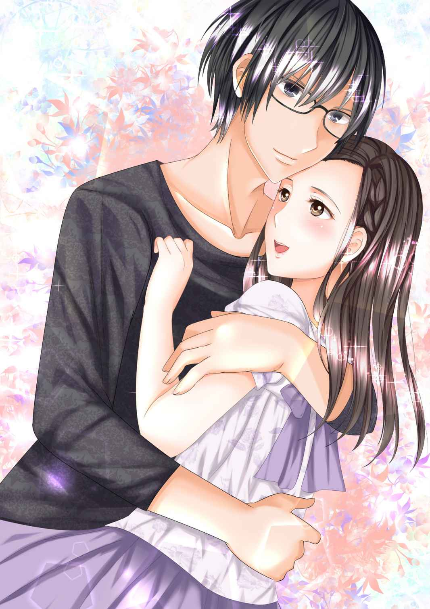
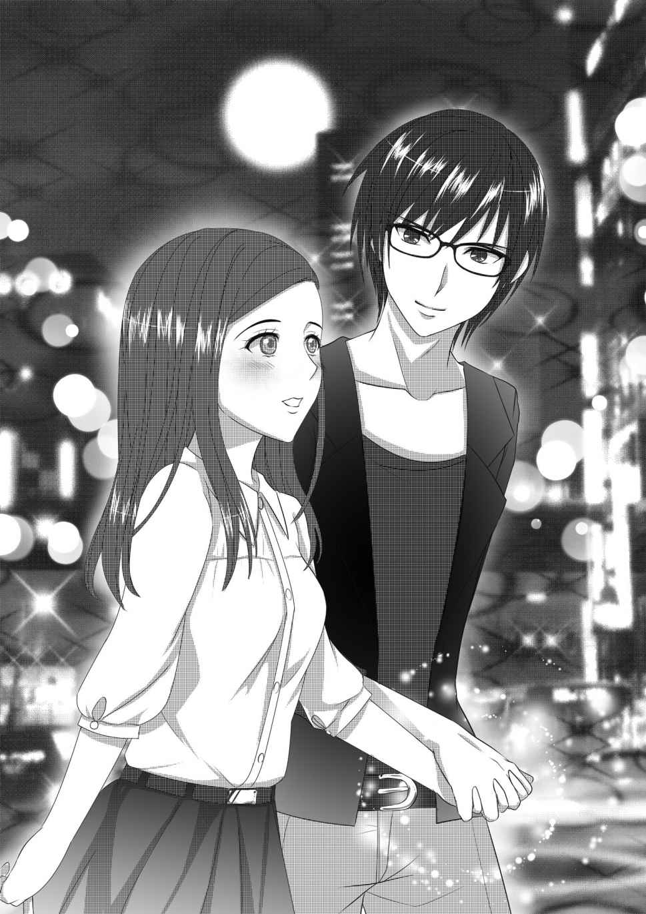
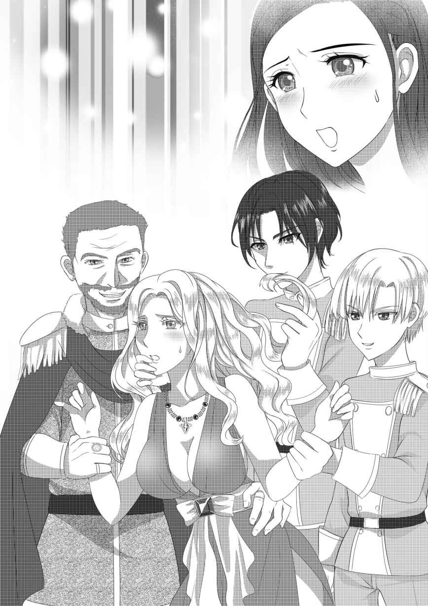
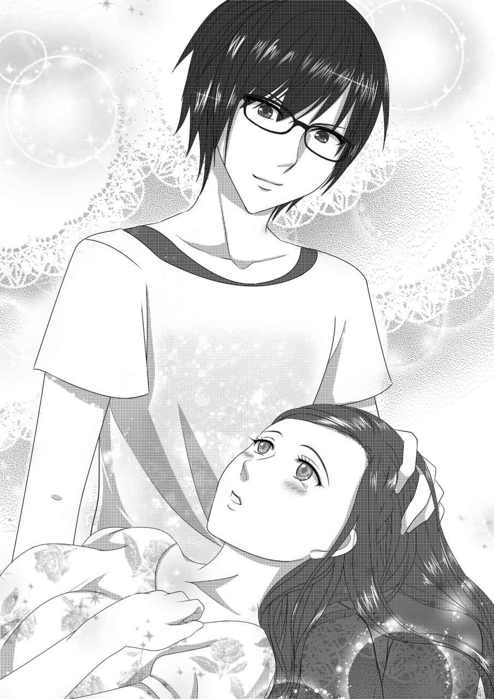

| 「かりそめの王妃」～背徳の物語に捉われて～ (アンジェラ文庫) | |
| かない蒼 & おもおもも | |
| (2015) | |
「かりそめの王妃」
～背徳の物語に捉われて～
かない蒼

【登場人物】
●水原詩織（みずはらしおり）
27 歳ＯＬ。文具メーカーの商品企画部勤務。５歳の頃に「おとうさん」を交通事故で亡くす。ややファザコン。再婚した「パパ」はあまり好きではない。頭をなでられるのと可愛いという言葉が好き。出版社に勤務していた父の影響を受けて、本と読書をこよなく愛する。部屋には大きな本棚（父の遺品）がある。
●芝崎拓也（しばさきたくや）
29 歳、予備校の講師。詩織に対して、穏やかな日溜まりのような愛情を注いでいる。詩織にとっては「おとうさん」の面影を感じさせる存在。
第一章 不思議な贈り物
ゆうべ、おとうさんの夢をみた。
おとうさんは目尻にくしゃっとシワを寄せて笑いながら「詩織は可愛いなあ」と言った。わたしは五歳ぐらい。まだ幼稚園に通っている頃だ。
「おとうさんはいっつも詩織のことばっかり。たまにはわたしにもそう言ってよね」
隣でママが焼きもちを妬いた。ほっぺたを膨らませている。
ちょっと気持ちいい。おとうさんの「可愛い」大好き。大きな手のひらで、頭をなでなでしてくれるのも大好き。
美貴はママの名前。おとうさんはおとうさんで、ママはママで、なんとなくおかしい。でも、それがわが家の決まりごと。
おとうさんは娘におとうさんと呼んで欲しかったし、ママはママって呼んで欲しかった。だからそうなっちゃった。そういうのって、あるよね。
「はいはい。美貴も可愛いよ。さて、と、詩織。いつものやつお願い」
おとうさんはしゃがんで、髭の生えた顔をわたしのほうに向けた。
「おとうちゃま、行ってらっしゃい」
ちゅっ。ほっぺたにキスをした。くちびるがチクチクする。
「じゃあ、わたしもするね」
今度は立ち上がったおとうさんのくちびるに、ママがそっと触れるだけのキスをした。
しーちゃんもそれしたい！ と言ったことがあるのだけれど、おとうさんから「それはダメだ。詩織は大切な王子さまが現れたときのために取っておくこと。いいな」と怖い顔でたしなめられた。そんなおとうさんの顔は、初めてだった。わたしは「はい」とおとなしく頷いた。
わたしとママが玄関で並んで、おとうさんにキスをする。
それがわが家の毎朝の儀式みたいなもの。
おとうさんは、ふたりからキスがないと、その日は一日、調子が悪いとか。変なの。なんだか子供よね、と子供のわたしは思った。おとうさん、可愛い。
「よーし元気出た。じゃ、行ってきます！」
おとうさんはガッツポーズをして鞄を抱えると、観葉植物のパキラの葉を揺らして玄関の扉に向かった。
そのとき、わたしはおとうさんの背中にゴミがついているのに気が付いた。「あ」と口を開いた。けれども、おとうさんはドアを開けて明るい朝の光に包まれていった。
おとうさんのさわやかな出勤の姿を見たのはそれきり。
その日、おとうさんは帰ってこなかった。
ベッドの上に起き上がって、わたしは泣いた。
ぽろぽろと涙が零れて、パジャマの胸のあたりに染みをつくった。
もう二十年も前のことなのに、なんて鮮明な夢なの。おとうさん。わたしは声に出してつぶやいた。おとうさん、おとうさん、おとうさん。どうして死んじゃったの？
午前五時五十五分。
少しだけ空は明るくなり始めていて、カーテンの隙間から光が零れている。
わたしの部屋は壁一面に本棚がある。おとうさんからもらった本棚だ。
おとうさんは出版社で編集の仕事をしていた。文芸書と呼ばれる小説や、ビジネス書籍を担当していた。
おとうさんは本が大好きで、おとうさんの書斎には壁はもちろん床まで本で埋めつくされていた。わたしはときどきおとうさんの部屋に入って、ぼーっと本を眺めるのが好きだった。
南側の窓から入り込む陽光の中で埃がふわふわ浮いて、とても素敵な匂いがした。整然と並んでいる本もあれば、大きさがばらばらの本もある。
絵本しか知らなかったわたしには、どこか別の世界、異空間のようにも思えた。
わたしの名前も、本の好きなおとうさんが付けてくれた。
「詩織。いいか、詩はことばの宝石だ」
分厚い印刷された何かに赤いボールペンでびっしりと書き込みをしているおとうさんのそばで、本の背表紙を眺めていると、おとうさんは言った。
「その宝石をつなげて織り上げると、素敵な布ができる。詩織は、そんなきらきらした宝石で織られた布のような女の子に育って欲しいんだ」
うんうんと首を縦に振って、おとうさんの話を聞いた。
でも、実際のところは、よく分かんなかった。
いまならちょっとだけ分かる。宝石よね。宝石は好き。
ベッドの脇に置いてあるティッシュボックスから、ティッシュを抜き取って涙を拭いた。ちんと鼻をかんだ。はーなんかせつない。
そういえば日曜日だったことを思い出した。今日の午後には恋人の拓也さんが家に遊びに来る。お掃除しなくちゃ。
自分ではおとなしい性格だと思う。
お嬢さま学校として知られる中高一貫教育の女子校から女子大に進んだので、淑女のつもり。
でも、どういうわけか大学に入ってからも社会に出てからも、会う男性からエロいと言われてしまって困惑する。細身の割におっぱいが大きいせいなのだろうか。
ぴったりとした服を着なくても胸元を見せなくても、胸の大きさは隠しようがなくて、街を歩いていても男性の視線を感じる。通勤電車ではあからさまに肘を押しつけてくるひとがいて困っちゃう。でも文句を言う勇気なんてない。
わたしは中堅の文具メーカーの商品開発部門に勤めている。キャラクター付きのメモ帳やノートを作るのがわたしの仕事だ。
ある日、総務の女の子から「ゴメン、詩織。メンバーが足りないの。合コン参加して」と頼まれて、その子がフェイスブックで知り合った仲間たちの合コンに行ったことがあった。男女五人ずつで、まずは自己紹介をした。それから自由に飲み始めた。
最初から視線感じる男の子がいたのだけれど、かなり酔っ払ったころに、彼がわたしの左隣にやってきた。
「ちわっす。ここいいっすか。大手広告代理店Ｄで営業やってるコンドーでーす。ヨロシク！」
日焼けしてネクタイなしのボタンダウンのシャツを着て、いかにも軽薄そう。そいつはわたしの胸を遠慮なく舐めまわすように見て言った。
「詩織ちゃん、だっけ。おっぱいおっきいよね」
やっぱりそうきたかと思いながら応じた。
「そんなことないですよ」
「いや、おっきい。あのさー壇蜜に似てるって言われたことない？ あるでしょ。エロい身体してるよね、詩織ちゃん」
テーブルの反対側に座って酔っ払ってプチトマトみたいな顔になったエンジニアの男性が「おいおい、おまえストレートだな」と笑った。わたしは両手でウーロン茶のグラスを抱えて黙って飲んだ。壇蜜さんは素敵だけど、もっと他にボキャブラリーないわけ？ 若いのに頭の中はおじさんじゃない。どっか行ってくれないかなあ、このひと。
そんなわたしの脳内を推測する気遣いなんか彼にはない。
「詩織ちゃん、ゲームしよ」
「へ？ ゲーム？」
わたしが首を傾げると、そいつは続けた。
「乳頭あてゲーム！」
割り箸を両手に持って、わたしの胸を突っつき始めた。
いやっ。わたしは身をよじらせた。
彼に嫌悪感があったせいもある。でも実は、わたしは乳首がとても敏感なのね。ちょっと触れられただけで硬く尖ってしまう。困惑して眉をひそめているわたしに、しつこい攻撃をしてくる。
わたしが彼から遠ざかろうとすると、バン！ とテーブルを叩いて右隣にいた男性が立ち上がった。
「きみ、いい加減にしてもらえませんか！」
え、え、いつの間にか、こんなひとが隣に座っていたの？ やだ、変態男に注意しすぎて、ぜんぜん気付かなかった。メガネが似合っていい雰囲気。
彼はおちゃらけた代理店男のところへ行くと割り箸をぶん取った。そしてわたしに言った。テーブルのみんなはシーンとしている。
「詩織さん、文具メーカーにお勤めですよね。お仕事でご相談があるのですが、もしお時間いただけるようでしたら、外でお話しさせていただけませんか？」
「あ、は、はい。あ、えーとお金......」
「幹事さーん。ぼくと詩織さんの分です。これで足りるでしょ」
彼はお札をテーブルの上に無造作に置いた。すると、代理店男が睨み付けて立ち上がった。
「おいおい、てめえいきなりなんだよ。もうお持ち帰りかよ」
「近藤さん。あなたＤ社の藤原部長の部下ですよね」
顔色ひとつ変えずにメガネの王子さま（って勝手に名前付けちゃった）は代理店男に静かに言った。代理店男の顔がさっと変わった。
「藤原部長とは、プライベートで親しくお付き合いさせていただいています。近藤さん、飲み会で部下がセクハラしてるって報告させていただいても、よろしいでしょうか」
代理店男はぐっと詰まって「すみませんでした」とちいさな声でつぶやいて、へこっと座り込んだ。
「さ、行きましょう」
メガネの王子さまは、わたしの手を取った。きゃっ、強引だけど素敵。わたしは彼の長くて男らしいゆびをぎゅっと握る。
「近藤さん、また今度！」
さわやかに王子さまが言い放った。わたしは、ぷっと吹き出してしまった。

居酒屋から外に出ると、夜の街に流れる風が涼しかった。
「酔っ払いすぎですよね、彼は」
王子さまはわたしの手を離して言った。
「あのう、お名前、なんでしたっけ？ ごめんなさい。自己紹介のとき緊張していて、みなさんのお名前ぜんぜん覚えられなくて」
「ですよね。芝崎拓也といいます。どうぞよろしく」
「あ、わたし、水原詩織です。詩織は、ポエムの詩に織り姫の織と書きます」
「なるほど。詩を織るわけですね。きれいな反物ができそうだ」
わたしは、どきんとした。彼の言葉に胸が高鳴った。
おとうさんの言葉みたい。やだ、なんかほっぺたが赤くなっている気がする。わたしはあわてて首を傾げて彼に言った。
「芝崎さん、お仕事のお話があるんでしたよね？」
彼は右側の口の端だけ、すっと上に上げると、次の瞬間に高らかに笑って言った。
「あはは。あれは詩織さんを連れ出すためのウソですよ。でも、せっかくだからお茶でもしませんか？ ぼくも酔いを覚ましたいし、詩織さんとゆっくりお話したいし。この後、何か予定がありますか？」
「いいえ、ぜんっぜん！ ご一緒させてください」
わたしは全力で首を横にぶんぶん振った。
「この先に素敵な喫茶店があるんですよ」
おともしますぅと、心の中のわたしがはしゃいだ。落ち着け、わたし。
彼の後ろから横顔をみつめながら歩く。
端正に整った顔立ち。ちょっとだけくしゃっと乱れている後ろの髪の毛が素敵。背はそれほど高くはないけれど、わたしが小柄なので釣り合う感じかな。悪くないわ。
わたしの左側を歩く彼の横をクルマが通り過ぎて行った。彼は立ち止まってクルマが通り過ぎていくのを待った。
手をつないでくれないかな。左手が寂しいの。
わたしは少しだけ期待した。ここは危ないから手をつなぎましょう。そう言われたらぜったい手をつないじゃう。
などと考えていたら、妄想の暴走が止まらなくなった。ブレーキが壊れた。
ここは危ないのですか、いったいどうしてかしら？ わたしはゆるふわなドレスを着たお姫さまになっている。いや、ここにはあなたみたいな美しいひとを襲うケダモノたちがたくさんいるからですよ。篠崎さんは、王冠を被って金ボタンの服を着た王子さまに変身。腰には短剣。
ここは都会の魔境だ。危険すぎる。きらん。王子さまの目が輝く。シオリ姫、あなたを守らなければ。
そうなのですか？ やだ怖い、守ってくださいませ、王子さま。
もちろん、あなたを守りますよ、姫。
わたしは両手を組んで、王子さまをキラキラした瞳で見つめる。
肩を抱いてもいいですか。きゃー。抱いて抱いて。ふわりと彼の手のひらが肩に触れる。ぴぴぴっと電気みたいなものが身体に走る。あん。髪にも触って。でも耳は感じちゃうから、いまはあまり触れないでね。腕を組むのもいいわ。腰に手を回されるのも好き。お姫さま抱っこをしてもいいのよ。いやん、どうしましょう。
「ん？ どうしました？」
芝崎さんが振り返ってわたしに訊いた。
「や。やややや。どうもしませんっ！」
妄想の世界から現実に戻ってどぎまぎした。ふぅ。わたしのこの妄想癖、どうにかしてよ。わたしは、前屈みになってため息をついた。
「ここです」
彼が連れてきてくれた喫茶店は、店の入り口にランタンが灯されていた。
メルヘン調だけれど子供らしい感じではなくて、落ち着いたレトロな雰囲気だった。出窓から中の様子が見える。あったかい光が漏れている。木の扉には「プロネーシス」という焼き印のプレートが掛かっていた。
からんからん。ドアに吊された扉を押して中に入る。
「うわあ......」
シックな照明とダークブラウンの床の店内に足を踏み込んだ途端、わたしは思わず驚きを声に出していた。
というのは、店の奥の壁が一面、本棚になっていたからだ。
何冊あるんだろう。千冊ぐらい？ もっとあるかしら。すごい。
「すごいでしょ。本がいっぱいあるから落ち着くんですよ」
「あ、わたしもそうなんです！」
嬉しくなってしまって、叫んでしまった。いけない。口を両手で押さえた。
彼に導かれて、本棚の前の席に座る。棚の本を眺めてしまう。わたしの目の前には、懐かしい児童書や絵本があった。
アントワーヌ・ド・サン＝テグジュペリの『星の王子さま』、シェル・シルヴァスタインの『ぼくを探しに』、フレデリック・バックの『木を植えた男』、ルース・スタイルス・ガネットと ルース・クリスマン・ガネットの『エルマーのぼうけん』、レイモンド・ブリッグズの『スノーマン』、そしてミヒャエル・エンデの『はてしない物語』『モモ』。
わたしが夢中になって本棚を眺めていると、芝崎さんが言った。
「本が好きなんですね」
「そうなんですよ。大好き」
ここで暮らしたいぐらいだわ、と思ってしまった。ぼんやり本を眺めていたので、ウェイトレスさんが注文を取りに来たことにも気づかなかった。
「ぼくはコーヒー。ブラジルで」
「わたしは......えーと、ロイヤルミルクティーをお願いします」
「コーヒーは嫌い？」
「いえ、そんなことないんですけど。児童文学を見ていたら、なんだか甘いものが飲みたくなってしまって」
わたしはちょっと俯いて答えた。
「ブラジルお好きなんですね」
「ええ、まあ。ウンチク語るのはあんまり好きじゃないんですけど、ブラジルにまつわるお話をしてもいいですか？」
「どうぞどうぞ。聞きたいな」
テーブルの上には、ちいさなブックライトがふたりの手前の空間を照らしていた。
「銀ブラって言葉あるじゃないですか。あれは、銀座をブラブラ散歩することじゃなくて、銀座でブラジルコーヒーを飲むこと、という説があるらしいんです」
「へー！ そうなんですか。知らなかった」
「カフェーパウリスタって喫茶店が銀座の中央通り沿いにあるんですけど、そこでブラジルコーヒーを飲むことを、ある学生が銀ブラと言ったらしいんです。それが銀ブラという言葉のはじまりとか」
「ほお」
変な合いの手を入れてしまった。銀座っていえば、ワコールがあったわよね。あ、ブラの話じゃなかったか。
やがて飲み物が届けられた。おいしい。なんだかとろけちゃいそう。
「ちいさい頃から本が好きだったんですか」
「はい。父が出版社で編集の仕事をしていたので。家に本がたくさんありました」
「すごいな。お父さまはいまは？」
わたしはちょっと戸惑った。でも話すことにした。
「その父はもういません。わたしが五歳のときに亡くなりました」
芝崎さんは少し眉をひそめて言った。
「それは......失礼しました」
「いえいえ、気にしないでください。大丈夫ですよ」
わたしは笑って続けた。
「その出版社で働いていた父はいないのですが、母は再婚したので。変な話ですけど、前の父はおとーさん、現在の父はパパと呼んでいます。おかしいでしょ？」
拓也さんは、あははと笑った。
「そうなんですか。大学でも文学を勉強されていたんですか？」
「はい。国文学科でした。卒論は......」
「ひょっとして詩？」
「アタリです。芝崎さんって鋭いですね」
「だって名前が詩織だから。わかりやすいじゃないですか」
彼は笑った。陽だまりみたいな笑顔だった。わたしまで微笑んでしまった。
「どんな詩人の方を研究されたんでしょう」
「ご存じかなあ。茨木のり子さんというんですけど」
「知っていすよ。茨木の『歳月』という詩集がぼくは好きですね」
どきん。わたしはびっくりして息が苦しくなった。彼が茨木のり子さんを知っていたことにもびっくりしたけれど、好きな詩集が『歳月』だなんて。
「あの、実は......その『歳月』で卒論を書きました」
「ほんとうですか？ ちょっと官能的な詩集ですよね」
そう、『歳月』は茨木さんが亡くなった最愛の夫について綴った詩集。
夫への愛情に溢れていて、せきららで官能的な詩もある。
たとえば「夢」という詩は、まどろみのなかで亡くなった夫に愛撫された夢を見て、足を開いてて身体の中に夫を受け入れオーガズムの声を上げて目覚める、というところからはじまる。わたしはその部分を読んでいたら、きゅっとお腹の下あたりが締め付けられた感覚があって、下着を濡らしたことがあったっけ。
そのことを思い出して照れくさくなって視線を落とすと、コーヒーカップを握っている彼の手が見えた。男らしくて長いゆび。わたしは彼の中ゆびに見とれてしまった。
彼は何か詩について語ってくれているけれど、紅茶のカップを両手で持って飲みながら、視線は彼の中ゆびに釘付けになっちゃった。
あのゆびが、わたしの濡れたわれめを撫でて、わたしの中に入ってきたらどんな感じかな。くっと曲げて奥の突き当たったところを、何度も繰り返し突かれたらそれだけでいっちゃうかも。わたしはきゅっと膝を合わせた。やだ、わたしってもう濡れてない？ さっき会ったばかりのひとに何考えてるのよ。
「......りさん。詩織さん？」
「は、はい？」
呼びかけられて驚いた。現実に戻った。
「どうしちゃったんですか？ まだ酔ってるのかな。ぼんやりしていましたよ」
「いえ、酔っているというか......ちょっと考えごとしていました。ごめんなさい」
「そうなんですか。謝らなくてもいいですよ。それより何を考えていたんですか？」
「たいしたことじゃないです」
言えるわけないよね。あなたのそのゆびを、わたしのあそこに入れて欲しいなんて。
こうしてわたしは拓也さんと出会い、恋に落ちた。
拓也さんとはそれから何度も会った。
映画を一緒に観たこともあるし、美術館に行ったこともある。「プロネーシス」で待ち合わせをして本の話を何時間もしていることもあった。
飲み会で連れ出されて茨木のり子さんの話をしたときから、相性ばっちりかもしれないと直感的に彼に好感を抱いたのだけれど、会うたびにその直感を確信した。こんなめぐり逢わせをしてくれるなんて神様にキスしたいぐらい。
彼は、予備校の国語のセンセイだった。
予備校っていえば、若い学生もたくさんいるじゃない。可愛い女の子もいるから、わたしは気が気じゃなかった。
フェイスブックでも友達申請したのだけれど、彼のフレンドは２５８人。青年実業家、みたいなかっこいい男性や、渋いおじさまもいたけれど、それ以上にモデルみたいな可愛い女の子が多くてわたしは胸が痛んだ。
彼が読んだ本の投稿に対して、洗練された知的できれいな女の子がコメントしていて、優しい返信を彼が書いていたりすると、わたしは何なの？ と胸の奥がざわざわして眠れなかった。わたしのフレンドといえば12 人。職場の女の子と、学生時代の同級生。
でも、ある日の帰り道、そんな不安は吹き飛んでしまった。
いつもわたしは彼の後ろを歩く。並んで歩くより、ちょっと後ろを歩くのが好きなの。拓也さんはその日、わたしのほうを振り向いて言った。
「詩織さん、大切なことをこんなところで言うのもどうかと思うけど......」
夜の街をわたしたちは駅に向かっていた。十一月。クリスマスが近づいてブルーとピンクのイルミネーションで街路樹は彩られていた。きれい。わたしは振り向いた彼の向こうにみえる街の色彩と彼のシルエットをみつめていた。
「きちんとお付き合いしませんか？」
彼はわたしのほうにきちんと身体を向けて言った。
「詩織さん、ぼくはあなたのことが好きです。大切に思っています」
わたしの胸がきゅうううんと鳴った。視線を落として微笑んで言った。
「わたしのほうこそ、よろしくお願いします。わたしも拓也さんのことが大好きです」
「よかった。断られちゃったら、どうしようかと思っていました」
「そんなこと。あるわけないじゃないじゃないですか」
わたしは彼のそばに寄り添って、彼の人差しゆびをぎゅっと握った。彼のゆびが好き。わたしたちは寄り添って歩いた。イルミネーションが華やいだ。わたしはこの日を忘れない。ずっと覚えていたい。
けれどもそれからが長かった。
いつまで経っても拓也さんはキスもしてくれなかった。わたしって魅力がないのかしらと、心配になるぐらい何もしてくれない。
もちろん会うたびに手をつないで歩いた。時間を忘れるぐらいたくさんの話をした。「詩織さん、好きですよ」と言ってくれた。彼の言葉を聞くと、わたしの胸は高鳴るのだけれどその先がない。
自宅でご家族と生活しているので、なかなか密接な関係になれる機会がない。酔っ払っちゃってホテルへ、という手もあるけれど、なんとなくわざとらしい。それにせっかく愛し合ったのに覚えていないのは寂しすぎる。そこである日、わたしは自分のマンションに彼を連れ込......いやいや、ご招待することにした。
その日、わたしは髪の毛ひとつ落ちていないようにチェックして部屋を掃除した。その後で、シャワーで身体の隅から隅まで磨きあげて、コロンを振りかけて、鏡に向かってにこっと笑ってみた。完璧だ。お気に入りのＡラインのワンピースを着て、くるっと回ってみる。準備はオーケー。
待ち合わせの時間五分前に、わたしのマンションの最寄り駅に彼はいた。片手に花束、もう片方にちいさな箱を持っていた。男の人から花束なんてもらうのは初めてだ。スキップしたい気持ちを抑えて彼に近づいた。
「こんにちは、拓也さん。ようこそわたしの街へ」
「素敵なところに住んでいるんですね。こんにちは」
彼は左手に花束と小箱を持って、わたしの手をつないだ。
通勤したり買い物したり、ふつうに過ごしている街に拓也さんがいるのが不思議。ふだんと同じ風景なのに、別の世界になっちゃったみたい。
「花束なんて買ってしまいました。ちょっと恥ずかしかったのですが」
「嬉しいです。ありがとうございます」
「イチゴのショートケーキも買いました。うちの近所のケーキ屋さんで買ったんですが、ここ、なかなか美味しいんですよ」
「わたし、イチゴのケーキ大好きなんです」
マンションに着くと、彼はお邪魔しますと言って靴を脱いで部屋に上がった。何よりもまず壁の本棚を発見して唸った。
「これは......素晴らしい」
「わたしには大きすぎるのですが、おとうさんが残してくれたものなんです」
「いろんなジャンルの本がありますね、古典から最近のベストセラーまで。もちろん詩集も。ビジネス書を読むのは意外でした。そうか、企画のお仕事をされているからマーケティング関連の本は必読ですね。ドラッカーもある」
「あんまり内容はよく分からないのですが、おとうさんが持っていたので」
彼が買ってきてくれたピンクのバラとかすみ草を、雑貨屋さんで買った花瓶に挿した。コーヒーを淹れた。
部屋に訪れたのは初めてだったのにも関わらず、拓也さんはわたしの部屋に馴染んだ。ずっと前から一緒だったような錯覚まであった。男のひとと暮らすのって、こういうことなのかな、とふと考える。やだ、わたしってば結婚とか考えてるのかもしれない。ちょっと早すぎる気がする。
コーヒーを飲んでくつろいで、彼が自宅から持ってきた映画を観ることにした。
「ちょっと難しい映画だから、どうかなと思うのですが」
そう言って彼が鞄から取り出した映画は、『潜水服は蝶の夢を見る』というフランス映画だった。世界で有名なファッション誌『ＥＬＬＥ』の編集長ジャン＝ドミニック・ボービーの実話をもとにした映画だそうだ。
彼はジャンドーという愛称で呼ばれていて、ファッション誌の出版業界で華やかな生活を送っていた。ところがある日、息子といっしょにドライブしていると脳溢血に倒れてしまう。長い昏睡状態から目覚めると、意識はあるけれど言葉を話すこともできれば、身体をまったく動かすことができない「閉じ込め症候群」になってしまっていた。
ジャンドーは、突然自分の身に降りかかった絶望的な状況に悲嘆に暮れる。けれども唯一、左目の瞼だけは動かせた。そこで、介護診療士さんの持った文字の記されたプレートを、左目のまぶたを動かして指示することで、自叙伝を書くことにする。
わたしは映画を観ながら、すごいなと思った。これって大変なことよね。だって、言いたいことを一文字ごとに視線で伝えて本を書くんだもの。
同時にわたしは大きなショックを受けていた。
というのは、五歳の頃、わたしとママが見送って仕事に出掛けたおとうさんは、信号無視の自動車にはねられて、一時的に意識不明の状態になった。その後、回復したけれど、言葉も身体も動かない状態になってしまったのだ。ちょうどジャンドーのように。
病院に連れられたわたしは、ママの後ろに思わず隠れてしまった。
車椅子に乗せられたおとうさんは、包帯でぐるぐる巻かれて左目だけになっていた。それはおとうさんとはいえない何かだった。とても怖かった。
「話せませんが、言葉は聞こえています。声をかけてあげてくださいね」
髪を束ねた若い看護婦さんが言った。ママは、ぽろぽろ流れる涙をハンカチで拭って「あなた、大変だったわね。頑張ろうね」と言った。「しーちゃんも何か言って」と腕を掴まれて引っ張り出されて、わたしは言った。
「おとうさん。いつものおとうさんに戻ってね」
それを聞くと、おとうさんの目に涙が溢れたことを覚えている。けれどもその後の経過が悪くて、結局、おとうさんは頑張ることもできなかったし、いつものおとうさんに戻ることもできなかった。
「えッ......えッ......えッ......」
わたしは変わり果てたジャンドーが車椅子に乗っている場面を我慢して観ていたのだけれど、とうとう我慢できなくなって嗚咽してしまった。
拓也さんはびっくりして「どうしましたか？」とわたしに訊いて、ブルーレイディスクの停止ボタンを押した。しばらく涙が止まらなかった。そんなわたしを拓也さんは、ただ黙って抱きしめてくれていた。
気持ちが落ち着くと、拓也さんにおとうさんの話をした。身内ではない誰かにこんな話をするのは初めてだった。彼はわたしの話を聞いて「こんな映画を持ってくるんじゃなかった。すみませんでした」と謝った。
「いえ、拓也さんのせいじゃないです。そんなこと話してなかったから。でも、いい映画ですね。わたしは気に入りました」
涙を拭ってわたしは微笑んだ。
ふたりは部屋の中でいつもよりもずっと近くにいた。
拓也さんはわたしを抱いて、わたしをみつめていた。わたしも彼をみつめた。
それぞれがお互いの目から心の中にある気持ちを読み取ろうとしていた。
「詩織さんのことを大切にしたいと思っています」
「わたしもあなたがいちばん大切なひとです、拓也さん」
彼は、わたしのくちびるに触れるか触れないかのキスをした。
「あ」
甘い快感がほとばしる。
拓也さんはしばらく輪郭をなぞるようにくちびるを触れた。
はやく熱いキスをして欲しいのだけれど、焦らされている感じがたまらない。わたしは半分口を開いて、拓也さんのくちびるに愛撫されるままになっていた。やがて彼のくちびるが、わたしのくちびるを塞いだ。
「ん......」
とろけるような快感が身体にあふれた。
一瞬動きを止めたかと思うと、舌がわたしの中に入ってきた。彼の舌をわたしはあたたかく迎えいれた。頭をぎゅっと抱きかかえ、後ろ髪をくしゃくしゃっと掻き上げた。
彼の舌がわたしの舌を求めていた。
ふたつの舌がなまめかしく絡まり、舌の先で舌の先を突いた。
やがて彼の舌はわたしのくちびるの輪廓をなぞって、またわたしの中へ挿入された。
わたしたちは、どれだけの時間キスしていたのかしら。とても長い時間にも思えるし、短い時間だったような気もする。時間が止まってしまったような気がした。
「ケーキを、食べましょうか」
「は、はい。そうしましょう」
わたしはお皿とフォークを用意しようとして、立ち上がろうとした。ところが身体から力が抜けてしまっていて、すとんと尻もちをついた。
「大丈夫ですか？」
優しい声で彼が気遣ってくれた。
「あんまり激しいキスをいただいちゃったので、ちょっとふらふらしちゃいました」
照れて笑った。
「甘いケーキと、甘いキス。ご馳走さまです、拓也さん」
「いえいえ、どういたしまして。こちらこそ」
拓也さんは微笑んだ。
彼がわたしのことを求めているのが分かった。キスとしながら、右のお腹のあたりに彼の強ばったものの感触が残っていた。わたしも濡れていた。してもよかったのに。というより、して欲しかったのに。
複雑な気分で冷蔵庫からケーキの箱を出して、お皿に載せる。ふたり分のフォークを添えて、リビングのテーブルのところへ持っていった。
「イチゴ美味しいですね」
「クリームもさっぱりしていて上品」
仕事の準備をしなければならない拓也さんは、ケーキを食べ終わると帰り支度を始めた。もう帰っちゃうのね。もう少し一緒にいたいな。わたしはさびしくなった。だから玄関のところで靴を履いている拓也さんにせがんだ。
「ねえ、拓也さんの写真撮らせて」
「あんまり写真うつりよくないんですけど、それでよければ」
スマホのカメラで拓也さんを撮った。
せっかくなのでふたりで並んだ写真も撮った。
恥ずかしいのだけど......その日のこと。
拓也さんが帰ってしまって、わたしはぼんやりと今日一日のことを考えた。初めてキスしたことは大きな収穫よね。どうしてもキスのことを思い出さないわけにはいかなかった。ただ、キスの余韻に浸っているとなんだか悶々としちゃう。わたしから積極的になるのもどうかとは思うのだけれど、もう一歩進みたかったのに残念。
気分転換にシャワーでも浴びるか。で、ビールでも飲んじゃおうかな。オヤジみたいだけどそんなことを考えて、よしっ！ と立ち上がろうとした。
けれども、テーブルの上に置かれているスマホの画面に表示された拓也さんの写真を見て、よからぬことを考えてしまった。
やだ、どうしよう
わたしは胸が高鳴るのを感じた。ほっぺたが熱くなる。
やっちゃう？ でも、エロくない？ うーんどうしよう。いや、やっちゃうか！
実行することにした。
スマホを拓也さんの顔がこちらを向くように固定して、わたしは決心した。拓也さん見ててね。
まずワンピースのホックを外してするりと脱ぐ。下着になった。
次にストッキングを脱いで、ぽいっと傍らに放り投げた。
それからフロントホックのブラをかちっと外す。ちょっとだけもったいぶって、するりと肩から床に落とす。もう胸の先端は硬く尖っていた。ゆびでつまんでみる。あん。
そして次はショーツ。下着の上から窪んだ部分にゆびを這わせてみた。じんと痺れた感覚。やっぱり濡れてる。
わたしはゆっくりとショーツを下ろして裸になった。
拓也さん、わたしの身体はどう？ 素敵？ 感じる？
どきどきどき。テーブルの上の拓也さんをスタンドミラーの場所に移動した。そこにわたしもしゃがみ込む。
ねえ、見て。
わたしはゆっくりと脚をひらいた。Ｍの文字のように。
そして右手の人差しゆびと中ゆびで脚のわれめを開いた。溢れた愛液で光っている。その濡れた部分をゆびですくって、クリトリスに擦りつける。
あっ......。
刺激が先端から体中に走り抜けた。
わたしは最初はゆるやかに、そして次第に早く中ゆびで尖った部分を上下に擦った。やだ、止まらない。左手で胸をもみしだく。乳首の先端を軽くつねる。ねえ、拓也さん、見てる？ 見て。感じて。
鏡の中に淫乱なわたしがいた。脚を開いて大きな胸を揉みながら髪を振り乱しているわたし。すごくいやらしい。写真のなかで笑っている拓也さんを交互にみつめる。
いい。すごくいいよ。拓也さん、入れて。とても硬くて大きかったでしょ。あれをちょうだい。わたしは自分の中ゆびを深くわれめの奥に導いた。ああああん。
ゆびがきゅっと締め付けられて、何度もびくびくと動いた。
い、いっちゃった......。気持ち、いい。
わたしは肩で息をしながら、頂点に達した余韻に浸った。両膝を綴じてぺたんと座って。鼓動が静かになるのを待った。
写真のなかで拓也さんが微笑んでいた。
おとうさんの夢からはじまって恥ずかしい回想なんてしていたら......朝の七時じゃない！ 何やってんのよもう。燃えるゴミ出さなきゃ。
よっこらせーっと！ と、おっさんのような掛け声で、わたしはベッドから立ち上がった。
髪留めのゴムでひっつめにすると、寝間着のスウェット姿のままゴミ袋を両手にぶら下げて外に出た。
きれいな青空。いい天気。
絹層雲というのかしら。細い筋のような雲が頭上に広がっている。マンションのゴミ置き場にゴミをひょいっと放り投げた。
部屋に帰る途中で郵便受けを覗き込んだ。
？
何かが届いている。
茶色の封筒だ。サイズは書籍ぐらい。
厚さは３センチ。これは本ね、とおもった。でもアマゾンで注文なんかしてないし。
表には手書きで住所とわたしの名前が書いてある。裏返しにしてみると「アウル・ファクトリー」と書かれていて、鎌倉の住所が記されていた。ふくろう工場。なにかな。念のため振ってみる。中身はずっしりしていて、爆弾じゃなさそう。というか、爆弾振っちゃダメよね。
その他、郵便受けに突っ込まれている相変わらずの不動産関連やピザ屋さんのチラシと一緒に、謎の封筒を部屋に持ち帰った。
なにかしら？ これ。注文した覚えはないんだけど。
わたしはリビングに座って袋の表と裏を確かめた。開けてみようか。爆発することはなさそうだし、いいよね。封をぺりぺりと剥がす。中からはエアークッション、要するにプチプチに包まれた一冊の本が出てきた。手紙は何も入っていない。
プチプチのテープを剥がして、中身を外に出す。
やっぱり本だ。
合成皮革だろうか。ダークブラウンの装丁で、タイトルは何もない。魔方陣のような模様が刻印されている。古めかしい感じのデザインがしゃれている。
ふーん、いいじゃない。
わたしは一ページ目をめくった。そこにはタイトルが書かれていた。
かりそめの王妃
歴史物かしらね。宮殿と美しい王女の姿が想い浮かんだ。
悪くないじゃない。なんとなく惹かれるタイトルではあるわ。本好きの好奇心が頭をもたげ始めた。さらに一ページめくる。
そこには真っ白なページに一文だけが記されていた。
これはアスターシア王国に嫁いだ、シルリオーナ王妃の秘められた物語である。
そのときだ。
ぐらり、と地面が揺れた。
きゃ、地震!?
わたしが立ち上がろうとすると、さらに揺れはひどくなった。
ぐらぐらぐらぐら！ やん、立ってられない！
スマホは地震警報のアラームを鳴らしていない。ということは地震じゃない？
ちょ、ちょ、ちょっとこれ、どうしちゃったわけ!?
空間が、ぐにゃりと歪んだような気がした。ムンクの叫びの背景のように、部屋の中の構図が正しい立体的な位置を失ったような感じになった。
え？ これはいったいどういうこと？ わたしはパニックになった。
頭の中に轟音で飛んでいく飛行機のような音が鳴り響いた。やがてそれは金属的な響きとギターを掻き鳴らすような轟音を伴っていった。頭が壊れそう！
目を開けていられなくて、わたしは目をぎゅっと瞑った。耳を押さえても脳の中で鳴り響く音は消えないのだけれど、耳を両手で塞いでうずくまった。
きゃあ。どどど、どうしちゃったわけ？
何が何だか分からない。とんでもないことが起ころうとしている。
けれども、もっと何が何だか分からなくなったのは、揺れる世界と轟音が過ぎ去って、わたしがおそるおそる目を開いたときだった。
第二章 物語がひらいた！
地震の揺れが止まったみたい。
頭の中に響き渡った轟音も消えて静寂が訪れた。
やれやれ。何だったのかしら。世界の終わりが来ちゃったのかと思ったわよ。もう大丈夫そうね。わたしは耳を押さえていた手を外して、おずおずと目を開けた。
は!?
その瞬間、目を疑った。思わず開いたばかりの目を瞑ってしまった。
悪いものを見てしまった気がする。
えーと、えーと。わたしは朝七時ごろに燃えるゴミを捨ててですね、郵便箱にあったおかしな郵便物を受け取って、マンションの自室に戻って封を開けました。その本を開きました。そうしたら、地震がきて耳鳴りがして。
現状確認、終了。間違ってない、間違ってない。わたしは正しい。おかしくなんかない。自分の認識が正しいことを信じて、もう一度、片目だけうっすら開けてみた。
これはっ!?
思わずマックスに両目を開いてしまった。
視界に広がるのは、がらんとした大理石の部屋だった。ぴかぴかに磨き上げられて、床は柱を逆さまに映し出していた。部屋のいくつかの窓からは、やわらかい太陽の光が入り込み、見たことのない植物が風に揺れていた。南国の植物っぽい。きれい。
いやいやいや、きれいとかそういう場合じゃない！
わたしはうろたえた。何なのこれは？ ここはどこ？
静かで物音ひとつ聞こえない。いい匂いが漂っていた。上品で高貴な感じのする匂いだ。どこかの宮殿という感じ。なぜ数秒間目を瞑っていただけで、まったく別の部屋にわたしはいるわけ？
さっきまでわたしは自分の部屋にいたよね？
お気に入りのスウェットを着てリビングに座っていたよね？
ゴミを捨てに行きながら、青空ときれいな絹層雲を見たことを覚えている。それなのに、いまわたしがいるところはどこかの宮殿だった。わたしの部屋はどこへ行ってしまったわけ？ 状況がまったく飲み込めない。パニックになりそう。
これは夢だ。悪い......とはいえないけれど、きれいすぎる夢だ。
妄想癖が進化して幻を見るようになってしまったのかしら。本を読みすぎたせい？ それってかなり深刻な状態かもしれない。お医者さんに行かなきゃダメだ。何科のお医者さんに行けばいいんだろう。ネットで調べたら分かるかな。
がっくり頭を落とした。途端に自分の身体の変化に気付いて、ぎょっとした。
わっ。
何このでっかい乳！
もともとわたしのおっぱいは大きい。
とはいえ、これは常識はずれの大きさだ。
しかも何このエッチな格好。わたしはくたびれたスウェットを着ていたはず。なのにいつの間にか、透明なさらさらとしたシルクの薄いドレスを纏っていた。ほとんど裸状態なので、つんと尖った胸の先も見えれば、金髪の茂みも見える。
えっ。金髪!?
思考がフリーズした。もう一度確認してみた。
あそこは金髪の茂みだった。とはいえ毛が薄いので、はっきりわれめがみえる。
ややや？
わたしは右腕を持ち上げた。右腕には黄金のブレスレットと、いくつかの宝石をつないだ二重のブレスレットが巻かれていて、しゃらんと音を立てた。そういうものに縁がないとはいえ、それがイミテーションではないことはわかった。本物だ！
周囲を見回した。座っている場所はベッド。きめ細かな織りの上品なシーツで覆われている。見上げると天蓋があった。ブルー・サファイアのような深い青のヴェールで覆われていて、ところどころに星を模した金の飾りが光っている。
ラブホじゃないことはわかった。
こんなに贅沢な天蓋はあり得ない。何のいたずら？
立ち上がった。足首にも宝石のアンクレットが巻かれていた。ネックレスにも宝石。どういうことよ。こんなファッションしたことがない。持ってないし。
ふと身体の向きを変えたとき、人影に気づいてびくっとした。誰かいる！
その相手もびくっとした。そこで気が付いた。鏡だった。
誰かいるとおもったのは自分の姿だ。
ええええええ？ これがわたし？ うそっ！
頭には金色のティアラ。大きなものではないけれど繊細な細工がされていて、ちいさな宝石がいくつも埋め込まれていた。
顔は、うっとりするほど美しい。外国の女優さんみたいだ。
睫が長くて目が大きかった、肌は純白で顎が細くて、ふっくらしたくちびるは濡れたように潤っている。金髪の巻き毛は胸のあたりまであった。流れるように渦を描いた髪の先を、ゆびにくるくる巻き付けてみた。
身体がまた素晴らしい。なんてナイスバディなの。
細身だけれど出るとこは出て、引っ込むところは引っ込んでいる。ため息をついてしまった。こんな身体に生まれてきたかったものだわ。くるりと回って後ろ姿を確認してみた。やれやれ。ヒップも完璧じゃないの。うらやましくなるぐらい完璧なライン。
待て待て待て！ 問題はそういうことじゃない。
誰なのこれは。これがわたしのわけないじゃないの！
そもそも、夢を見ているのではないでしょうか。
うん。それはとても正常な考え方ね。わたしはほっぺたをつねってみた。痛かった。夢を見ているというシチュエーションで、多くの人間がやりがちなことをやってしまった自分が恥ずかしくなった。どうやら夢じゃないみたい。
と、すれば、だ。
どうやらわたしは変身してしまったようだ。
ついでに、どこかの国にテレポテーションしちゃったらしい。
うーむ。わけがわからない。もしかするとわたしは潜在的に超能力者だったのかもしれない。気が付かなかった！ いや、そんなことありませんって！
どうしていきなりわたしは変身してしまったのか。
シンデレラ的な素質があったのかしら。異業種交流会で魔法使いのおばあさんに会ったことがあったっけ？ 思い出す限り記憶がない。魔法使いの経験もない。
いい。もういいです。家に帰らなきゃ。タクシー拾えば帰れるかな。
その前にこの格好じゃ外に出られない。服を探そう。といっても、どこにあるのよわたしの服は！
いやいやいや、落ち着けわたし。
やっぱりこれは夢だ、こんなことあり得ないもの。夢に違いない。
もう一度目を瞑ろう。十数えよう。目を開いたら、すべて消えちゃうはずだ。スウェットを着て自分のマンションにいる普段のわたしに戻れるはずだ。そうだそうだ。
わたしは鏡の前に立って目を瞑った。ひとつ、ふたつ、みっつ。
よしよし。落ち着いてきた。問題なさそうじゃない。
むっつ、やっつ、ここのつ、とうっ！
ぱっと目を見開いた。そして落胆した。変わってない......。
いま目の前にある世界が現実で、それまでの現実が空想の世界だったように思えてくる。そうだとしたら、ママやパパ。拓也さん。仕事場なんかはどうなっちゃったわけ？
わたしはこめかみにゆびを当てた。ずきずきする頭で考えた。考えて目の前にある風景が変わるわけではなかったけれど、とりあえず考えずにはいられない。この状況は理解を超えているんだもの。
あまりに集中して考えていたので、近付いてきた人影に気づかなかった。
「目が覚めたようだな」
わたしは飛び上がるほどびっくりした。
しかし、どういうわけかその声を聞いたときから、身体はわたしの自由にならなくなっていた。声の主は、ジョージ・クルーニーみたいな白髪の素敵なおじさまだった。マントを肩から掛けて、宝石で飾られたベルトをしている。
何のコスプレ大会ですか、これは。
さらに驚いたことに、コスプレ王の右側の空間にホログラムのような金色に光る文字が現れた。
シルリオーナが午後のまどろみから目覚める頃を見計らって、ファリル王が寝室に訪れた。彼は王妃に微笑むと、彼女のほうに歩み寄った。
え？ え？ 何このテクノロジー。
拓也さんが教えてくれた、プロジェクションマッピングとかいうやつ？
それも不思議だけど、どうしていきなりわたしは動けなくなっちゃったのよ。うん、うん。ぜんぜん身体が動かない。
金色の文字は数秒後、砂のようにさらさらと崩れて消えてしまった。
「気分はいかがかな？」
「ありがとうございます。上々ですわ」
わ。わたしが喋ってる！
いや、喋ってはいるけれど、わたしじゃない。喋っているのはこの、わたしの身体を乗っ取っている金髪女だ。声もぜんぜん違う。なんという甘ったるい声。というか金髪なのに日本語ってどういうことよ。英語じゃないの？
「相変わらず美しいな、シルリオーナ」
「お褒めにいただいて光栄でございます。ファリル王さま」
王さまとお妃さま？
あ！
わたしは思い出した。
『かりそめの王妃』って本を読んでいたよね、確かわたし。
すると今度は天井に金色の文字が浮かび出た。
ファリル王はいつものように午後の快楽を求めるために、シルリオーナの寝室を訪れたのである。王は彼女に服を脱がせるように命じた。
「さて、今日も楽しもうではないか。服を脱がせてくれ、シルリオーナ」
この子はシルリオーナって名前なんだ。でも、わたしは詩織。
うーむ。それにしても午後の快楽って何だろう。
言ってることが、よく分からない。
シルリオーナは手際よくマントや上着から王の服を脱がせていく。
あれ！ 驚いたことに自分にもマントや上着の質感があった。身体はわたしの自由にはならないけれど、感覚、行動、言葉はシルリオーナのものがわたしのものでもある。要するに、彼女に憑依しているみたいな状態なのよね。つまりわたしの身体が乗っ取られたわけではなくて、わたしの意識がシルリオーナって女の子に混入している？
ちょっと待ってよ。変身とテレポテーションできる超能力者かと思っていたら、もしかして、わたしってば生き霊ってわけ!?
勘弁してよね。というかここから出して。わたしはわたしの身体を自由に動かしたいの。
けれどもわたしの身体はシルリオーナから出られない。
そんなわたしの混乱状態にはおかまいなしに、ふたりの行為は進展していく。
王は白髪とはいえ、引き締まった胸板の厚い身体をしていた。シルリオーナは上半身裸になったファリル王の乳首にくちづけをした。意識しかないわたしに、彼女のくちびるの感覚が伝わった。どういう仕組みになっているのかしらこれは。新種の体感ゲームみたいなもの？ バーチャル・リアリティ？
「まてまて、焦るな、シルリオーナ」
ファリル王は満足そうに笑った。そして彼女は王のタイツを引き摺り下ろした。
きゃあ。ちょちょちょちょっと待った！
わたしは目をそらそうとしたけれど、シルリオーナに身体の自由を奪われているので、動かすことができない。シルリオーナがしゃがんだので、王さまのものを顔の間近に見てしまった。
お......おっきい。
まだ元気にはなっていなかったけれど立派だった。
さすが王さまね。立派なものをお持ちだわ。キングサイズなこと。
いやいやいや。そんなことより、これから何をしようとしているわけなの？
着るものをすべて脱がされてしまうと、ファリル王は今度はわたしの服を脱がせた。
薄いドレスしか着ていなかったから、あっという間に全裸になった。正確に言うと完全に裸ではない。宝石だけは纏っている。
「宝石だけというのもいいものだ。そなたの美しさを引き立てる」
ファリル王は、わたしの身体を上から下まで眺めた。きゃっ。恥ずかしい。
待てよ。考えてみると、自分の裸ではないのだから恥ずかしがることはないか。うーん。でも、やっぱり恥ずかしい。
シルリオーナはふぁさっと髪をかき上げると、右側のおっぱいをぎゅっと上に上げて硬くなった先端をゆびで転がした。どうやら王さまを挑発しているらしい。
あはん。
うわっ。これはいったい!?
彼女の性感がわたしにダイレクトに伝わってくる。
ファリル王の目が妖しく光るとわたし、というかシルリオーナを抱き寄せた。
男らしい胸板、そして下腹部に押しつけられたキングサイズのあれを感じた。嗅覚もそのままわたしの意識に滑り込んでくる。間近で見つめる王さまからは、大人っぽくて上品な匂いが漂っていた。ムスク系の香りかしら。
ファリル王はシルリオーナの身体を抱き寄せた状態で、背骨の上から下に向けてすすっとゆびを走らせた。
ひいいっ。
電流のような快楽が走った。シルリオーナとわたしの両方に。
わたしも感じやすい。ちょっとしたことでも乳首が立ってしまうし、下着を濡らしてしまう。ところがこのシルリオーナは、さらに感度が優れているようだった。咥えて、このエロおやじはオンナが悦ぶ場所を知っていた。ものすごい快楽がわたしの意識に押し寄せてくる。たまりませんわ。
王さまはわたし、というかシルリオーナの頬に軽く手を当て顎に移動した。
ターコイズというか、ちょっと緑がかった青い瞳がわたしを覗き込む。どきん。やだ。魅力的な瞳じゃない。おじさん素敵かも。わたしを、というかシルリオーナをみつめながら彼は言った。
「そなたも不憫な王妃なことよ。しかし、わしが存分に可愛がってあげよう」
不憫ってどういうこと？
わたしが疑問を感じていると、抱き寄せた王の向こう側の壁に金色の文字が浮かんだ。
シルリオーナはファウンテン王国の第二王女であった。二つ上の第一王女、サランティナ、三つ年下のティファラール王女と三人の王女は仲が良く、国中から愛されていた。
文字が出現すと同時に、脳内に映像が浮かび上がった。
亜麻色の髪をしたお姉さんが、シルリオーナの髪を梳いてくれている。膝の上では巻髪のあどけない顔の少女がにこにこしながらわたしを見上げていた。髪梳きのお姉さんがサランティで、わたしが頭を撫でている少女が妹のティファラールね。
その向こう側で立派な王と王女が、三人の娘を微笑みながら見守っていた。
おとうさん！
遠い場所にある王の顔をみて、わたしは思わずそう叫んでいた。
それは記憶の中にあるおとうさんの顔にそっくりだったからだ。けれどもそれはわたしのおとうさんではなかった。シルリオーナのおとうさんだった。
豊穣な泉に恵まれたファウンテン王国は農業が栄え、さまざまな果樹園や畑から収穫される農作物で人々は質素ではあるが満ち足りた生活を送っていた。しかし、その水源と農作物を略奪して自国のものとするために、隣国のアスターシア王国は戦争を仕掛けた。
場面が急展開して、わたしの脳内は戦場となった。
鎧を着た兵士たちが叫び声を上げて飛び込んでくる。剣を振りかざし、弓矢を射る。残虐な無差別攻撃だ。
果樹園で農夫が切り捨てられた。赤子を抱えて逃げ惑うお母さんは背後から剣を突き刺され、前方から来た兵士は抱きかかえた赤ん坊の背中を串刺しにした。
ひどい。
ファウンテン王国の豊かな川に血が流れた。城を守るために自国の兵士たちもよく戦っていたが、やがて城は攻め落とされていく。
バリケードを作った王室の扉が破られようとしていた。
ずどん、ずどん。何度も敵軍の兵士たちが体当たりする音が聞こえる。
母が叫んでいる。髪を振り乱して、彼女はいちばん幼いティファラールを抱いて部屋の隅でうずくまった。その前で姉のサランティナが青ざめた顔をして、ぎゅっと口を結んで短刀を目の前に突き出した。
わたしは......わたしはどこ？
いた。ベッドの下に入って身体をちいさくして震えていた。
おとうさん......じゃない、ファウンテン王国の王は厳しいけれど静かな顔で大きな剣を持って、つつっと床を剣先で引き摺ると扉に向かった。ムリよ。やめて！ 声にならない声で叫ぶ。けれどもわたしの叫びは届かない。
どかん、扉は破られた。
王は見事な剣さばきで五人の兵士をあっという間になぎ倒した。強い。
しかし、後から後から兵士は入ってくる。十人ぐらいの兵士が王に一度に剣を突き立てた。鎧を貫通して王はハリネズミのようになった。
全身に剣を突き立てられながら、それでもおとうさんはわたしたちを守るために戦った。一瞬だけれど、わたしたちを向いて笑顔さえみせた。けれども次の瞬間、首を切り落とされた。ごろん。床に転がる首の音が聞こえた。
うわあああああ。
半狂乱になって女王の母は王のそばに駆け出した。
ダメ！ 行っちゃダメだよ！
制止する声は届かない。
彼女も剣で切り捨てられた。ドレスが血の海に染まっていく。
「女はやめといたほうがいいんじゃねえか？」
立派な軍服の兵隊長らしき男が言う。
暴徒のような兵士たちは、その声で剣を止めた。
ごつい顔の兵隊長は、長女のサランティナに近寄って話かける。
「おじょうちゃん、刀を寄越しな、おとーちゃんもおかーちゃんも、もういなくなっちゃったぜ。あんたは助けてやるよ。刀を捨てて、こっち来いよ」
サランティナは、刀を一直線に敵軍の兵士たちに向けたままだ。
兵隊長が近付こうとすると、サランティナは青ざめたまま短刀を振った。
彼女が振った短刀は、兵隊長の差し出した手をかすめた。彼のゆびが切れて血が出た。さっと彼の顔が気色ばんだ。
「このあま。いい気になってんじゃねえぞ！」
そのときだ。サランティナはすばやく自分の喉に短刀を突き立てた。しゅううううう。噴水のように血潮が飛び散る。彼女はそのまま跪いて崩れ落ちた。
きゃああああああ。幼いティファラールが叫んだ。
おもらしをしてしまって、彼女の足元に大きな水溜まりができていた。
手のひらに滴った血を舐めながら、兵隊長がティファラールにずかずか近付いていく。逆上して理性を失ってしまったようだ。
「うるせーんだよ、おまえも」
兵隊長は逃げようとする妹の巻髪をぐわっと掴むと、果物を収穫するように彼女の首を刈った。そして部屋の向こう側へ放り投げた。
わたしは、シルリオーナは、ベッドの下で涙を浮かべながら、口を両手でしっかりと押さえて必死になって声を出さないようにしていた。
これが夢でありますように。悪い夢でありますように。
目が覚めたら父上も母上も笑っていますように。お姉さんも妹も笑っていますように。みんながいっしょに食卓を囲んで、おいしい果物を食べていられますように。
ぽろぽろ涙が零れてベッドの下の床を塗らした。
泣いちゃいけない。泣いたらダメ。見つかっちゃう。
わたしは人形。お人形さんよ。動かない。動かない。動かない。
シルリオーナは表情を硬直させて息を殺した。
うろうろと歩き回っていた兵士が、そのうちさっと動きを止めた。ざわめいていた部屋の空気が静かになった。別の誰かが入ってきた気配がした。
「ファリル王！」
他の兵隊とは格の違う優雅な軍服を纏った王が現れた。
「おいおい......ずいぶん派手にやったもんだな」
「はっ！ 思いのほか抵抗に遭いましたもので」
兵隊長らしき男がうやうやしく答える。
「ここまでやらんでも決着はついていたであろう。やりすぎだ」
「申し訳ありませんっ」
威張っていた兵隊長が肩をすぼめている。
「よし。退去する」
騒々しい足音がして、兵隊たちが部屋から出ていった。
出ていっちゃえ。わたしは、というよりも幼いシルリオーナは、どきどきしながら兵士がいなくなるのを待った。
すると、一瞬後に予想外のことが起きた。
ベッドの下を覗き込む顔があった。ターコイズ色の瞳が見つめている。
「おやおや、みいつけた」
わたしはまだ口をぎゅっと両手で押さえていた。
「隠れていないで、出てこないか？」
ぜったいに出ない。話もしない。沈黙を守った。
「そんなところにいても、どうしようもないぞ。出てきなさい」
沈黙。
「仕方がないな」
ファリル王は手袋を外すと腕をベッドの隙間に差し入れた。わたしは思いっきり人差しゆびに噛みついてやった。
つっと声を出したが、それきりだった。
「困ったお姫さまだな。しかし、気位の高さは悪くない。では、こうするとしようか」
腰に付けている装備のようなものを探って、ハンカチのようなものをわたしの鼻に押しつけた。その匂いをしばらく嗅いでいるうちに、わたしは意識を失った。そして気が付くとアスターシア王国にいた。
このときシルリオーナは十二歳。それから十年の間、ファリル王に大切に育てられた。二〇歳になって、王は正式に彼女を王妃として娶 った。
わたしは、というのはシルリオーナではなく詩織であるところのわたしなのだけれど、憤りを感じていた。
なんなのこのロリコンおやじ。だいたいアスターシア王国とかいう国、最低。
戦争で略奪、大量殺人するなんで信じられない。兵士はもちろん、住民まで殺害したのね。父親、母親、姉と妹を失ってシルリオーナかわいそう。
そんなやつに抱かれたり、尽くす必要ないわよ。
キングサイズのアレを噛み切っちゃえ。
わたしはわかってきた。
というよりも認めざるを得なかった。
やはりここは『かりそめの王妃』という物語の中なのだ。そして、わたしはどうやら主人公のシルリオーナ。ところがどうしたわけか意識は詩織のままで、物語の進行が始まると、わたしの身体はロックされて自由が利かなくなってしまった。
ああ、拓也さんといっしょに観た『潜水服は蝶の夢を見る』に似ているかもしれない。閉じ込め症候群といったっけ。物語に閉じ込められた感じ？
だけど物語ってふつう本を閉じれば終わるものよね。これはどこまで続くの？ 一生わたしは一生物語に閉じ込められちゃうの？
そんなことを考えているうちに、回想は終わって現在進行形の物語が進展を開始した。わたしは、シルリオーナは、ロマンスグレイのファリル王の腕に抱かれていた。
「美しく成長したな、シルリオーナ」
ファリル王はわたしを抱きながら耳もとでささやく。低音の声が耳に心地よい。
ぞくぞくぞくっ。いやん、感じちゃう。
彼は髪をかき上げて耳に触れた。ああん。
こいつらはひどいやつらなんだよ。あなたの国を破滅に追い込んで、あなたの家族を虐殺したんだよ。ダメだよ、シルリオーナ。
ちょっとやめなさい、エロおやじ。
しかし、わたしの身体は自由にならない。物語の進行を止められない。
ファリル王がキスをしてきた。
むぐぐぐぐ。やだ、やめて！
ででで、でもこのおじさま、キスが上手。
わたしのくちびるを執拗に求め、舌を差し込んでくる。舌と舌が絡まり合い、唾液が混じり合う。わたしの舌を吸い、舌の先端を彼の舌の先端でなぞる。
あう。めろめろになっちゃう。
そのまま彼の触手はわたしの首筋から下になぞり、乳房の下側を優しく包み込んだ。そのまま親ゆびで尖った乳首の先端を転がした。
あ......あん。いい。
硬くなった先端がさらに硬くなって尖ってしまう。
恥ずかしい。こんなに乳首が立ってるよ。
彼のゆびに合わせて、痺れるような快感が胸に広がっていく。
今度はわたしの肩を抱き、身体の側面をゆっくりとなぞっていた。腰の周りをゆったり愛撫してお尻に触れた。
ファリル王はシルリオーナの身体を知りつくしている。
バージンも奪ったはず。彼女に女の悦びを教えたのもこのひとだ。
いいの？ シルリオーナ。それであなたはいいわけ？ わたしの問いかけが掻き消される。彼女は、というかわたしは、いやシルリオーナは悦んでいる。
なんだか泣きたいほど切なくなった。
自分の国を失って、家族を失って、それでもあなたは生きていかなきゃいけなかった。死んでしまおうと考えたこともあったかもしれない。姉のサランティナのように短刀を喉に突き立てて、自害しようと思ったこともあったでしょう。そんな辛い日々の中で、生きることを選んだんだね。弄ばれるだけの存在だったとしても。
けれども、あなたはファリル王をほんとうに愛せるの？
プライドはないの。それとも憎しみから愛情に変わったのかしら。
わたしは自分の疑問に答えてくれる金色の文字が現れるのを期待した。しかし、王にくちびるを塞がれながら盗み見る風景には、何も現れなかった。
ねえ、シルリオーナ、抱かれるままになってないで、ちょっと考えようよ。
わたしはファリル王から身体を引き離せないか試みてみることにした。うん、うん。ダメだ、動かない。あん。やだ、こんなに身体は感じているのに、自由にはならないわけ？
ファリル王は、首筋に舌を這わせてそのまま顔を胸の辺りにうずめていった。乳首の先を舌で転がした。
はあああああん。
こ、このおじさんの舌技、上手すぎる。意識飛んじゃいそう。
彼はうっすらとした茂みに手のひらを当てると、手のひらを移動させて腿の内側を触った。そこで手を止めた。
「いい案配だ、シルリオーナ」
ファリル王がにやりと笑う。
わたしは赤面した。といってもシルリオーナが赤面したわけじゃないけど。
気づいていたよ。愛液が溢れちゃって腿の付け根から滴り落ちそうになっていたこと。
あなた感じすぎよ、シルリオーナ。
すると、ふいに金色の文字がふっと浮かんだ。
アスターシアに連れられた幼少のシルリオーナは、ファリル王をはじめとしてすべての王国の人間に心を開かなかった。逃亡を試みたことも何度もあった。しかし、そんな彼女のことを心配して誰よりも誠実に接したのはファリル王だった。
わたしの脳内のスクリーンに過去の映像が閃いた。
差し出された食事を食べようともせずに膝を抱える幼いシルリオーナ。夜更けに周囲の人影がなくなったのを確認して、見張りの目を欺いて逃げ出そうとしている。けれども脱出は失敗に終わった。連れ戻された。幼い囚われの王女。脱出したところで、どこにも行くあてはない。それでも彼女は逃げ出したかった。
やがて、部屋には鍵がかけられて、見張りの番人がついた。牢獄だ。
窓から青空を見上げている王女の目に涙があふれる。口もとが波線のように小刻みに歪んだ。けれども手の甲でごしごしと目を擦って、きゅっと口を結ぶ、ちいさくても気高い王女なのだ。
そんなシルリオーナの牢獄にファリル王が入ってくる。
壁のそばの椅子に腰掛けて、ひとことふたこと声をかける。王女はちらりと彼を見ただけで目を窓の外に向ける。しばらくそこに座っていたが王はやがて出て行く。
何度も王はやってきて、出て行った。
そのうちに王は絵本を持ってくるようになった。
シルリオーナはやはり知らん顔をしている。けれども本の話を聞きながら、次第に内容に関心を持ち始めていった。ちらっと王の顔をうかがう。ファリル王は王女と目を合わせて頷くと、何もなかったように本を朗読している。そして出て行く。
そんな日が続いただろうか。
ファリル王との距離は近づかなかったが、シルリオーナは彼の方を向いて物語に耳を傾けるようになっていた。
その日、王さまが持ってきた本は楽しいファンタジーの本で、主人公は冒険の旅を繰り返しながら、さまざまなモンスターをやっつけ、仲間を集めていった。
ファリル王は声色を変えるのはもちろん、身振り手振りで登場人物を演じ分けた。芝居のように面白おかしく語った。小猿のセリフがおかしくて、シルリオーナは思わず、うふふ、と笑った。
王さまは本から目を上げて、優しい目をして言った。
「やっと笑ったな、シルリオーナ。そなたは笑った顔のほうがよい」
はっと正気に戻った彼女は俯いて、赤面すると反対側を向いてしまった。
ファリル王は何度シルリオーナに拒まれようとも、彼女の部屋に訪れ、孤独に閉ざされた彼女の心をあたためた。外套で彼女を包み込むように。
激しく雨が降る夜、シルリオーナはベッドで泣いていた。
勇敢だった父上、優しかった母上、凜として自分の生き方を持っていた姉、仔犬のように自分を慕ってくれた妹を思い出していた。
涙がぽろぽろ零れた。枕を濡らした。
すると部屋の扉が開いてファリル王が入ってきた。あわてて幼いシルリオーナは涙を拭って向きを変えた。王は静かに彼女のベッドの縁に座った。
「泣いておったのか、シルリオーナ」
彼女は何も言わない。ぎゅっと毛布を身体に抱えて身を固くしている。
「泣くがよい、この雨のようにな」
王さまは静かに呟くと、シルリオーナの頭に手を置いた。びくっと彼女は身体を震わせた。ファリル王は彼女の髪をやさしく撫でた。
シルリオーナはぼんやり目を開けて、王さまのゆびが自分の髪を梳くのを、されるがままにしていた。やがて目を閉じた。雨の音が遠くなった。部屋の静けさがいっそう静かになった。
ファリル王はベッドの上でシルリオーナに添い寝した。
髪を撫でられていたシルリオーナは、王さまの正面に向きを変えて、彼の胸に顔を埋めた。王さまは彼女を抱いて、とんとんと背中を叩いた。身を固くしていた彼女の力が抜けていく。泣き濡れた睫を彼の胸に押しつけた。
どれぐらい時間が経ったかだろうか。シルリオーナは静かな寝息を立てていた。
彼女を起こさないように静かにベッドから降りると、ファリル王は部屋から出て行った。
シルリオーナにはもはや家族もなければ、自国の住民たちもみな這々の体ではるかな遠い国に離散していた。彼女が頼ることができるのは、ファリル王しかなかったのである。閉ざしていたシルリオーナの心は、王の注ぐ愛情によって、少しずつ氷解していった。ゆるやかにファリル王に対する愛情へと変わっていった。
そうなの？
わたしはシルリオーナに問いかけた。
もちろんあなたの家族を殺したのは王さまではないわ。実際には兵隊たちよね。でも、あなたの王国はこのファリル王に滅ぼされたのよ。それでもあなたは彼を愛せるわけ？
わたしには何とも言えない。
自分があなただったらと考えても、やっぱり答えが出てこない。
ときどき古い戦争を記録したドキュメンタリー映画を観る。いまも世界のどこかで行われている戦争のニュースをテレビやインターネットで知る。
けれどもそれは遠い過去のことや、遠く離れた世界の果てで行われていることで、わたしには戦争がどんなものなのか実感が湧かない。
一方でわたしは知っていた。
国と国が戦っていたとしても、そこに住むひととひとは、優しい気持ちで友好的な関係を結ぶことも可能だということを。
フェイスブックでそんな写真を見たことがあったっけ。敵国のひとに向けて「あなたの国を愛します」というプラカードを掲げたひとびとの写真。国家が敵対関係にあったとしても、ひととひとは赦し合える。
わたしの脳内のスクリーンが一転した。金色の文字が浮かび上がった。
シルリオーナが二〇歳のとき、彼女は正式にファリル王の王妃として娶られた。そうして処女を喪失した。
まるで高速のスライドショーのようにシルリオーナの成長が切り替わって、ベッドの上で横になる彼女のシーンに変わった。彼女は何も服を着ていなかった。奔放な現在とは違って、彼女は恥じらい、頬は薄いピンク色に染まっていた。胸と下腹部を手で隠して、潤んだ目でファリル王をみつめている。
ファリル王も裸だった。
彼女にくちづけをして、そのまま首筋へ、そして肩に舌の先を滑らせていく。シルリオーナは舌の動きに合わせて痺れたように感じて喘いだ。やがて王は彼女の細い脚を両側に拡げた。薄い茂に顔を埋めた。
シルリオーナの身体が弓なりに反る。
王は彼女のわれめの上にある突起を舌で愛撫した。まだ男を知らない場所から、甘い蜜が溢れ出してシーツを濡らした。
ファリル王のものは硬く屹立していた。赤銅の剣が彼女を求めていた。
彼はシオリーナの上に身体を重ねる。彼女の突起に彼のものを擦りつけて、おもむろにその剣を彼女の中に差し込んでいった。
あ、というかたちで口を開いて、シルリオーナは大きくのけぞる。彼女の眉が苦痛に歪む。ファリル王は彼女の中に自分を沈めてじっとしていた。しばらくして、ゆっくり腰を動かした。シルリオーナの口が、い、というかたちになり、彼女の瞳から涙が溢れた。
そこで映像は途切れた。
わたしは自分がバージンを喪失したときのことを思い出していた。
あまりいい思い出じゃなかったわ。
学生時代の夏。誰もいない体育館の倉庫。ひとつ年上のサークルの先輩。
かび臭くて、わたしたちは汗みどろで、とにかく何がなんだかわからなくてお互いを求め合い、抱き合った。誰かが来ないように声を押し殺して、彼はわたしの胸を狂ったように吸って腰を動かした。痛くて痛くて、早く終わって！ と叫びそうになった。
彼はゴムさえ用意していなかった。行き当たりばったりに、わたしを抱いたのだ。だから射精するときに、お腹の上にたくさんの精液を放出したのを見て、ああ、よかったとわたしは安堵した。
「ごめん、いっぱい出ちゃった」
わたしのお腹に散らかった精液をポケットティッシュで拭き取って、彼は言った。
「やっぱり慣れてるよね。気持ちよかった」
わたしはバスケットボールのカゴに入っているボールをひとつ、思いっきり彼の顔面に投げつけた。
な、何すんだよ。彼の鼻から鼻血がたらっと流れるのが見えた。
わたしは、服をきちんと着て、ショーツをぐいっと上げると、そのまま鞄を横に抱えて走った。
馬鹿みたい。馬鹿みたい。馬鹿みたい。
わたしは心の中で叫びながら走った。涙なんて流れなかった。
ファリル王がわたしをみつめている。
わたしじゃないよね。シルリオーナをみつめている。
ターコイズの色をした瞳。やさしい眼差し。あなたはこの王さまに愛されているのね。失ったものは戻らない。憎しみに明け暮れていても、しあわせになれない。だから、このひとを愛することにしたのね。
強いのかも。シルリオーナ、あなたは強いわ。わたしにはできない。
王さまはダンスを踊るように彼女の、というかわたしの身体を抱いていた。腕に巻いている宝石がかちかちと音を立てた。
胸を弄んでいたファリル王は、再び顔を上げるとシルリオーナの耳を軽く噛んだ。はふ。そして首筋に沿ってキスをしていった。彼女は顎を上げた。喉にそってファリル王は舌を滑らせていった。
そのまま胸をやわらかく包み込むと、再び先端を口に含んで軽く噛んだ。
あ。いい。
そうか。わたしの声が出るわけじゃないから、わたしはどれだけ感じてもいいんだ。
なんか変なの。
ゴーグルみたいな眼鏡をつけてコンピュータグラフィックスの世界を体験する装置があったけど、そんな感じ。脳内に電極立てて、ぴぴっと刺激を直接送り込まれているような。あ、あれだ。キアヌ・リーヴズが主演の映画。マトリックス！
などということを考えようとしていたのだけれど、ファリル王の巧みな愛撫で、意識はみんな飛んでしまう。彼はそのまま跪いて、胸からお臍のあたりまで舌でなぞっていった。
あはん。くすぐったいけど感じちゃう。
そして、シルリオーナの金髪の茂みに顔を埋めた。鼻から大きく息を吸い込んで吐き出した。
「ふむ。いい匂いだ」
わたしはさすがに恥ずかしくなった。
そんなところ嗅がれたことないわよ。しかも何なの、そのストレートな言い回し。
「熟れたマンゴーの匂いがする」
するかっ！
けれども、シルリオーナは彼の頭を両手で押さえると、自分のあそこにぐぐっと押しつけた。そして、王さまの髪をくしゃくしゃとかき回した。彼は舌の先を伸ばして、われめの尖った突起を舐めた。
は......あああん。
だめ。立っていられなくなっちゃいそう。
どうやらシルリオーナも同じようで、彼女は腰をくねらせて熱い吐息を吐いた。セクシーな声を出した。なんてエッチな声を出すの、この子。こんな声出されたら、声だけで男性は秒殺だわね。
「そろそろ場所を移すことにいたそう」
ファリル王は立ち上がって、さっと腕を動かした。
あれ？ 次の瞬間、わたしの身体から重力がなくなった。かと思ったら、彼の右腕はわたしの脚を掲げ、彼に抱き上げられていた。これって、もしかして！
お姫さま抱っこ!?
嬉しい。やって欲しかったんだ、誰かに。
ご老体とはいえすごい力あるわね。さすが王さま。きっと日々武術などを鍛錬して身体を鍛えているのね。
シルリオーナはファリル王の首に腕を巻き付けた。
ベッドのところまで運ばれて、ファリル王はシルリオーナの身体をふわりと寝かした。
夜空のような天蓋が見えた。身体の宝石は外さなくていいのかしら。そんなどうでもいいことが気になるのは、きっとわたしがふつうの女の子だからだ。
たぶん宝石を付けたまま愛を営むのが、王族のご趣味なのよね。このまま眠っちゃいたいぐらいなのだけれど、そうはいかなさそう。
「さて、ゆっくり可愛がって差し上げよう」
え？ まだ前戯を続けるの？
でも、こんなに焦らされるのが気持ちいいなんて。
次はどんなことされるのかしら。わたしがどきどきしていると、添い寝をするようにしてファリル王がベッドに入ってきた。
第三章 ゆびさきの悦楽
ふわふわ心地よいベッド、高貴な匂いのするファリル王の傍らで、わたしは「胡蝶の夢」というお話を思い出していた。
中国の思想家である荘子というひとのお話。
彼は、蝶になってひらひらと野原を飛んでいた夢を見ていた。
お花畑や川のせせらぎの上を飛び回って、なんて素晴らしい！ おいらは自由だ！ と大感激した。ところが、夢から目覚めちゃった。そうしたら当然、そこにいるのは蝶ではなくて、荘子というおじさんだった。
あまりにもリアルな夢だったから、自分が蝶になって夢を見ていたのか、それともいまの自分は蝶の見ている夢なのか区別がつかなくなっちゃった、と。ふつうは、なんだ夢か、でおしまいだと思うけど、おじさんは思想家だったので、夢の中の蝶も現実のわたしもみんな同じではないだろうか、なんてことを哲学的に深く思索に耽った。そんなエピソードじゃなかったかと覚えている。
ややこしいこと考えるなあ、と思ったけれど、わからなくもないわね。
わたしって何？ いまどこにいるの？ とよく考える。
頭がおかしくなっちゃったって思わないでよね。そういうことってない？ だってわたしはいつでも「いまここ」にいるじゃない。でも、「ここ」ってどこなのよ。
特にいまはそう。胡蝶の夢を実感している。
『かりそめの王妃』という物語の中に閉じ込められたわたしは、物語の中の登場人物のシルリオーナでありながら、現実（ほんとうにあれは現実だったの？）世界の詩織でもある。詩織のわたしがいま夢を見ていると考えることもできるけれど、このリアリティは夢じゃない。だとすると、現実の詩織はシルリオーナが見ていた夢だったのかもしれないわね、なんてことを考えてしまう。
わたしの人生って、いったい何だったのかしら。すべてが幻影？
拓也さんもまた夢の中のひとりだったわけ？
深いターコイズ色の瞳がわたしをみつめていた。ファリル王の瞳だ。
わたしは、というよりもシルリオーナもまた、彼の瞳をみつめていた。
ファリル王は、わたしの頭のてっぺんあたりに左手を触れると、やさしくいいこいいこした。きゅううん。胸の真ん中あたりが疼く。
これは......反則だよ。
頭をなでなでされると弱い女の子って、意外に多いんじゃないかな。わたしもそのひとりだ。優しく手のひらで包まれて、頭をなでなで、いいこいいこされるちゃうと弱い。それだけで純朴な少女のような気持ちになってしまう。甘えん坊の子猫のようにおとなしくなる。
おとうさんもわたしに、いいこいいこしてくれたっけ。
上手に絵が描けたね、詩織。もう本を読んじゃったのか、詩織は本が読むのが早いな。ママのお手伝いをしたんだね、いい子だ。お、これはパパがもらっちゃっていいのかな、ありがとうな詩織。おとうさんは、わたしが何かするといつも、いいこいいこしてくれた。
ファリル王の手のひらは大きくてあったかい。
その手のひらが頭上に楕円を描くたびに、まどろんでしまいそうな安堵を感じる。守られているんだという信頼を感じる。シルリオーナは瞳を閉じた。それからゆっくり目を開けると、二度ぱちぱちとまばたきをした。
「お話を聞きたいか、シルリオーナ」
彼女は黙ってこくんと頷いた。
「よろしい、わかった」王は静かに彼女をみつめた後で口を開いた。
「久し振りに、そなたが幼かった頃のように、お話をして差し上げよう」」
ファリル王は微笑んで話し始めた。
「あるところに、青いちいさな鳥がいた」低くてよく響く声だ。
「その鳥は森の中に住んでいて、森には木こりの若い青年がひとりで暮らしていた。とても素直で心のきれいな青年だった」
シルリオーナは首を傾げて聞いていた。
「小鳥はその青年のことが大好きになってしまった。愛し合うのは人間と人間、小鳥と小鳥だけじゃないのだね。小鳥だって、人間を好きになることがある」
わたしは人間を好きになった小鳥を想像してみた。可愛いじゃない。小鳥の気持ちは分からない。けれども、そんなこともあるかもしれないね。うん。あるべきだと思う。
「青年に対する愛情が募った小鳥は、どうやって想いを告げようと考えた。そうして、毎日四つ葉のクローバーの葉っぱを草原から探し出して摘むと、青年の家の窓辺に置いて立ち去ることにした。それが小鳥の愛情の証。ラブレターみたいなものだね」
ファリル王はシルリオーナの頬にかかった髪を撫でる。彼女は王のゆびに軽くキスをした。
「青年は、あるとき窓辺にいつも四つ葉のクローバーが届けられているのを知って、いったい誰がこれを届けてくれているんだろう、と不思議におもった。四つ葉のクローバーといえば、しあわせになれるお守りだ。分かるね？」
シルリオーナは頷く。
女の子が届けてくれたことを期待するのじゃないかしら。わたしは余計なことを考える。小鳥が届けているとはおもわないよ。
「ある日、家具の物陰に隠れてそっと窓を見ていると、青い小鳥がクローバーを届けているところを見つけた。隠れて見ていた青年は、おそるおそる窓に近寄った。小鳥は彼の存在に気づいた。逃げないで！」
ばさばさばさと言って、ファリル王は逃げていく小鳥を手で表現した。
「青年の声も虚しく小鳥は飛び立った。後には四つ葉のクローバーが残された」
うん、うん。二度シルリオーナは頷く。
「あの小鳥が運んでくれていたのか。青年は悟った。それから青年は、小鳥のために木の実を窓辺に置いておくことにした。四つ葉のクローバーを届けてくれるお返しに」
わたしは窓辺に置かれた木の実を想像した。
なんとなくピーナッツが浮かんだけど、ピーナッツじゃない気がする。うーん。なんか赤くて甘いちいさな実よね。青い鳥に赤い実。鮮やかにイメージが浮かんだ。よく似合いそう。
「数日間、小鳥は彼の家に行かなかった。けれども小鳥が再び彼の家を訪れてみると、自分のために木の実が置かれている。小鳥は嬉しかった。喜んでその実を咥えると、森の中に飛んでいった」
にこっと笑うシルリオーナ。
「ところがだ」
急にファリル王は声を荒らげる。
「ある日、小鳥が草原で四つ葉のクローバーを探していると、三羽のカラスたちが小鳥を狙って急降下してきた。カラスは小鳥の羽根をむしり、身体を突いた。小鳥の身体からは血が流れ、羽根は傷付いた。それでも四つ葉のクローバーをくちばしから離すことはなかった」
眉を顰めた。ちょっとちょっと、おじさん、何をハードな展開にしてんのよ。
「小鳥はやっとのことで青年の家の窓に辿り着いた。しかし、そこで力尽きてしまった」
かなしそうな顔をして、シルリオーナは黙って聞いている。
「青年は仕事から帰ってくると、窓の外に倒れている小鳥をみつけて、びっくりして窓に駆け寄った。小鳥を手で持ち上げた。けれども、小鳥はもう事切れていた。彼は泣いた。涙はぽろぽろと落ちて、小鳥の身体に降りかかった」
シルリオーナの口もとがハの字になった。目がうるうるしている。感情移入しやすいみたい、この子。感受性が豊かなのかな。
「その夜、ちいさな箱を棺にして小鳥を入れて、青年は窓際に小鳥を弔った。朝が来たら森の地面に埋めてあげるつもりだった。ところが、明るい月の光が小鳥を照らした途端、小鳥に変化が起きた」
興味しんしんの顔でシルリオーナが話の続きを待っている。
「小鳥は、青い小鳥の国のお姫さまだったのだ。月の光を浴びて小鳥は生き返り、おさまはもとの姿を取り戻した。それはそれは美しいお姫さまだった。青色のドレスを纏っていた」
両手を胸の前でぎゅうっと握った。
「青い小鳥の国のお姫さまは、静かに青年が眠っているベッドに近寄っていった。青年は静かな寝息を立てて眠っている。けれども気配を感じて、青年は目を覚ました。そして驚いた。当然だろう。見知らぬ女のひとが自分の部屋に立っているのだから」
そりゃびっくりするわよ。あんた誰？ どこから入って来たの？ って感じよね。
「わたしは小鳥の王国の王女です。小鳥の命は失いましたが、月の光でよみがえることができました。あなたのことがずっと好きでした。あなたへの思いが、わたしをもとの姿に変えてくれました。ありがとう。小鳥はそう言った」
シルリオーナの顔が緩んだ。
「わたしにキスをしてくれますか。そしてわたしを抱いてください。青い小鳥の王女はそういって青年に近づいた。青年は戸惑いながら彼女の願いを聞き入れた。そうしてふたりは愛を交わした。それからふたりは森でしあわせに暮らしましたとさ」
ぱちぱちぱち。拍手。
「おしまい」
ファリル王は微笑んだ。
「シルリオーナ、鳥のくちばしの真似をしてごらん」
彼女はくちびるをすぼめて、きゅっと突きだした。そのくちびるの先端にファリル王は軽くキスをした。うふふふふ、シルリオーナは笑った。彼女はとてもしあわせそうなだった。
思い出しちゃったよ。
そうだよ、おとうさんもこうやってわたしにお話を聞かせてくれたんだ。
もちろんママが『ぐりとぐら』みたいな絵本を読んでくれることもあったけれど、おとうさんのお話は完全にオリジナルで、いったい物語がどうなっちゃうのか、まったく予測ができないものばかりだった。ぶっとんでたのね。
だいたい登場人物のキャラクターさえ、場面に合わせてころころ変わって、「三十人もの人間を食い殺した凶暴な暴れグマ、グーマーが登場した！」とか言うんだけど「ちょっと待った。おとうさん、グーマーはいつも腹ぺこでハチミツが大好きなおとなしいクマさんだったよ」なんて、わたしが突っ込んだりした。
そうすると「いや、グーマーはお腹が空きすぎて凶暴に変身しちゃったのだ」なんて適当に辻褄を合わせるので、呆れたっけ。
でも、楽しかったな。
文字で本を読む前に、わたしはそうやって物語の楽しさを知ったんだ。
シルリオーナは十二歳の頃から、ずっとファリル王にお話を聞かされてきたんだね。ちょっとうらやましい。だって、わたしは、そんなに長い間、おとうさんから物語を聞かされたりしなかったから。すぐに死んじゃったんだもん、わたしのおとうさんは。
あなたにとって、ファリル王は父親でもあったんだね、シルリオーナ。
たぶん、あなたの身体だけが目的だったなら、十年あまりも物語をお話してあげるようなことはできない気がする。あなたの孤独や辛さを、彼は物語で癒やしてあげたかったのでしょうね。素敵じゃない。それってどういう感情といえばいいのかな。やっぱり「愛」？ あなたとファリル王は血のつながりはないけれど。
シルリオーナはファリル王に抱かれて、その胸に顔をうずめた。
わたしはおとうさんと愛し合えるだろうか、と考えて、ん？ それって近親相姦ってやつ!? と気が付いて愕然とした。ムリムリムリ。おとうさんとはセックスできないわ。そういう対象じゃないもの。じゃあ、再婚したママのパパは？
あり得ない。即答できた。
わたしが中学二年のときにママは再婚した。といっても、多感な時期でもあって、わたしはママの再婚には賛成できなかった。かなりショックだった。ママはおとうさんのことを一生愛して独身でいると夢想していたからだ。しかし現実にはそうはいかなくて、経済的にも生活的にも、ママは男のひとが家庭にいて欲しかったようだ。
それは分かる。分かるけれど、なにも温水洋一さんみたいな薄毛の冴えないおっさんを選んじゃわなくてもいいじゃない。どうしてこのひとかな、とわたしはママのセンスがまったく理解できなかった。
「いいひとなのよう」と年甲斐もなく頬を染めちゃったりしているママを見て、わたしは心のなかで軽蔑した。誰でもよかったんでしょ？ お金さえあれば、と。おとうさんを裏切ったわね、とも考えた。赦せなかった。
それから高校卒業までの五年あまり、わたしはできるだけ自宅に遅く帰るようにしたし、心が安まることがなかった。
いま考えるとひどい偏見だと思うけど、温水パパがわたしのいない間に洗濯かごの中からわたしの洗っていないショーツを物色して、すーはー匂いを嗅いでるんじゃないかという不安が常にあったからだ。
あーあ、くだらないこと考えちゃったな。
現実に幻滅していると、金色の文字がふわっと浮かんだ。
ファリル王が物語を聞かせ終わると、ふたりはまた愛の営みに臨んだ。
ごくり。わたしは唾を飲み込む。といっても身体があるわけじゃないから、実際に飲み込んだわけじゃない。また始まるのね。
でも、なんとなくだけれど、ファリル王に抱かれるのもいいかな、とかわたしは感じ始めていた。積極的に物語に身体をゆだねたい気分になっていた。
たぶん、ファリル王とシルリオーナが、十年もの長い時間を通して培ってきた信頼を知ったからかもしれない。このひとなら信頼できる。彼に抱かれるのならいいや。そんな気持ちになっていた。
ファリル王の献身に不誠実な狙いはない。シルリオーナを凌辱しようとしたなら、もっと早くから彼女をものにすることだって、できたはずだもの。ほんとうにシルリオーナを大切にしていたんだ。なかなかできることではないわ。無償の愛というのかしら。もちろん、彼の王国が彼女の王国を滅ぼしたことを罪として感じていたのかもしれない。
それほど慈悲深い王さまが、なぜあんな残虐な戦争を起こしたのかしら。それだけはよくわからなかった。
ファリル王はシルリオーナの髪を撫でると、そのゆびを顔の輪郭に沿って滑らした。
そのまま肩から腕へ、そしてゆびの先へ。男らしい長くて太いゆびは、やがてシルリオーナの細くて美しいゆびと絡み合った。手をつなぐのは好き。たったそれだけのことで、心までつながっている感じがするから。
あたたかい体温が伝わってくる。その体温を感じると、シルリオーナは深く息を吸い込んで吐いた。深呼吸をした。とてもリラックスしているみたい。安心した気持ちが伝わってくる。この感覚は、やっぱり......愛かもしれない。愛情を感じる。
ファリル王のゆびは脇腹を愛撫して腰のまわりに移動し、お尻の横を何度もさすった。マッサージされているみたい。ちょっとくすぐったい。でも、いい気持ち。シルリオーナは瞳を閉じて、彼のゆびさきの感覚に意識を集中させていた。
ゆびさきは脚に向かう。今度は逆につま先からふくらはぎへ、そして腿へとゆびさきを進めていった。あん。彼のゆびは魔法の杖のようだ。ファリル王が触れるたびに、彼女の性感帯が開いていく。気持ちいい。あそこや乳首にはぜんぜん触らないのに、こんなに気持ちいいなんて、なんだかテクニシャンじゃない？ 早くいちばん感じる部分に触れてほしくなっちゃう。でも、きっと焦らしているのね。
こんなに丁寧に女の子の身体を扱う男性がいるなんて、そんなセックスがあるなんて、ちょっと感激しちゃう。でも、思い出した。わたしにも一度だけそんな体験をしたことがあった。
大学三年の頃、わたしは妻子ある男性と不倫をしていた。
なんでそういうことしちゃったんだろう、といまでは思う。どうかしていたわ、と。
けれどもそのときは彼に夢中で、それが社会的にはよくないことであるとか、最終的に自分がどれだけ傷付くことになるかなんて考えもしなかった。
彼とはネットで知り合った。
映画の感想を書いていたブログを読んで、たまたまその映画をわたしも観たこと、彼の書いた感想にとても共感したので、どうしようか迷った後で、わたしはコメントを書いた。誰かのブログにコメントするなんて初めてだった。わずか二百文字ぐらいなのに何時間もかけて文章を考えて、えいっ！ と送信ボタンを押した。自分のコメントが画面に表示されたときは、うひゃあ！ という感動と同時に、やっちゃった！ という後悔もあって、あわててノートパソコンを閉じちゃった。
しばらくして彼のブログを読んだら、ものすごく丁寧にわたしのコメントに返信してくれていて感動してしまった。やっさしーと思った。そこでまたいそいそとコメントを返した。そうしたら、今度もコメントをくださった。
そうしてわたしは彼のブログのファンになった。更新を心待ちするようになった。
メールを交換して、チャットをするようになるまでかなり時間はかかったのだけれど、彼の書いた文章を読んでいると、彼のすべてを理解しているのは絶対にわたしだけだ、という気がした。だって、彼の考えていることが脳内に直接ジャックをつないだように伝わってくるし、うんうんと思いっきり首を振ってしまうほどよく分かるんだもの。メールもチャットもテキストだけれど、頻繁に連絡を取り合うようになってからは、いつも彼がそばにいてくれるような気がした。わたしは彼とのやりとりに夢中になった。もう毎日、彼亡しではいられなかった。
でも、わたしは知っていた。彼が既婚者であることを。
奥さまの話を書くことはあまりなかったけれど、ひとり娘の女の子のことは何度もブログに書いていて、あ、そうなんだ、と凹んだ。けれども、募る感情は歯止めが利かなくなっていて、ふたりはネットを介して盛り上がって、ついにオフラインで会うことになった。
その日、待ち合わせの場所で彼に会ったときから、恥ずかしいことだけれど、わたしは濡れていた。いままでなかったぐらい、ぐっしょり。抱いて欲しくて抱いて欲しくて、一緒に入ったイタリアンレストランで、何を食べたか、どんな話をしたかもぜんぜん覚えていない。
彼もわたしを求めていた。そのことがはっきりとわかった。
わたしたちは冗談交じりに、といっても本気で、真昼のホテル街に行くことにした。こういうところ見学してみるのもいいでしょ？ と彼が言ったけれど、見学だけじゃ終わらないよね、と感じていた。なによりもわたしがムリ。このまま帰るなんて、できない。わたしたちは、ひと目をはばかる不倫の関係じゃなくて快活なカップルを装って、ちいさいけれどおしゃれなシティホテルに入った。
キーを開けてドアを開けて荷物を置くと、彼は荒々しくわたしを抱き寄せた。
抱き合うと、お腹のあたりに彼の硬くなったものを感じた。わたしのあそこはきゅっと締まって熱くなった。でも、彼はなかなかキスさえしてくれなかった。
抱き合ったまま、彼は囁き声でわたしと話をした。こんなに近い場所で、テキストではなくて彼と言葉を交わしている、そのことにあらためて感激しちゃった。
彼が耳もとで何かを言うたびに、吐息で耳たぶが熱くなる。わたしの吐息も彼の頬をくすぐっているはず。やっぱりネットよりもこっちの方がいい。生身の身体を知ってしまったら、もう戻れない。パンドラの箱を開けてしまった気がした。きっとわたしは、ネットで憧れを募らせていたあの頃の自分には戻れない。
彼の言葉が甘くて、大人の男性の匂いが素敵でくらくらした。やっとキスしてくれたときには、わたしはもうそれだけで喘いじゃった。
そんな愛し方が、シルリオーナの身体を大切に愛撫するファリル王の愛し方に似ている。たぶん、若い男性はこんな風に女性を愛せないんじゃないかな。だって、自分が気持ちよくなること、射精することしか考えてないもの。
もちろんそうじゃない男性もいるかもしれないけれど、感じさせてやるぜ、みたいな自分本位な自信だけあって、相手の女性の悦びなんて、これっぽっちも考えていない。人生経験の違いなのかもしれない。おじさまが素敵だと思うのは、そんな経験の深さから女性をほんとうに悦ばせようとしてくれること。余裕を感じるのよね。だから、セックスも楽しめる。
といっても、初心な女子大生のわたしは、まったく余裕がなかった。それまでわたしが知らなかった仕方でキスをされて、わたしは立っていられないくらい感じちゃった。
彼はひとつひとつ確かめるように服を脱がせ、露わになった肌にキスの刻印を押していく。おかしくなっちゃいそうなぐらい時間をかけて、わたしを裸にしていった。
裸になってからも、いちばん感じやすい部分は避けるようにして、彼はわたしの身体のゆびさきから脚の先までキスをした。脚の先にキスされたのなんて初めてで、わたしは恥ずかしくなった。
最後の下着を脱がされて脚を開かされたとき、彼が息を飲むのを感じた。彼は言った。
詩織ちゃん、すごいことになってる......。
わたしは真っ赤になって、夢中で彼の頭を引き寄せてくちびるを奪った。
彼が太くて大きなものをわたしの中に突き立てた途端、わたしは一気にオーガズムに達してしまった。けれども彼はそれで済ませてくれなかったのよね。何度も何度もわたしは頂点に達して、頭の中は快感色に染まった。
ひととおり行為が終わったて、とろとろに溶けてしまったわたしは彼の腕に抱かれて、髪を撫でてもらった。官能的な悦楽と幸福感がいっしょになって、彼のゆびが触れるたびに波紋のように愛情が広がった。
しばらくすると彼はまたわたしの身体を弄り始めた。
またするの？ ねえ、わたしのことをそんなに求めてくれているの？ 驚きながら身体は歓喜の声を上げていた。わたしたちは、今度は違うかたちで愛し合った。後ろから突かれながら、わたしの髪は淫らに乱れた。
永遠にこうしていられたらいいのに。彼に愛されながら真剣にそう思ったわ。
でも、永遠なんてなかったよ、現実にはね。
シルリオーナの吐息が荒くなっていく。感じ始めている。
ここなら、つまり『かりそめの王妃』の世界なら、永遠があるのかもしれないね。ファリル王のゆびさきから、彼女に対する愛情がほとばしっている。ちょっとうらやましいかも。こんな風に愛されて、あなたはしあわせね。
ファリル王は彼女にキスをして舌を絡ませ、左手で腰のあたりを愛撫し、右手では胸を楕円の動きでやわらかく揉んでいた。あらゆる場所を感じさせることができるなんて。まるでピアニストって感じ。
シルリオーナは繊細な楽器のように甘い声を奏でている。
この王さまは楽器を嗜むこともあるのかしら。高貴な方だから、きっとそんな趣味もあるわよね。このゆびさきで楽器を弾くとしたら、きっと演奏は上手。
けれども、彼にはちょっと問題があるみたい。
「むう......」
ファリル王は眉間に皺を寄せて唸った。
えーと、その、あれがあまり勃たないみたい。
硬くなってはいるのだけれど、中途半端なまま。きっとお年のせいよね。
だいたいファリル王は、いくつなんだろう。五十歳ぐらい？ え？ だとしたら三十歳も年下の王女を娶ったわけ？ 犯罪だ！
「シルリオーナ、ちょっと手を貸してくれぬか」
ファリル王は彼女を愛撫する手を止めると仰向けになって、彼女の手を股間に導いた。彼のものに触れた。や、やっぱり......おっきい。王さまだけにキングサイズ。
わたしは、いやシルリオーナは、半身を起こして、彼のものをやさしく握るとゆっくりと上下に動かした。ひゃあ。な、なんか恥ずかしい。
実は白状してしまうと、わたしは、めちゃめちゃな不倫などをした経験がある癖に、殿方の悦ばせ方ということをあまり知らないのだ。
というのはいつだってされるがままだったし、そんなことを要求するような男性と付き合ったこともなかったから。
あまり友達とそういう話をすることはないのだけれど、雑誌の特集なんかをこっそり読むと、同世代の女性では男性経験は少ないんじゃないかと思う。そこに書かれていることが真実かどうかわからないけれど、え？ どうやったらこんなにたくさんの男性と知り合えるわけ？ わたしに魅力がないんだ、がーんと落ち込んじゃう。
シルリオーナは熱心にご奉仕している。
うーむ。こうすると、男のひとって気持ちがいいのか。というか、こんな明るいところで見たのも初めてだよ。こ、こうなってるのね。はあ、そうですか......。
くびれた部分に親ゆびと人差しゆびで輪っかを作って、ゆるやかに動かし続けていた。そ、そこが感じるのね。勉強になります。ファリル王のそれがぴくんと動いて、ちょっと元気になった。あ、頑張ってる。頑張れー。頑張れー。
わたしはファリル王の息子さまを応援しながら、一抹の不安を抱いた。
まさか......アレは要求されないわよね。
すると、そんな気持ちを読み取ったかのように、半分元気になった息子さまの向こうに金色の文字がふわっと浮き出した。ちょっと変なとこに出てこないでよ。まったく。
少し元気を取り戻し出したファリル王をさらに元気づけるために、シルリオーナは口を使うことにした。
やっぱりそうきましたか......。
あのう、わたしその経験がございません。なのでやり方がわからないのですが。
いや、ぜんぜん知らないってわけじゃなくてよ。別に見栄を張っているわけじゃないけどね。ティーンの頃からセックスには途方もない興味があったから、情報はネットで調べて読みあさったし、経験豊富な友達から教えてもらったこともあった。でも、残念なことに知識を実践する場がなかったのだ。要するに耳年増。知識はあるけど、経験値はゼロ。
といっても、わたしが狼狽することはないのよね。シルリオーナが熟知しているはずだから。でも、感覚は共有しているわけだから、わたしもするってことじゃない。いやーん。
恥ずかしくても身体はシルリオーナのものだから、物語に逆らえない。
浮き出していた文字が消えて、次の文字が現れた。
シルリオーナは身体の位置を王の股間の前に移動すると、右手でファリル王のものを掴んだ。そして、左手で髪をかき上げると彼の先端にくちづけをした。
こ、これは......なんかめちゃめちゃエッチな感じ。
わたしは王さまの成長しつつある息子さまにちゅっとキスをした。ファリル王のそれが、またぴくんと動いた。感じてる。
彼女は王の先端を舌の先で舐めた。
れろれろれろ。舌を這わせる。ファリル王が言った。
「おお、いつもながらに上手だな。シルリオーナ」
そ、そうでございますか。ありがたいお言葉。って、シルリオーナさん、あなたいつもこんなことやっているのね。はーわたしはあなたを師匠と呼びたいよ。困ったときには助けて欲しいよ。性戯の味方として。
シルリオーナは、ファリル王のものを左手に持ち換えると、その裏側を筋に沿って舌を這わせた。時折、くちづけを交えながら。
ふえ？
わたしは金色の文字の意味がわからなくて首を傾げた。といっても意識だけだから、暗喩として首を傾げたわけだけれど。
うーん、わたしにはどうすればいいのかわかりません。
しかし、シルリオーナは動揺することもなく、自然に行動を起こした。
わ！ こうするんだ。
これが殿方の好みなの？ この部分をこうすると気持ちいいの？
そうですか......。メモメモ。してる場合じゃないっ！
続いて彼女は、ファリル王のくびれた部分に舌の先端を這わせた。シルリオーナの唾液で王の剣先は妖しく濡れた。王は歓喜の声を上げた。
舌の先端で、つー。王がうめいた。
「よいぞ、シルリオーナ。最高だ」
は、恥ずかしいよう。こんなこと、まだ拓也さんにもしたことないじゃない。というか、まだ拓也さんとはキスしかしてないんだよ。いけないよ、こんなことするの。うーん、でもわたしがしているわけじゃないからいいとも言えるか。そう考えることにしよう。これはシルリオーナがしてること。わたしじゃ、ありませーん。
効き目はバツグンみたいで、王の剣先とやらは、ぐぐぐっと戦闘態勢になりつつあった。となると、次は......。
髪を掻き上げて耳のあたりにまとめると、シルリオーナは首をもたげた王の剣を先端からゆっくりと口に咥えていった。
誰かこの金色のナビゲーションをなんとかしてくださいっ！
でも、物語は止められない。泣きそう。そんなわたしに構わずに、シルリオーナは、微笑みさえ浮かべながら王のものを口に咥えた。ぱく。むぐぐ。わたしは王さまのペニスの舌触りを感じた。
彼女は王のものを口に含むと、くびれたあたりを中心に顎を上下に動かした。舌の先は先端の裏側に刺激を与えながら。
くちゅくちゅという、いやらしい音がした。
ファリル王の鉾が口のなかで、少しずつ硬く大きくなっていく。
上顎に先端が当たるのを感じる。これがフェラってやつなのね。あ、でも口の中がとても感じる。わたしも気持ちいいものなんだ。それから、なんだか愛おしい。尽くしてるって感じかしら。悦びを与えていることがしあわせ。
でも......。
とっても疲れるものだわね、これは。みんなよくこんなことするよね。はあ。
シルリオーナは熱心に顎を上下させていた。あふれた唾液が王の鉾を伝って流れた。やだ、すごくいやらしくない？ これ。ねえ、かなりエッチな気がするんですけど。
不意にファリル王の手が伸びてきて、わたしのあそこに触れた。
きゃん。
わたしは飛び上がりそうになった。飛び上がれないけど。
シルリオーナも敏感に悶えて、お尻を振った。エ、エッチぃ。
「わしも悦ばせてあげよう、シルリオーナ」
ファリル王は、シルリオーナの濡れたわれめに沿ってゆびを這わせた。はう。だめ。
彼女も感じてしまったようだ。咥えることができなくなって口をずらすと、王の両脚のあいだに顔を埋めて眉を寄せた。けれども勇敢な彼女は反撃に出た。右手を使って、王の剣を素早くしごき始めた。
「むう」
王さまが唸ってる。
ゆびとゆびによる戦いだ。
ファリル王は彼女の濡れたわれめを、ぺちゃぺちゃと音を立てながら愛撫している。一方で、シルリオーナは彼の屹立したものをしきりにしごく。
この戦いで負けたのはシルリオーナだった。
王のゆびさきがわれめから、尖ったいちばん感じる場所を攻めた。愛液で濡れたゆびを触れて上下に動かす。あ、だめ。そこは弱いの。そこを攻められたら、防御力がなくなっちゃう。陥落しちゃう。シルリオーナは、ぎゅうっと王のものを握ったまま大きく背中を反らせて、遠吠えのようなかたちで喘いだ。
ああああああああん。
ファリル王はそれでも攻めるのをやめなかった。
濡れたわれめの奥に、中ゆびと薬ゆびの二本をゆっくり差し込んだ。あう。に、二本も？ いっぺんに二本も入れたの？
シルリオーナは、おっぱいをベッドに押しつけて、お尻を突き出したかたちでくちびるを噛みしめた。襲ってくる快楽の兵力に耐えようとした。けれども漏れる喘ぎ声を止めることはできなかった。はっ......あああん。
それだけでおしまいにするファリル王ではなかった。
戦術に長けた王が、その程度で戦いをやめるはずがない。
王は差し込んだゆびを中でくっと曲げると、恥骨の裏側あたりを叩くように動かし出した。ふわっ！ こ、これは？ この攻撃はたまらない。くちゅくちゅと濡れたわれめが淫らな音を立てた。いままで感じたことのない部分に強烈な快楽が走った。やだ、何これ!?
いや......あん。はあん。
すさまじい快感がシルリオーナの肉体を通して、わたしの意識に押し寄せてきた。何なのこれ、すごい。いっ。いっちゃうかも。
さらに今度は、クリトリスを親ゆびで擦る。ひいっ。
濡れたわれめから滴った愛液で、尖ったクリトリスはぬるぬるになっていた。われめの奥でゆびを動かしながら、敏感な突起を攻めたてる。しかも、かすかに触れるようなフェザータッチで。
要するにファリル王のゆびはウィッシュのかたちというか、影絵のキツネさんのかたちになっていて、内側だけでなく外側の感じる部分の両方を攻めているわけだった。ど、どういうテクニシャンなわけ？ だめ。もう我慢できない。キツネさん攻撃に降参っ！
あ、あ、あ、いっちゃう！
シルリオーナがちゅどーん！ と爆発して、白い旗をひらひら振りそうになった寸前で、ファリル王はゆびを動かすのをやめた。やだ、なに!? やめちゃいやん。
「なんだ、おまえか。どうした」
ファリル王は首を上げて、ベッドの向こうを見て言った。
？
快楽で霞んで焦点を合わない目を向ける。呼吸が荒い。肩で息をした。
「お楽しみのところ大変失礼します、父上」
父上ってなに？ 誰なの？
そこには背の高いクールな顔立ちをした青年が立っていた。真っ白な軍服のようなものを着て颯爽とした姿だ。金色のボタンが光っている。切れ長の目が聡明そうな光を放っていた。彼は木箱を胸の前に抱えていた。
喩えるなら......そうね、キアヌ・リーブズみたいな。って、さっきもその俳優出したわよね。わたしがそれしか知らないと思っているでしょ。そうよ、その通りよ！ 好きなんだもん。キアヌが出ている映画は全部観たわよ。
「何か用か、テリオナ」
「ちょっと面白い玩具を手に入れましたので、お戯れにひとついかがかな、と」
ファリル王は身体を乗り出した。
「ふむ、なかなか興味深い。こっちへ来い」
王はベッドの上に身体を起こした。彼の剣はまだ勢いよく上を向いたままだ。
シルリオーナは、つまりわたしは、ベッドの上にぺたっと座って息を弾ませた。ぐっしょりと濡れてしまったあそこが、みるみるうちにシーツの上に染みを作った。焦点の合わない視界に、金色の文字が浮かんだ。
シルリオーナが絶頂を迎える寸前で、ファリル王の第一王子、テリオナが寝室に入ってきた。
え。
わたしは絶句した。
なに、このふたり親子なの!? うそっ。このヘンタイ親子。
王さまと王子さま、そして王妃であるシルリオーナが寝室で顔を合わせているって、どういう状態？ ふつーセックスしてるところに息子が入ってこないでしょ。プライベートというものがあるんじゃないかしら。なに考えてるのよ、このひとたちは。
いや、でもおかしいのは自分かもしれなかった。この世界では、これが当然なのかも。常識のモノサシが違うのね。きっとわたしたちの世界とは。
テリオナはまったく遠慮なく、特に恥じらうようなところもなかった。
つかつかつかと歩み寄って、わたしに木箱を置くと王族的な挨拶をした。ファリル王は軽く頷いてそれに応えた。
あらためてわたしは、現実世界から遠く離れたところにきちゃったなあ、と感じられずにはいられなかった。
そりゃあ、いつの間にか外国の女優みたいなシルリオーナの身体になっていたわたしは、びっくりしたわよ。そして、やっぱり外国の男優みたいなファリル王に抱かれているなんてことに現実感はない。あったらおかしい。
といっても洋画の映画を観ているような感じだったし、何よりも身体を動かせないとはいえ、シルリオーナの五感がわたしに伝わってきた。ファリル王に愛撫された快楽が、まるで自分が愛撫されているように感じられた。
だから、まるで現実世界のようなリアリティがあったのよね。バーチャルリアリティのゲームなんかより、ずっと強烈な現実感があった。
でも、ここは王国なのだ。
どこにあるかは分からない。地球のどこかではないわね。あるとすれば異次元空間かしら。そんなところにある、もうひとつの現実。ファリル王が君臨している王国。セックスの最中に王さまの部屋に王子さまが入ってくるようなことが当たり前の世界。
どういう世界なわけ、ここは。
ついていけない。でも逃げられないし。
といっても、イケメンの登場にちょっとだけわたしはときめいていたのよね。
その歪んだ趣向を知るまでの、わずかな間だったけれど。
第四章 心も身体も縛られて
快楽のあまりに腰が砕けちゃった状態になっているシルリオーナと、彼女とゆびさきを使った戦いの行為を中断されたファリル王のベッドに、キアヌ・リーブスばりの王子、テリオナがさらに近づいてきた。
床を踏みならす靴の音に威厳を感じる。
近くで見ると、ほんとうにイケメンだ。背が高くて、ほっそりスリムな体型で、顎の尖った怜悧な顔つきをしている。しゃん伸びた背筋は、信念を曲げない自信を醸し出している。冷たそうな雰囲気があるけれど、きっと頭が切れるんだろう。
ファリル王はベッドの端に座って彼を迎えた。
うーむ。わたしはその姿にちょっと困惑している。
ねえ、息子さんを待つのはいいけど、その元気になっちゃったあなたの息子さんはそれでいいの？ 毛布で隠すなり、どうにかしたほうがいいんじゃないかしら。それとも、この王国では、そういうことはあまり気にしないわけ？
テリオナの歩みにしたがって、抱えた木箱の中がじゃらじゃら音を立てた。
王の前でもう一度、跪いてうやうやしく敬意を表して、箱の蓋を開いて中身を彼に見せた。ファリル王は覗き込む。シルリオーナの場所からは、中に入っているものは見えない。いったい何を持ってきたんだろう。
「わが王国の精鋭の技師たちに作らせていたのですが、さきほどやっと完成して届いたばかりです。いずれも素晴らしい仕上がりといえるでしょう。ご満足いただけるはずです。父上にも、そして母上にも」
そう言って、わたしの顔をちらりと見た。
は。母上！ こんなに立派な青年に母上と呼ばれるとおかしい。笑っちゃいそう。
それにしても、作らせたものっていったい何なのよ。
ファリル王は箱の中を物色して、イヤリングのようなものを持ち上げた。ちいさな金色の金具と、その先に金の糸で結び付けられた鈴がぶら下がっている。
「ふむ。なかなかよくできておる」
耳の横で振る。ころころと可愛い音がした。
次にじゃらりと音をさせて、鎖のついた円筒の金具を持ち上げた。さっきのアクセサリーに比べると、重そうだ。縁は金色で赤い彩色が施されている。なまめかしい感じがする。
「なるほど」
んー。よくない予感がする。すっごくよくない感じ。
ファリル王は金属の円筒を箱に戻すと、今度は細長くて大きいものを取り出した。
そ、それは。
ファリル王とテリオナは、こちらを向いてにやりと笑った。
「いかがかな？ シルリオーナ」
いやん。それって、もしかしてバイブ？ というか昔の言葉でいうと張形よね。
わたしは使ったことがないのだけれど、友達の家に泊まりに行ったときに見せてもらったことがあった。彼氏のプレゼントなんだって。
そういうプレゼントは嬉しいものなのでしょうか。自分ひとりで使うこともあるらしいのだけど、彼氏とエッチするときに使うということを話してくれて、なんかそれ変態っぽくない？ と感じた。
彼女がもらったプレゼントは、可愛らしい置物のようなデザインで、リビングのテーブルにそっと載せてあっても、そんな卑猥な用途に使うとは気づかないような商品だった。といってもさすがに彼女もリビングには置いてなくて、下着類といっしょにクローゼットの中にしまってあったのだけれど。
最近は、おしゃれな洗練されたデザインのものがあるみたい。彼女は別にまあるいクリトリスに震動を与えるタイプのものも持っていたのだけれど、それもぜんぜんエッチな感じはしなかった。男の子用もあると知って驚いた。でも、そんなもの使っていたら、生身のセックスより、そっちの方がよくなっちゃうのではないかしら。
友達は毎晩、眠る前に日課みたいに使っているらしい。睡眠の友みたいな感じだ。まあ、ちょっとしたマッサージ機だと考えると、そういうのもいいかもね、とは思う。これするとよく眠れるの、と言っていた。うーん、わたしも、もやもやしてるときはしちゃうから、分からないことはない。でも、道具なんか使わなくても、ゆびでよくない？
彼女から、使ってみる？ と勧められたけれど丁重にお断りした。ちょっとだけ興味があったけど、友達の前で使うなんてできないよ。
「この動作が秀逸なのです」
テリオナが根元の留め金を倒すと、それは動き始めた。
ぎゅいいいいいいん......ぎゅいいいいいん......。
先端が妖しく楕円のかたちで回転をする。
電動じゃないみたいで、螺子か何かで動いているらしい。ひょええええ、それをわたし、というかシルリオーナに入れようとしているのね。まったくこのひとは！
わたしはこれから始まることを完全に理解した。
テリオナが作らせた玩具を使って、わたしを弄ぶつもりだ。
この親子って、ぜったいヘンタイだ。性の快楽を徹底的に追求しているヘンタイ親子。アスターシアとかいうこの王国は変態王国だ。ヘンタイ王国に迷いこんじゃって大変。
そもそもですね、わたしで、いやシルリオーナで性の玩具を試さなくてもいいじゃない。ここは王国なのだから、王さまや王子さまの性欲を満たすために集められた女性はたくさんいるんじゃないの？
あ、もしかして、もうそんな女性には試していたりして。
あり得る。きっとハーレム状態で、あんなこともこんなこともしているのだわ。
ファリル王の愛に満ちたさっきの行為がよく分からなくなってしまった。添い寝しながらシルリオーナに童話を語っているファリル王と、性の玩具に目を輝かせているファリル王が、わたしにはどうも同一人物のように思えない。
彼は箱の底から、ちいさな鞭を取り出した。乗馬の鞭みたいに大きなものではないけれど、それは紛れもなく鞭だった。
うわ。ＳＭもあり、ですか!?
ままま、まさかロウソクなんか出てこないでしょうね。
熱いのはやだ。てそれから、痛いのもいや。勘弁してくださいよう。さっと青ざめてしまったが、ほっとしたことにロウソクはないようだった。
「なんだ、これは」
「それは刷毛です。動物の毛で作られています」
「ほう、こんなものが気持ちいいのかね」
ファリル王は右手に刷毛を持って、左手の甲を掃いていた。
「くすぐったいだけだと思うが」
「そういう繊細な刺激を悦ぶ女もいるんですよ」
それ以外にもよく分からないものがたくさん入っているようだった。目眩がした。
しかし、シルリオーナは興味深そうに、ふたりが取り出すものをひとつひとつ眺めている。あなた、そんなに冷静になってる場合じゃないでしょう。あの道具はあなたに使われるのよ。分かっているの？
「さて。この新しい玩具を使ってショーを演じて差し上げましょう。父上はごゆるりとご観覧を」
「ははは。楽しませてもらおうか」
王はベッドから立ち上がると、壁際にあったアンティークな椅子をベッドのそばに持ってきてそこに座った。ビロードのような布が張られていた。
「まずは準備だ。仰向けになれ」
テリオナはわたしに命じた。
うわ、なにこの男、いきなり命令口調？
っていうか、あなた王子で、わたしの息子だったんじゃなかったっけ。そのぞんざいな物言いはおかしくない？
ファリル王は何も言わない。シルリオーナは、彼の言葉に従った。
「両手を上に上げろ」
わたしは仰向けになったベッドで両手を上げた。おっぱいが露わになった。
シルリオーナは巨乳だけれど、横たわってもきれいな胸をしている。ぺちゃっと扁平に潰れてしまうことがない。張りのある大きなふたつの球体。その先で薄桃色の乳頭がつんと上を向いていた。こんなおっぱいが欲しいものだわ。でもわたしの顔にこの胸では、きっとアンバランスだよね。
テリオナは、わたしの両手を頭上で帯のようなものでぐるぐる巻きにした。
次に、帯と腕の隙間に長い鎖を通して、ベッドの両端の支柱に固定した。呼吸をするたびに、わたしの眼下で彼女の胸が大きく上下する。
「脚を開け」
両手を縛られたまま左右に脚を開く。
がちゃがちゃ音を立てて、さっきの赤い金属の円筒を箱から取り出すと、円筒を左右に開いた。あ、それ開くんだ。そして、左の足首にかちっと嵌めた。円筒からつながっている鎖を、ベッドの下方の左端の支柱に結び付ける。これは脚を拘束するものだったのね。足首に金属の冷たい感触がある。
同じようにして右足にも金具を嵌め、ベッドの右端の支柱につないだ。ちょうどわたしは「人」のようなかたちで寝台に張り付けにされたことになる。
ひととおり身体を固定して、さらに三箇所の鎖をぎゅっと絞ったので、まったく動きが取れなくなった。ベッドに磔の状態だ。
何を始めるのかしら。でも、これでもう完全に逃げられない。
そもそもわたし自身が物語の中から逃げられないのだけれど、これではシルリオーナも逃げようがなかった。テリオナが何をしようとも、されるがままだ。
「では、始めていきましょう、父上」
「おお、よいぞ」
ファリル王はロダンの考える人みたいな格好でこちらを見ていた。天蓋のあたりに金色の文字が浮かんだ。
テリオナは箱から金色のリングに吊されたふたつの鈴を取り出した。リングは強い弾力のあるＣ型をしていて、彼はそれを左右に開くと、まず右側の乳首にその金輪を挟んだ。
いっ！ それはそういう使い方をするものだったの。
テリオナは鈴の軽やかな音を立てながらその器具を開くと、シルリオーナの右側の乳首を挟んだ。
痛っ！ 乳首の先に激痛が走る。けれども同時に鋭い快感が貫いた。
思わず身体をよじると、リングに結ばれた糸の先で、ころころと鈴が鳴った。
続いてテリオナは左の乳首にも同じように金輪を取り付けた。
ううっ！ 痛さと快楽が混じり合った刺激が突起の先から乳房全体に広がっていく。身体を揺らすたびに、ころころ鈴が鳴る。両方の乳首に鈴のピアスが付けられたような状態になった。
わたしは身悶えした。乳首、感じるの。
頭は頭上で縛られ、足首は開かれたまま拘束されている。身体をよじってもわずかに左右に動かせるだけで自由にならない。
「よく似合っているよ、シルリオーナ」
ファリル王が声をかける。
それで終わりかと思っていたら、信じられない部分にも鈴を付けられた。
乳首に取り付けられた金輪とは、もう少しちいさめのサイズだ。テリオナはわたしの縛られた脚の付け根に顔を近づけると、恥毛の少ないわれめを人差しゆびと中ゆびで開いて、襞の間にあるクリトリスを剥き出しにした。その突起を金輪で挟んだ。
ひいいいいっ。
強烈な痛みと快楽の複雑な刺激が下腹部を熱くさせて、わたしはあやうくおしっこを漏らしてしまいそうになった。そんなところ挟まないで！
三角形のかたちで拘束され、逆三角形のかたちで突起にリングを嵌められ、ものすごい痛みと快楽に支配されつつあった。黒魔術の儀式みたい。わたしはまるで生け贄になったような気分だ。これから行われる儀式が怖い。
身体がひくひくする。そのたびに鈴がころころと音を立てる。
「素敵な音楽だ」
ファリル王が言う。するとテリオナが応えた。
「もっと音楽を鳴らしてみましょう」
金色の文字が躍った。
金色のリングを取り付け終わると、テリオナはちいさな革製の鞭を取り出した。彼はそれを使って、愛撫するようにして彼女の身体を打擲した。
だから痛いのはイヤなんだってば！
わたしの全身に恐怖が走る。
テリオナはミニサイズの鞭を持って、かつかつとベットの周囲を歩いた。
そしておもむろにわたしの左肩をぴしり！ と打った。
いっ。じんと痺れた感覚が左肩の局所に楔を穿つ。けれども、その痛みは急速に拡散して薄れてしまった。続いて乳房の下のあたりを打たれた。はっ。今度はそれほど痛くない。よかった。
行ったり来たりしながら、思い出したようにテリオナはシルリオーナを打った。
足のゆびさき、腿の外側、お腹。
手首のスナップを利かせて、叩くと同時に引いている。だから局所的に痛みが走るけれど、全体が痛いことはない。ピンポイントで彼女の性感帯を穿っていく感じ。それでもやっぱり痛い。痛いだけじゃなくて怖い。
どこを打たれるかわからないので、緊張が走る。打たれるとびくっとする。
そのたびに両方の乳首に取り付けられた鈴と、いちばん感じる場所の突起に吊された鈴がころころ鳴った。
わたしは楽器。演奏者はテリオナ。
鞭を振る様子はオーケストラのタクトを振る指揮にどこか似ていた。優雅でもある。
わたしの身体の上に点を打つように、テリオナは鞭を振り下ろす。打たれた点は快楽の波紋を皮膚の上に拡げていった。点と点がつながって、快楽の図形がわたしの身体の上に描かれる。画家のようでもあるわね。女の身体の上に快楽の絵を描く画家。
ふっとテリオナがかすかに笑った気がした。
何を企んでいるの。緊張で身体が強ばる。次の瞬間わたしは悶えた。
ぴしっ！ 彼は左側の乳首の先端を打ったのだ。ああああっ！
寸分の誤差もなく、わたしの性感帯を貫いた。シルリオーナの身体が弓なりに反る。ころころころころ。いままでにない大きな音で鈴が鳴った。
「ふむ」
ファリル王が頷く。ふむじゃないわよ！
憤慨する間もなく、右の乳首の先端も打たれた。うっ。屹立していた乳首がさらに硬くなる。このひと、痛み付けながら、わたしの快楽を引き出している！
テリオナはわたしの顔の前に近づいて、頬から顎にかけて手で撫でた。
「いまのはよかっただろう。けれども、もっとよくしてやる」
低い声で彼は言う。
「さて音楽はクライマックスへ」
彼は目を細めて、ひと呼吸おくと、右そして左の乳首を続けて打擲した。あああっ。連続して快楽が両方の胸を貫き、わたしは身体をよじって悶えた。それだけでは済ませてくれなかった。今度は......今度は、わたしのクリトリスを打った。
ひいいいいいっ。
閃光がひらめいて頭の中が真っ白になる。シルリオーナは快楽に耐えきれずに、失禁していた。勢いよくほとばしる彼女の聖水がシーツをたっぷり濡らした。彼女の股間の下に湖を作った。
「おやおや、そんなことをしちゃいけないだろ」
テリオナが顔の上から覗き込む。わたしは苦痛に歪んだ顔で彼を見る。
「なぜ、こんなことをした。え？」
鞭の先で顎を上に向かせる。
「が......我慢が......できなくて」
屈辱的だ。
「シーツを濡らしてはダメだろう。こんなにして。いけない子だ。謝れ」
シルリオーナは首を横に振って、いやいやをした。
「謝れと言っているだろう。謝れないのか？」
今度は強い力で顎を掴んで彼女のくちびるを醜く歪めた。
「......ごめんな......さい」
かすれたちいさな声で謝る。
「粗相をして失礼いたしました、テリオナさま。言え」
顎をつかまれたままシルリオーナは言う。
やだよ、そんなの恥ずかしいよ。けれども彼女は従順だった。
「粗相をして......失礼......いたしました。テリオナ......さま」
それだけで彼は許してくれない。
「わたしは淫らな女です。わたしをもっといやらしく苛めてください。言え」
シルリオーナは、大きく息を弾ませながらやっとのことで言う。
「わ......たしは、み、淫らな女......です。わ、わたしを......もっと、もっと」
「ん？ もっと何だ？ 聞こえるように大きな声で言え」
「もっといやらしく、苛めてくださいっ」
「苛められるのが好きか」
嫌いよ。そんなの。けれどもシルリオーナは言った。
「す、好きです」
「よし。苛めてやる」
言い終わると同時に乳首に鞭が飛んだ。
はあっ。身体を反らせると、反らせた身体の秘部の突起を攻められた。ひっ。また少しおもらしをしてしまった。止まらない。
「言っただろ。シーツを濡らしてはいけないと。わからないのか？」
息も絶え絶えにシルリオーナは応じた。
「ごめ......ん......なさい。やっぱり......が、我慢......でき......ないの」
「我慢しろ」
テリオナはぴしりと言い放つ。
「また、おもらしして失礼いたしました、テリオナさま。言え」
「ま、また、お......もらしして......失礼......いたしました。テリオナ......さま」
「もうしないな？」
テリオナはシルリオーナの頬をぎゅうと掴んだ。醜く顔が歪んだ。
「も、もう......いたしません」
「ほんとうだな？」
「ほ、ほ、ほん......とう......です」
次の瞬間、ぴしっ、ぴしっと二度、クリトリスめがけて鞭が飛んだ。的確に命中して、稲妻のような快楽が下半身を刺激した。んっ、んっ。シルリオーナは、快楽と苦痛に口を歪めて歯を食いしばった。やっとのことで失禁を抑えた。
「やればできるじゃないか、いい子だ」
それまでと違う口調で、穏やかにテリオナは話しかけた。そして、シルリオーナの髪を優しく撫でた。
え？ 何なの？
彼の言葉を聞いた途端、シルリオーナの両方の瞳から大粒の涙が、ぼろぼろ零れ落ちた。涙は止まらなかった。彼女の横顔を伝って流れた涙で、枕はみるみるうちにぐっしょり濡れた。脚の間にあるシーツと同じように。
ファリル王の最初の妃との間に生まれた王子、それがテリオナだった。幼い頃のテリオナは王からも女王からも愛情を注がれ、宝物のように可愛がられた。
突然、金色の文字が浮かびあがり、わたしの脳内に幻灯を投射するように、幼いテリオナの姿を映し出した。
現在のように冷たい顔ではなく、子供らしい朗らかな顔だった。頬はふくよかで、満面の笑みを浮かべていた。愛くるしい王子だった。
これが幼い頃のテリオナなの？ わたしは意外な印象を受けた。
いまとはぜんぜん違うじゃない。
彼は王宮の中にある子供部屋で、知恵の輪のような金属の玩具で遊んでいた。うーむ。顔つきは違うけど、その頃から金属製の玩具が好きだったのね。わたしは苦笑した。金属の玩具のほかに、積み木や木製の乗馬などがあった。
母親は美しい女性だった。彼女は髪を後ろに束ね、おとなしくて上品な面持ちをしていた。眉がすっと通っていて、聡明な感じはテリオナと共通している。
彼女は優しく笑ってテリオナの肩に手を置いて座り、ときどき彼に顔を近づけて何かアドバイスしているようだった。玩具を手に取って、自分でも試してみていた。
少し離れたところで本を開きながらファリル王は椅子に座り、ときおりふたりに向けて穏やかな視線を送った。
王室の親子たち。光に溢れたしあわせな光景。
しかし、その状況が一変したのは、ファリル王が女王に対する愛情に飽いて、侍女など身分を問わず女体を求めたことに起因としていた。
ファリル王が寝室に裸の侍女をふたりはべらせて、快楽の行為に溺れている。
そこにそっと近づく影があった。テリオナの母、女王だ。
彼女は気配を消しながら扉の陰に隠れ、快楽を貪るファリル王の退廃的な姿を遠くから眺めている。彼は女王に見られていることに気づかない。
女王の目つきはやさしさを失っていた。
顔は険しく、般若の面のように静かな怒りがぼうっと灯っていた。
彼女は愛情に深かった反面、嫉妬の心も強かったようだ。廊下で装飾のために壁から吊された布飾りをぎゅっと握り締めて、愛する夫の痴態を眺め続けた。怒りにこわばった青ざめた顔で。
そこに幼いテリオナが現れた。
彼は何も知らない。ただ無邪気に、自分の描いた絵を見てもらいたくて、母親を探してここまでやって来たのだ。お母さま。彼は見上げて声をかける。
しかし、テリオナは、振り向いた母親の顔を見て凍て付いたように言葉を失った。
上手に描いた絵を誉めてもらいたくて母親を呼んだのだけれど、そこに居たのはいつもの母親ではなかった。不信と嫉妬に狂った恐ろしい醜悪な顔がそこにあった。ぽと。彼は持っていた自慢の絵を床に落とした。
しかし、テリオナを眺めていた女王は、ふっと力を抜いて表情を和らげた。彼女はもとの優しい母親の顔になっていた。
しいっと口に手を当ててテリオナを黙らせる。
床に落ちた彼の絵を拾い上げると、ちいさな息子の肩にそっと手を置いた。くるりと踵を返してテリオナの手を引きながら、その場所から立ち去った。
女王はファリル王の愚行に耐えた。王国の女王として、妻あるいは母として、凜とした存在であろうとした。しかし、いつしかその忍耐は、彼女の中に澱のようなどす黒い感情を溜め込むようになった。ついにはそれは、テリオナに対する虐待として表出するようになってしまった。
ひどい。わたしは胸が痛んだ。
けれども、子供を虐待する母親がいるのは、この王国だけではない。物語の外の、わたしの住む世界でも、ときに社会問題として嘆かれる。
本来なら夫婦の不和に関する問題は夫婦で解決するべきよね。
あるいは母親の抱えるさまざまな鬱憤や不満は、子供を犠牲にしたり捌け口にしたりしてはいけない。でもその矛先を子供に向ける親がいることも確かだった。
暴力をふるう虐待だけではなく、ネグレクトもある。ネグレクトというのは育児放棄のこと。要するにご飯をあげなかったり、学校に行かせなかったり、病院に連れて行かなかったり、自分野子供を放置することだ。
炎天下のクルマに子供を置き去りにしてパチンコに行って、幼い子供を死亡させてしまった事件もあった。シングルマザーの母親が恋人の家に入り浸りになって、自宅に置き去りにした子供が餓死したなんて痛ましい話も聞いた覚えがある。
ネグレクトは、実際には何も傷付けたりしていない。それでも虐待に違いない。子供に何もしてあげないことは、叩いたり殴ったりすることを同じぐらいひどい。何もしないという暴力なんだよね、きっと。
わたしは結婚したことがないし、もちろん子供もいないから、どうしてそういうことをしちゃうのかな、と正直なところ実感がない。自分の楽しみを育児に奪われたくないという考え方自体が理解できない。
もちろん育児は大変だろうと思うよ。仕事なんかより、ずっと大変。
だって、二十四時間休む暇もないんだもの。でもね、たぶんわたしに子供ができたとしたら、子供と過ごす時間がわたしの楽しみの一部になると思う。
ファリル王はこの王国の絶対的な存在であり、女王は進言することなんてできなかったのかしらね。あるいは女王自体が内向的な性格で、言いたいことも言えずに溜め込んでしまうタイプだったのかもしれない。
ほんとうは、ファリル王自体に怒りをぶちまけちゃえばよかったんだ。
それにここは王宮なのだから、別に女王がテリオナの面倒をみなくても乳母を付けたらいいんじゃないの？
いろいろ考えをめぐらせているうちに、わたしは気づいた。
きっと女王は、テリオナを傷付けることがファリル王に対する復讐だったんだ。背筋が寒くなった。ねえ、ここはファンタジーの物語ではなかったの？
女王はテリオナに対して母親としての愛情を喪失した。ちいさな彼を激しく叱り飛ばし、ときには暴力的に彼を引き摺り回すことさえあった。
平手打ちをされるテリオナ。
泣き喚く彼の首を掴んで、女王はちいさな彼の身体をずるずると部屋から外に引き摺っていく。ドアを開けると、まるでゴミを放り出すように彼を壁の方へ投げつけた。壁に叩きつけられた彼はうずくまって泣いた。涙がぽとぽと廊下の絨毯に落ちた。
侍女たちが困惑した顔で、その様子を見ている。
ひそひそ女王に対する批判を囁く。
しかし、侍女たちを女王はキッと睨み付けた。その険しい瞳を見返すことができない。侍女たちは目を伏せて黙り込んだ。
ファリル王は、そんな状況にはまったく無頓着だった。女王のことも、息子のことにも、一切関心がないようで、放蕩に耽っていた。
相変わらず三人の美女をはべらせ、尻を触ったり、卑猥な言葉を投げかけたりしている。やれやれ。しょうもない王さまだわ。家庭崩壊。というか王室崩壊？
そもそもふたりはなぜ契りを結んだのかしら。
わたしは金色の文字に解説を求めた。けれどもこちらの都合で解説が現れるような、都合のいいものじゃなかった。はいはい。要するに物語の「行間を読め」ってことよね。ふん。わたしだって女子大で文学を学んだのよ。それぐらい分かるよ。
思うにテリオナの母とファリル王は、政略結婚みたいなものだったんじゃないかしら。
ふたりは政治的な目的から一緒になったわけで、愛してなんていなかったんだと思う。だから、ファリル王は女王がいるのに他の女性を抱いたりしたわけだし、女王はそんな王との間にできてしまった息子を憎み始めた。それがわたしが考える物語ね。
でも、テリオナは自分がお腹を痛めて生んだ子供よね。その子を苛めるなんてテリオナの母親はひどくない？
幼い時期に親に虐待された子供には、トラウマが残る。
そうか、だからテリオナはサディスティックな趣味を持つ人間に育ってしまったのかな。そうはいっても、なんとなく単純すぎるような気もしないではないわね。虐待されたことを原動力にして、逞しく生きることもできたんじゃないかな。
金色の文字が翻った。
ある日、女王は王宮から姿を消した。失踪した。そうして三日後、アスターシア王国の北西の外れにある古い井戸の底で彼女は発見された。亡骸として。
はあ、はあ、はあ、はあ。
息を弾ませ、草を掻き分けて森の中に入っていく視線。
それは女王を捜索する王国の警備隊の視線なのか、ファリル王の視線なのか、あるいは幼いテリオナの視線なのかわからない。ただ、がさがさという草を手で払いのける音と、視線の持ち主の息使いだけが、むやみに大きな音で聞こえる。
やがて深い森の風景が開けて、草の覆い被さった井戸が見えた。
井戸というよりも、地上に残された深い穴だ。頭上で怪しい鳥がぎいぎいという声で鳴いて、どこかへ飛び去った。囲まれた木々の上にぽっかり開いた空には、雨が降り出しそうな灰色のどんよりとした空が広がっていた。
何者かわからない視線は息を吐きながら、井戸の縁に手をかける。
下を覗き込む。冷たい風がひゅうっと吹き上がってきた。水の干上がった乾いた暗い井戸の底に、うつ伏せに倒れている黒い衣装が見えた。
それが女王だった。
周囲には一面に血の模様が広がっている。彼女の顔は見えない。
一転して脳内のスクリーンは女王の葬儀の光景に変わった。参列する沈痛な人々の中に、幼いテリオナもいた。その顔つきは、すっかり変わってしまっていた。春の陽光のようにあたたかく光っていた目は、かつての穏やかさを失い、うつろに遠くを見ていた。彼はいくつも年を取ってしまったかのように見えた。
その日から、テリオナは笑うことがなかった。
ずきっと胸が痛む。そうだったのね。
ここは、しあわせなファンタジーの世界だと思っていた。
でも、ファンタジーだからといって、お花畑ばかりじゃない。
わかってる。苦労を知らずにケーキばかり食べているお姫さまも、恵まれた環境で伸びやかに育った王子さまも、ほんとうはいないんだ。物語は作りものではない。そこにはちゃんと物語世界の住人の人生があり、日々の生活がある。
急に回想から現実、いや現実じゃないわよね、現在進行中の物語に引き戻された。テリオナが顔を覗き込んで言った。
「何を泣いているんだ？ 貴様は」
シルリオーナが応えた。
「あなたが、かわいそうで」
テリオナの顔が、苦虫を噛み潰したかのように歪んだ。ひどい顔だった。上気して彼女に目を剥いて吐き捨てた。
「ふざけるな！ 貴様に憐れまれる筋合いはない！」
彼はわたしの身体をめちゃくちゃに打擲した。
乳房を、腹を、腕を、足首を。そして尖った乳首とクリトリスを。うっ。あうっ。はっ。再び痛みと快楽が身体を支配する。きゅううっと下腹部が縮むような感覚があった。
テリオナはボタンを外して、上着を脱ぎ捨てた。上半身だけ裸になった。
細身の身体に見えたけれど、胸板は厚い。筋肉がアスリートのように盛り上がっている。お腹のあたりはきれいに引き締まって、武術なのか何なのか、身体を鍛えていることがひと目でわかった。
「さて、父上。次の余興にまいりましょうか」
「ふむ。なんだ、次は」
「機械仕掛けのアレを使います」
彼は玩具箱から、男性のあの部分のかたちをした機械を取り出した。
外側はゴムのような皮膜で覆われているが、その中には精巧な機械が埋め込まれていて、根元のスイッチを入れると動くようになっているアレだ。
いや。そんなの入れないで！
けれども拘束されているシルリオーナの身体は逃げられない。
テリオナは、さらに箱の中からちいさな瓶を取り出した。蓋を開けて、瓶を布に押しつけると、中に入っている液体で布を湿らせた。そして濡れた布で男性の部分を模した機械の周りに液体を塗りたくった。ぬらぬらと機械仕掛けのロボット性器が光っている。
「これが何だか分かるか？」
テリオナは欲望に妖しく光る目をして訊ねる。
シルリオーナは首を横に振る。分からない。わたしは分かりたくもない。
「魔術師に作らせた媚薬と油を混合したものだ。油は潤滑油の働きをする。といっても、いまの貴様は聖水やらなにやらで、そんなものは必要ないかもしれないが。媚薬はかなり強烈に効く。感覚を敏感にして、耐えられないぐらいの性欲を沸き上がらせる。粘膜から吸収されると効き目は速い」
な、何を考えてるのよ。このヘンタイ！
わたしは震えた。心底、恐ろしくなってしまった。
そんなものを突っ込まれたら、わたしはどうなっちゃうの？ いや。やめて！
けれども物語の中のわたしにも、シルリオーナにもどうしようもなかった。拘束されて刃向かうことはできない。
準備ができると、テリオナは機械を持ってベッドの下に移動した。
わたしの両脚は開かれて、彼には秘部が丸見えだ。いや、見ないで。身体をよじると、いちばん感じやすい突起にぶら下げられた鈴がころころと鳴った。
まずテリオナは、ぬらぬらと濡れた感じやすい突起に機械の先端を擦り付けた。
はああっ。わたしは思わず腰を浮かせてしまう。次にわれめに沿って、上下にその先端を動かしていった。媚薬は肉の襞に塗りたくられた。
油断していると、いきなりずぼっとヴァギナの奥に突き立てた。
あううううっ。
挿入されたものの圧迫感にわたしは呻いた。
テリオナはゆっくりとそれを抜き差しした。ぬちゃぬちゃといういやらしい音がした。次に内側を掻き回すように動かした。はっ......ああ。膣の奥に当たったとき、スパークするような快感があった。人工ペニスの感触は、人間の男たちのものとは違う。けれども、感じやすい部分を刺激するように作られているようだった。どうやってこんなもの作ったの？ 生身の女性に試しながら改良を加えていったの？
「どうだ。いいだろう。しかし、これだけじゃないんだ」
テリオナは口の端をすっと上げると、機械の根元の突起を操作した。
いやあああああ。
ぎゅいいいいいいん......ぎゅいいいいいん......。
機械仕掛けのそれが、わたしの中を掻き回していく。だ、だめ。これは、やめて。おかしくなっちゃう。耐えられない。やっ。やだ、やだ。
はっ。
さらにわたしは気づいた。
熱い！
あ、あ。な、なんなの、これ。いやあ。
媚薬が効き始めたようだった。ああああ、熱い！ 耐えられない。そして、ものすごい快楽が押し寄せてきた。は......はあ、はあ、はあ。いい。いい。だめ。腰が前後左右に動いて、のたうち回ってしまう。
シルリオーナは、激しく喘いだ。鎖をぎりぎりと引っ張った。
ベッドがぎしぎしと軋む。身体が止まらない。腰が上下にいやらしく動いた。見えないペニスを挿入されているように、空中の何かに擦りつけるように、自分の意志とは別に淫らに腰が動いてしまう。まるで身体が快楽の魔物に乗っ取られようだ。やだ、熱いよう。許して。なんとかして！
髪を振り乱して、腰を浮かせて身体が弓なりに反った。あ、あ、あ。いっちゃう。
テリオナはシルリオーナの身体を見おろして、機械を挿入したままベッドから離れた少し離れた場所から、機械が秘部を掻き回すのを眺めた。差し込まれたままの機械は、われめの間で彼女を掻き回し続けていた。
「いい眺めだな。予想以上の効き目がある」
ファリル王もつぶやく。
「これは素晴らしい......こんなものは見たことがない」
やだ、やだ！ はああああっ。
わたしのあそこに埋め込まれた機械が愛液まみれになった。
あっ、あっ、あっ。はう。脳内が火花を飛ばしてわたしは頂点に達した。
けれども機械は動きを止めない。媚薬の効果もそのままだ。頂点に達したばかりなのに、次の頂点が押し寄せてきた。逃げられなかった。
いっ。わたしはまたオーガズムに達した。それでもまだ逃げられない。
びくびくびく。身体が震えた。
きゅっ、きゅっ、きゅっと何度もあそこの中が締まった。
けれども締まれば締まるほど、機械は強く押しつけられ、媚薬も効いてくる。
はううううう。
また......いっちゃった。
シルリオーナの身体はしっとりと汗ばんだ。首筋から胸にかけて紅潮していた。汗と体液が混じり合って、とろとろになっている。ねえ、ほんとうに許して。このままじゃわたし壊れちゃう。おかしくなっちゃう。
物語の中にいるわたしは、意識だけの存在だ。
けれどもシルリオーナの身体と完全にシンクロしていて、乳首の感覚も、あそこの感覚も、そしてオーガズムも自分のものだった。
わたしもシルリオーナも、一緒におかしくなり始めていた。
快楽の虜だ。ちいさな波、大きな波。幾重にも折り重なるようにして快楽の波が押し寄せてくる。はあっ。ま、また......いっちゃうよ。
「ふうむ。しかし観ているだけではつまらんな」
ファリル王が言う。
「もちろん。これからゆっくり愉しむのですよ」
テリオナは王の方を向いて言った。
「これはいわば料理の仕込みのようなもの。こうして仕込んでやわらかくなった女体を抱くと、至高の快楽を得られるのです」
「なるほどな」
そのとき、どこか遠くでがらんごろんと鐘の音が響いた。
「おお、せっかくのショータイムの途中だが、宴の準備ができたようだ」
ファリル王が言う。そして椅子から立ち上がると、脱ぎ散らかした自分の服はそのままにして、壁に掛けられていたガウンを纏った。
「お楽しみは中断して、行くか、テリオナよ」
テリオナは脱ぎ捨ててあった自分の上着を拾うと、さっと羽織ってボタンを留め始めた。
「残念ではありますが、そういたしましょう、父上。この続きは酒杯を酌み交わしてから、ということで」
え。え。ちょ。ちょっと待ってよ。
わたしをこのままにして、ご飯とお酒を飲みに行っちゃうわけ？ 信じられない。鎖をほどいて！ わたしの中にあるこのいやらしい機械を外して！ このヘンタイ親子っ！
けれどもふたりは、わたしを一瞥するとさっさと部屋を出て行ってしまった。
なんてこと！ ウソでしょ。
しかし、それどころじゃなかった。
わたしの下半身は熱く火照っている。機械は動きを止めてくれない。
身体を捻ってなんとか拘束具を外せないか、機械が抜けないか試みたのだけれど、拘束道具はベッドに括り付けられていて、楕円軌道で動き続ける機械はわたしの奥深くにがっちりと組み込まれていた。
そして困ったことに、逃げようとすることさえ忘れさせてしまう刺激が襲ってくる。くうっ。我慢しようとするけれど、怪物のような快楽に抗えない。
あっ。いいいいい。
脚のゆびさきに力を入れて身体を反らせる。
ま、また、いっちゃったよう。
誰か止めて！ わたしを縛り付けているここから自由にして。
声にならない声で叫んだ。けれどもその声は誰にも届かなかった。
第五章 あふれる純愛
失神していたみたい。
気が付くと部屋の中は薄暗くなっていた。
いつの間にか、ぼうっとランプやロウソクが灯されて雰囲気が変わっている。
そもそもわたしは、この世界の何時にここに放り込まれたのかわからない。というのは、この部屋には時計らしきものがないんだもの。薄暗くなってきていることから推測すると、どうやら午後だったみたいね。
身体の奥でまだ熱い快楽が燻っている。あちこちに痛みと甘い刺激が残る。
やれやれ。とんでもない目にあっちゃった。ええと、正確にいうと、とんでもないことをされちゃったのはシルリオーナなのだけれど。彼女とひとつになっているわたしは、まるで自分がされたような感覚がある。
自分の意志で身体を動かせない。それなのに彼女の快楽や感情が身体にダイレクトに伝わってくる。この感覚がとても不思議。
でも、そういえば没頭して本を読んでいるときに、こんな状態に近いものを感じたことがある。現実感を失って、周囲が見えなくなって、物語の登場人物の人生をまるで自分の人生のように感じる体験。ただ、圧倒的に違うのは、本を閉じれば物語は終わるということ。アスターシア王国の物語、シルリオーナの身体から逃れる方法はいまのところ見つからない。
ほんとうにもとの世界に戻れるの？ どうすれば戻れるの？
だいたい、現実の世界はまだちゃんと残っているのかしら。まさか、わたしがいない間に核戦争が勃発したり、宇宙人が侵略してきて、地球は消滅したりしていないわよね。そんなことがあったら、わたしは戻る場所がない。
シルリオーナは無意識のうちに上半身を起こそうとした。
すると手首と足首に結び付けられた鎖がじゃらんと鳴ってベッドに押し戻された。
そうだった。拘束されているんだった。うらめしそうに右手を見る。すると縛られた右側の手の下の方から声を掛けられた。
「目を覚ましたみたいだね」
うわっ、びっくりした。
頬に腕を付いて、栗色の髪をした美少年っぽい男の子がこちらを見ていた。
えっと、あなた誰？
金色の文字が薄暗くなった部屋にぽっと浮かんだ。
ベッドに縛り付けられて、秘伝の媚薬と攻め具によって快楽の坩堝に落とされ、あまりにも強烈な刺激に失神したシルリオーナであったが、彼女が意識を取り戻すと、第二王子のサマイユが彼女に話しかけてきた。
第二王子......。ということは、この子もテリオナと同様、わたしの息子になるわけよね。
十六歳ぐらいにみえるけれど、年齢はわたしと同じぐらいかもしれない。一瞬少年っぽく感じてしまったのはファリル王やテリオナを見ていたせいで、少年というのは失礼な話であって、れっきとした青年なのかも。
きっとわたし、というかシルリオーナが生んだんじゃなさそう。
いやいやいや。そんなことより、こんな姿を見られちゃって恥ずかしい。すべてが丸見えではないですか！ でも隠したくても両手は頭上に縛られているし、両脚も開かれたままだし。どうしようもないわ。
「兄さんは容赦ないからね。母上も大変だよね」
あなたも母上か。やめてよねー。
そんなに年齢は変わらないじゃない。年齢は知らないけれど、たぶん見た目で。
「身体を動かせなくて辛いでしょ。外してあげるね」
サマイユは最初に足首の金具から外そうとして、ふと気づいて言った。
「あ、まずこれ取っちゃおう」
何を言っているのかわからなかったのだけれど、はっと気づいてわたしは赤面した。
あの忌まわしい機械をあそこに入れたままだった！ 機械を動かしているゼンマイか何かの動力は止まってしまっていたけれど、わたしの秘部はしっかりそいつを咥えていた。ひょええええ。
サマイユはシルリオーナのわれめに顔を近づけて、機械を引き抜いた。ぬるりという感覚があって、鈍い快楽がわたしの下腹部に残った。あん。
足首に取り付けられた金具は容易に外せたようだけれど、手首を縛り付けていた帯を取り外すのには苦戦したようだった。やっと身体が自由になると、わたしはベッドの上に起き上がった。
ふう。手首と足首が赤く染め上がっている。
鈍い媚薬の効果がまだ下腹部に残っていた。途方もなく疲れてしまって気怠い。
ひゅっと姿を消したサマイユは、どこからかガウンのような着物を持ってきた。わたしに差し出した。
着衣をすると、少しだけふつうに戻ったような気分になった。そうよね。だって、ずうっと丸裸のすっぽんぽんだったんだもの。このガウンは素敵。ふわっと柔らかな繊維で織られていた。高級な肌触りが心地よい。
「父上と兄さんは酒宴中。たくさんの美女に囲まれてね」
あ、そう。さんざんわたしを弄んだ上に、いい身分だわね。
「ちょっと妬いちゃう？」
サマイユはくるりと目を回して微笑んだ。微笑むと少しだけえくぼができる。
シルリオーナは首を横に振った。わたしも同感。誰が嫉妬なんかするか、だわよ。
「母上と話をしたかったんだけれど、いまいいですか？ 父上と兄さんといっしょのときには、話なんかできないから」
彼は真っ直ぐにこちらをみつめて言った。シルリオーナは頷いた。
「よかった」
サマイユは彼女に顔を近づけて、頬に軽くキスをした。
挨拶のキス。いやらしい気持ちはまったくない。さわやかな感触が残った。
「ねえ。この国はどうなっちゃうんだろうね。ボクは心配なんだ」
彼は眉をひそめて憂鬱そうな顔をした。
いきなり王国の行く末を憂慮するとは。この王国にもまっとうな人間はいるんだ。
テリオナよりはるかに年齢は下だったけれど、その顔には知的な大人の思慮深い印象が漂っていた。彼の言葉を補足するかのように、金色の文字が浮かんだ。
サマイユもまた、アスターシア王国に攻め落とされたソルタニア王国の王子だった。シルリオーナと同様に家族を虐殺され、この王宮に連れられて育てられた。サマイユを救ったのもファリル王だった。
そうなんだ。シルリオーナと同じ境遇なのね。
きみも辛い時期を過ごしたんだね。あどけなさが残る美しい王子に、わたしは親近感を抱いた。
それにしてもファリル王は、滅ぼされた王家の孤児を救う趣味でもあるのだろうか。罪の意識を感じているからなのかな。この王国の軍隊自体が王の意志の自由にはならない状態にあって、暴走を止められないのかもしれない。だとすれば王自体も人形。王国を統治できない傀儡みたいなものね。わたしと同じ。物語に縛られている。
それにしても、きみにはちっとも暗さが感じられないね。
サマイユには、八月の木漏れ日のような明るさがあった。接した人々に活力を与えてくれるようなポジティブな印象。辛い時期を過ごしたはずなのに、少しも翳りを感じさせない。あなたのお兄さんのテリオナみたいに、冷たくて屈折したところがないわね。
テリオナはイケメンだ。スタイルも抜群だし、カッコいい。けれども人間的にはいかがなもの？ と思う。あまりにもカッコいい男性が信用できないのは、そんなところにある。外見は素敵だったとしても内面を知ったら、がっかりということがあるから。
「めちゃめちゃな戦争はとりあえず終わって、兵士たちもそれぞれの家に戻って静かに暮らしている。でもね、兵士たちの中には、いまでも戦争のことを思い出して夜中に飛び起きて、泣き叫んで頭を掻きむしるような人もいるんだ」
ベッドの縁に腰掛けて、サマイユはこちらに視線を向けて語った。
「ファリル王も兄さんも、そんな王国の住民がいることはどうでもいいと思っているかもしれないけどね」
ふっとため息をつく。
そうね。あのひとたちに、そんなことを考える心はないかもね。
「あのね、母上には伝えていなかったけど、ボクは、ボクの父と母を剣で刺し抜いたという兵士に会ったんだ。彼は戦争で左腕を切り落とされていた。右手しかないんだ。右手だけじゃ不便だよね。ご飯だって食べにくいだろうと思う」
わたしは驚いた。自分の肉親を殺した人間に会ったの？
そんな殺人者によく会えたわね。信じられない。わたしだったら、もしみつけたら復讐して刺し殺してやりたいと思うよ。
気持ちを読み取ったかのように彼は続けた。
「自分の両親を殺めた兵士を探しているって言ったら、みんな動揺したねえ。そりゃそうだよね。ボクがそいつを懲らしめたい、あわよくば殺したいと考えたんだろうね。でも、そうじゃなかったんだよ」
サマイユはわたしから目をそらして横を向いた。そして正面を向き直って言った。
「話を聞きたかったんだ」
しばらく静寂がふたりを包んだ。
サマイユは真っ直ぐ瞳をこちらに向けていた。
「ソルタニア王国が攻め滅ぼされたのは、ボクが三歳ぐらいの頃だった。ぼくは父の顔も母の顔もぼんやりとしか覚えていないんだ。だから最後に父や母がどんなだったのか、知りたかった。それだけ」
それだけ？ へえ。ずいぶんシンプルね。
うん、でも分かるよ。それは知りたいと思うわよね。
わたしも早い時期に死んじゃったおとうさんはどんな人だったんだろうと思うことがある。だから、ときどきママに話を聞かせて、とねだる。でも、あまりママは話してくれない。新しいパパの前では話しにくいということもあるわね。あるいは、おとーさんと暮らした数年間は、ママの中では封印されてしまって、なかったことにしたいのかもしれない。
わたしは年齢を重ねるに連れて、記憶の中からおとうさんの面影が消えていってしまうことが怖い。できれば、おとうさんと仲のよかった友人に「おとうさんはどんなひとでしたか？」と訊いてみたい。というのは、家にいるときのおとうさんは知っているけれど、仕事をしていたときのことなんて、ぜんぜん知らないからだ。
それにしても、呼び出された兵士は身が縮むような気持ちじゃなかったのかな。
「宮殿に現れた兵士は、右腕を失って痩せこけた、どこにでもいそうなおじいさんだった。頭には髪の毛があまり残っていなくて、家の周りの畑で得た作物と、乞食をして恵んでもらったお金で糊口をしのいでいたみたい。家臣に連れられて謁見の宮殿に行くと、ボクの目の前で、跪いてぶるぶる震えていたよ」
彼はぽりぽりと鼻の頭を搔いた。
「もっとね、筋肉がもりもり盛り上がって、強そうなやつだと思っていたんだ。もちろん、あの戦争からずいぶん年月が経っているから、ボクの実の父上や母上を殺した兵士も年老いただろうとは思っていた。でも、あんまりにも貧相なおじいさんだったから、力が抜けちゃったよ」
サマイユは笑った。屈託のない笑顔だった。
「まあ、年を取ると人は変わるからね。戦争の頃にはバリバリの兵士だったのかもしれないね」
肩をちょっとすくめてみせる。
「その老人はボクに会った途端に、喋ることを許可されないうちに早口で言ったんだ。わたしはもう余命何年もございません。だから、あなたさまに殺されて構いません。いや、わたしなどはそうしていただくのが当然。クズ同然の人間でございます。どうか、この場でわたしを殺してやってください、ってね」
また横を向く。この子の癖なのかしら。でも、横顔も美しい。
サマイユは前髪を長く伸ばして、後ろ髪は短くしていた。おでこを出していたけれど、前髪は目のあたりにかかって、それが彼を魅力的に見せている。彼は前髪をさっと掻き上げた。
「ボクは、おじいさん、ちょっと待ってくださいって告げた。いや、もういいんです。そんなことで、あなたをここに呼んだんじゃありませんって。その人は、ぽかんと口を開けて驚いていたっけ」
くすくす笑った。老人の唖然とした顔を思い出したんだろう。
「ボクがあなたを呼んだのは、父上と母上の最後の話を聞きたかったからです、覚えていることだけで構いませんから、聞かせてくれませんかって」
戸惑うわね、そのおじいさん。
「しばらくぽかんとしていたっけ。あわあわと口を動かしていた。けれども、おじいさんは語り出したんだ。お父上もお母上も、誠に立派な方でございました。わたくしはこれでも兵隊長として戦争に参加しておりましたが、あなたさまのお父上を剣で貫いたときのことを、いまでも覚えております。深々と胸に剣を突き立てたとき、お父上はふっと笑って、必死の形相のわたくしの肩をぽんぽんと叩いたのでございます」
うわ、それすごくない？ 勇敢。
「ボクは誇りに思ったね。父上の息子でよかったと。それから母上のことも訊いたんだ。おじいさんは、こう語ったよ。母上も立派な方でございました。この子だけは生かせてくください、とわたくしに嘆願すると、わたくしの剣を奪ってみずからの喉に突き立てて絶命されました」
きゅんと胸が痛んだ。シルリオーナが彼女の姉のことを思い出したせいだ。
「ボクはそれを訊いて満足した。おじいさんは言っていた。わたしはいまでもあのときのことを思い出すと、夜中に叫んで寝床から跳ね起きます。部屋の中をぐるぐる歩きまわり、ときには安い酒をあおって忘れようとします。しかし、まったくその光景が消えんのです。どうしても、どうしても」
サマイユは眉間に皺を寄せた。
「そうして朝を迎えます。そして考えます。わたくしは、なぜいま生きているんだろうと。なぜ生かされているんだろうと、そんなことばかりを考えて暮らしております。いろんなことを忘れるようになりましたが、あのときのことは一日たりとも忘れたことはございません。そんな胸の内を、おじいさんは話をしてくれた」
シルリオーナは彼の言葉に耳を傾けている。
「ありがとうっておじいさんに言って、ボクはわずかばかりの金貨を与えた。おじいさんは目を丸くして、めっそうもございません、なぜこんなことをなさるのか？ と言ったけど、お話を聞かせてくれたお礼です、って言って無理やり受け取ってもらったよ」
夏の眩しい太陽みたいな笑顔でサマイユは笑う。
「それから言ったんだ。おじいさん、あなたが戦争を潜り抜けて生きているのには、きっと意味がありますよ。少なくとも、ボクに父と母の話をしてくれたことはありがたいことでした。これからも、あなたを必要とする人はいるはずです。だから長生きしてください。ほんのわずかなお礼だけど、これで美味しいものでも食べてね、って」
ねえ、あなた素敵よ。わたしはあったかい気持ちになっていた。
自分の両親を殺した人間を赦して、そればかりかお金を与えて感謝する。ふつう、そんなことできる？ わたしはできないわ。
「兄さんには後で言われたけどね、貴様はバカか？ って。ファリル王、つまりいまの父上は何も言わなかったな。ただ髭を撫でていたね。まあ、そういうひとだよね」
でしょうね。あなたの言う通り。
わたしは彼を抱きしめたくなった。
すると、シルリオーナも同じ気持ちだったようで、彼女はベッドの端に座っているサマイユを自分の方に引き寄せると、彼の頭を自分の頭に押しつけるようにして抱いた。おずおずとしていたサマイユは、やがてわたしの背中に手を回すと髪の中に顔を埋めた。
「いい匂い。えーと、お母さんに抱かれたことないから、どうすればいいのかわかんなくて」
きゅん。やだ、そんな可愛いこと言わないでよ。ますます、きゅんきゅんしちゃうでしょ。いいのよあなたは抱かれていれば。ぎゅうううう。
わたしはいっそう強く彼の頭を抱いた。
「あのおじいさんは元気かな。ときどき考えるんだ。ボクは正しいことをしたんだろうか。もしかすると、あのおじいさんを余計に苦しめたり辱めたりしちゃったんじゃないのか。あるいは、カッコつけちゃってないか。そんなことをね、考える」
そこまで考える人間はあまりいないよ。いいのよ、そんなことは考えなくて。
やさしいんだね、きみは。誠実なんだね。
平和を希求しながら、世界から戦争はなくならない。
物語の外の世界でも、いまでも世界のどこかで戦争が起こっている。ミサイルが発射され、銃弾が飛び交う。大人はもちろん子供も殺されている。戦争だけじゃない。イジメや諍いはどこにでもある。どろどろとした負の感情はなくならない。
戦争反対、暴力反対、イジメ撲滅を声高に叫ぶひともいる。でもわたしは、テレビや街頭でハンドマイクを使って熱弁という騒音を撒き散らすひとたちを見るたびに、それで世界が変わるの？ と冷めた気持ちを感じている。だらしない考え方なのかもしれないけれど、仕方ないんじゃないのと思う。だって人間じゃない。
きれいな感情だけの人間なんかいない。清く明るい感情もあれば、濁って暗い感情もある。その両方が混在しているのが世界であって、ゴミ箱にぽいと捨てるみたいに陰湿な感情を捨てることはできない。
じゃあどうするか。それが大事よね。
ファリル王やテリオナは快楽を求めた。悪い言葉で言ってしまうと、快楽に逃げている。そういう生き方もありだと思う。けれどもサマイユは明るい太陽の方を向いて生きようとしている。王国を変えようと考えている。
正しいとか間違っているとか、正解とか不正解ではない気がした。どういう生き方を選ぶ。そういうことだ。
うーん、わたしってば、いま難しいこと考えちゃってる？
サマイユはシルリオーナの髪をくんくん嗅いでいた。仔犬みたい。
わたしは彼をいいこいいこしてあげた。自分がいいこいいこされるのが好きだけど、わたしが好きだから、きっとあなたも気持ちいいよね。くうんって鳴いてごらん？ 鳴かないか。犬じゃないものね。あは。
「どうしたら、みんながしあわせになれるんだろうね......」
髪に埋もれながらサマイユが呟く。
そうね、どうすればいいのかしらね。難しいね。
だいたい、それぞれが考えているしあわせが違うんじゃないかしら。
ファリル王が考えるしあわせも、テリオナが考えるしあわせも、あなたが考えるしあわせも、みんなそれぞれ少しずつ違っているはず。もちろんあなたの親を殺めたおじいさんが考えるしあわせも違う。
しあわせが見い出せなくなって、テリオナの母、つまりシルリオーナの前に王妃だった女王は、この国の外れにある暗い井戸に身を投げた。自分の生命をみずから放棄してしまう解決の仕方がいいのかどうか、わたしには分からない。けれども、そうせざるを得ない状態に彼女は追い込まれたのだ。
彼女が井戸に向かう気持ちを止めるには、どうすればよかったんだろう。そもそも止められるのかな、その決意を。ただ、こんな話を聞いたことがある。富士山の樹海でみずからの命を捨てようとして訪れたひとを救うには「おーい」と声をかけてあげるだけでいいって話。「おーい」と声をかけると、深い森の中に踏み込もうとしていたひとは、すたすたと戻ってくるそうだ。つまり、みんな誰かに声をかけて欲しいのよね。
しあわせって何だろうね。しあわせは「なる」ものなのかな。だとすれば、しあわせという状態はどういう状態なんだろう。それが到達できるものだとすれば、その先には何がある？ 掴んだと手応えがあった瞬間に消えてしまうものではないかしら？
しあわせが儚いものであったとしても、あなたが自分のしあわせじゃなくて、王国のみんなのしあわせを考えているのは素敵だよ。
そうね、王国のしあわせも大切。でも、まずあなたがしあわせになって欲しいとわたしは思う、サマイユ。
あ、なんかいま、わたしお母さんみたいなこと考えちゃった。
「たぶんこの王国は兄さんが継ぐのだろうと思う。ボクは拾われてきた王子だけど、兄さんは父上の血をしっかりと継いでいる」
それはそうね。その通り。
「じゃあ、ボクはどうやって生きていこうかな、ということを最近よく考える。兄さんを助けて、この国の統治に関わるのか。けれども、どこかで兄さんと考え方が合わなくなる気がする。きっとボクらは対立することになる」
ふむふむ。わたしは頷いた。彼の髪を撫でてあげながら。
「兄さんはね、兵士を増やして軍隊を拡充しようと考えている」
えっ。シルリオーナは顔をしかめた。
あのサディスト、支配欲の強い人間が王国を統治して、軍隊を拡充するようなことは、あってはならない気がする。
「兄さんは軍部の長官とも親しいんだ。ふたりで密談して、戦争の準備をしようとしている。これはまだ、王国の誰も知らないけれどね。しばらく平和だったけれど、近いうちにまた戦争が始まるかもしれない。王国の民は知らないうちに、戦争に巻き込まれることになると思う」
サマイユはシルリオーナから離れると、彼女の方を抱いて真っ直ぐな視線を向けた。真剣な眼差しが翳りを帯びている。
「ボクはそれを止めたい。止めたいんだけれど、止めること自体が戦争になってしまう。つまり、ボクと兄さんとの」
そう話すとくちびるを噛んだ。内乱というわけね。
彼が言っていることはよく理解できる。好戦的なテリオナを止めるためには、たぶん彼と戦わなければならない。戦争を止めるために戦争を起こすのは、おかしな話だ。
しかも戦うのは、血が繋がっていないとはいえ兄弟だよね。平和主義者のサマイユがジレンマを感じるのは当然。難しいな、これは。
「たぶん兄さんは話して理解してくれるようなひとじゃない。誰かを......あ、それは母上もそのうちのひとりではあるのだけれど、痛めつけることで自分の満足を得るような人だから、戦争はあのひとにとって大きな愉しみのひとつじゃないかと思っている。きっとね、兄さんは戦争したくてたまらないんだ」
うーん。その支配欲と征服欲はＳＭの趣味だけにしておけばいいのに。
それにしても、ここは、ほんとうに物語の世界なの？ なんだか話がシビアすぎるものばかり。ぜんぜんファンタジーじゃないじゃない。でも、そういう世界なのだ、ここは。
アスターシア王国の現実が少しだけ見えた気がした。
物語の中の現実って変な話なのだけれど、物語の中にだってリアリティはあるよね。
「魔法が使えたらいいんだけどなあ」
唐突にサマイユが言った。あはは、それいいかも。
シルリオーナが笑うと、サマイユもあははと口を開けて笑った。
「テリオナがさ、剣を抜くとぽわんって花になっちゃうとか。手品みたいに。兵士たちが戦いに出陣しようとすると、ねばねばの液体が溢れてきて動けなくなっちゃうとか」
うん、面白そう！ そんな魔法が使えたら、戦争は始まらない。
「ボクはね」
サマイユはきらりと目を輝かせて言った。
「この世の中に魔法がひとつだけあると思う。戦争を止める魔法が」
何かしら？ シルリオーナは首を傾げた。
「その魔法は......」
彼はちょっともったいぶって間を空けた。
「愛だ！」
まあ素敵。わたしは微笑ましくて頬が緩んじゃった。
けれども、その後のの展開が意外だった。
不意に黙り込むと、シルリオーナをみつめてサマイユはこう言ったのだ。
「ねえ、母上。ボクはあなたを愛しています。ボクに魔法をかけてくれませんか？」
え？ 唐突すぎて意味がわからないよ。
すると金色の文字が躍った。
サマイユはまだ女性と交わったことが一度もなかった。ひそかにシルリオーナに愛情を抱いていた。最初に経験する女性は、シルリオーナと決めていた。ふたりきりの契機を得て、彼はシルリオーナの身体を求めた。
えええええっ!?
なになになに。いきなりそっちに展開ですか！
というか、この子、童貞さんだったのね。ひゃあ。
サマイユはちょっと頬を紅潮させながら、わたしを見つめた。
「母上、キスさせてください」
目を閉じてシルリオーナのくちびるを奪おうとした。ちょちょちょ、ちょっと待った！ シルリオーナは彼の身体を押しのけた。
「ボクのことが嫌いですか？ 母上」
寂しそうな顔をする。いえいえ。そうじゃないけど。
いままで王国の未来を憂慮していたり、自分の両親を殺した兵士と会った話をしたり、しあわせって何だろうと語っていたのに、なぜ急にそういうことしようとするの？
それが若い男の子っぽいといえばそうだけど、あまりにも唐突じゃありませんか。
けれども、彼にはもうそのこと、つまりセックスしか考えられないようだった。真剣な眼差しで、またわたしに顔を近付けた。だめだめ。あん。でも押しに弱いの。
拒み続けることはできなかった。
彼はシルリオーナがふっと力を抜いた瞬間に、くちびるを奪った。
といっても可愛らしいキスだった。小鳥のように上くちびるを啄んだ。そうして、わたしの頭を両手で抱き寄せると、くちびるを強く押しつけた。
んんんんっ。
いけない。胸の鼓動が速くなっちゃう。
彼を押しのけようとした手から力が抜けていく。
下半身の奥に残っている媚薬の残り火に、ぽっと火が付いたようだ。甘い痺れた感覚がお腹のあたりから立ち上ってくる。ダメね、わたし。身体の芯に火が点いてしまうと、消すことができない。そのちいさな火が燃え上がってしまう。
「ほんとうは、父上と兄さんに弄ばれていた母上を見て辛かったんだ。すごく切なかった。だって、愛しているひとのそんな姿を見たくないじゃないですか」
え？ 意識が混乱した。
というか、あなた見てたの!?
やだ。わたしの身体は羞恥心でかあっと熱くなった。ど、どこから見ていたわけ？ えーと、一部始終を見ていたのかしら。気付かなかった。わたしはこの子に見られながら、淫らな醜態を晒していたんだ。
「母上、愛してる......」
サマイユが，耳もとで囁く。耳たぶが熱くなった。
愛情と母性本能みたいなものが入り交じった、甘ったるい感情。彼はわたしのガウンの前を開いた。いやん。
大きな乳房が露わになる。つんと尖った乳首が急に硬くなる。
「きれいだね、触れてもいい？」
わたしはどう答えていいのかわからなくて黙ってしまう。黙っていることは、暗黙の了解。彼にそれを許したことと変わらない。
彼は乳房の下のあたりにおそるおそる手を置いた。果実の重みを量るように手のひらで支えて、ゆっくり持ち上げて揉んだ。シルリオーナの呼吸が少しだけ早くなる。吐息が漏れた。愛情の魔法を使っているのはあなたの方じゃないの？ 彼は胸の間に顔を埋めていった。
あん。やだ、わたしってば、また敏感になっている。
サマイユは胸の匂いを鼻からいっぱいに吸い込んだ。
シルリオーナは身悶えした。
ねえ、わたしさっきいっぱい汗をかいちゃったんだよ。お願いだから、そんなに匂いを嗅がないで。心配。
「ねえ、とてもいい匂いがする」
そうなの？ ほんとうかしら。自分の匂いが気になる。それはまだ理性が残っているせいかもしれない。
でも......なんだかこの子がたまらなく愛おしい。わたしは胸に顔を埋めているサマイユの髪を優しく撫でてあげた。気持ちよさそうな顔で微笑んで、下からわたしを見上げた。あなたが気持ちいいなら、いいわ。
乳首がどんどん硬くなっていった。
おもむろにサマイユは、左側の胸の先端を舌先で転がした。
はん。まだ女性を知らないサマイユは不器用だけれど、不器用だからこそ純粋な愛情が伝わってくる。彼は、わたしの身体を愛していた。欲望とか戯れとか、そんな不純な感情なしに。
彼の頭をぎゅっと胸に押しつける。
彼は赤ん坊のようにわたしの乳首を吸った。
サマイユの熱い吐息が乳房に感じられる。彼は口に含んでいない右側の突起を人差しゆびで転がした。つまんで引っ張った。あ、それ感じちゃう。もっと強く乳首に刺激が欲しくなる。きゅんと胸が熱くなった。
サマイユは、とろんとした顔を上げると言った。
「ねえ、ボクと母上は血が繋がっているわけじゃないでしょ？ だからいいよね。母上は兄さんともしてるわけだし」
は？ わたしは耳を疑った。兄さんともしてる？
ってことは、テリオナはＳＭショーだけでなく、シルリオーナと肉体関係もあるってことなの？
し、信じられない。ファリル王はそれを認めているわけ？
あのふたりは血の繋がりがあるじゃない。あ、でもわたしはふたりにとっては他人であって、血縁関係があるわけじゃないか。
いや、違うよね、シルリオーナはファリル王の妃だ。王の妻に対して息子が交渉を持つって、許される行為ではないのではないかな。親子で女の身体を共有しているわけ？ どうなのよ、それ。この王国には何でもあり？ ぐちゃぐちゃじゃない。
わたしの意識はさっと醒めた。
けれども、シルリオーナはサマイユに押し倒されていた。
ガウンの前がはだけて、乳房だけでなく身体全体が露わになった。ちょっと待った！ 頭が整理できていないんですけど！
けれどもシルリオーナの身体はわたしの自由にはならない。
サマイユは尖った乳首にしゃぶりついた。下半身にゆびを滑らせ、われめに這わせた。やだ、シルリオーナ、あなたもう濡れてる。
彼は敏感な突起を中ゆびで擦った。あん。童貞くんとはいえ、感じるところはちゃんとわかってるのね。キスをすると舌を入れてきた。上手じゃない。ずいぶん勉強したんだろうなあ、父上や兄さんのやり方を見て。
衣類ごしに、サマイユの硬く屹立したものが太腿に押し当てられる。
シルリオーナは、ゆびで彼のもののかたちを衣類の上からなぞった。こらこら。あなた彼を挑発してない？ ずいぶん乗り気だわね。
はあ、なんて王国なの。みんなエッチ大好きすぎる。
無邪気な顔でシリアスな話を語っていた若い王子とも、結局こうなっちゃうわけね。そんな呆れたわたしの身体はシルリオーナと同一化しているので、わたし自身も感じちゃっている。彼の下半身のはちきれそうな硬さを感じた。だめだ。理性で抑えられない。
サマイユは慌ただしく履いているものを脱ぎ捨てた。
屹立したものはお腹にくっつきそうな勢いだった。若いって素晴らしい。ブラボー。
シルリオーナは身体を起こすと、彼のものを握ってしごいた。こらこらこら、何をやっているんですか、あなたは。充血した彼のものが反って、さらに大きさを増した。彼女は親ゆびと中ゆびで輪を作って、彼のいちばん感じるくびれた部分に刺激を与える。
「ああっ......」
サマイユの吐息が乱れた。
シルリオーナは、彼に身体を密着させると、硬くなった乳首の先端を彼の硬くなった先端に擦りつけた。屹立した彼のペニスの先端は、透明な液で濡れていた。彼女の胸の尖った部分は彼の体液で濡れた。
サマイユはたまらずに、ぎゅっと乳房に硬くなったものを押しつける。
そんな彼のものを、シルリオーナは大きな乳房の間に挟み込んだ。両手で左右から乳房を挟んで、彼のものをぎゅっと締め付けて上下に動かす。
「あ、母上！」
彼は眉間に皺を寄せた。くちびるをぎゅっと結んだ。
そんな彼の表情をちらりと見て、彼女は締め付けたものを放すと、ゆびで軽く支えて彼の先端に舌を這わせる。口に含んで、ゆび先でしごいた。
「あっ......あっ......あっ......」
サマイユは目をつぶって爆発しそうな快楽を我慢している。
可愛い。このままいかせちゃいなよ。
シルリオーナもそのつもりだった。彼のものを口に含みながら、その裏側を舌で刺激していた。そして口から離すと、速く激しくその先端をしごいた。
「あああっ......母上！ ......ダメだ。いっちゃう！」
彼はシルリオーナの頭をぎゅっと力を込めて掴むと、おもむろに射精した。
びゅっ、びゅっ、びゅっ。
三度ほど噴出した精液は、シルリオーナの大きな乳房全体にミルクのように流れた。ちょっと苦みのある男の匂い。彼の体液があたたかい。ずいぶんたくさん出たわね。溜まっていたのね。
射精が終わると、彼のものは上下にびくびくと動いた。
先端からは、少しだけ残りの精液が流れた。シルリオーナは彼の先端を口に含み、精液をきれいに舐めて拭ってあげた。
サマイユは上半身着衣で下半身は剥き出しのまま、ベッドの上にぺたっと座り込んだ。
「ごめん......母上。あっという間にいっちゃったよ」
うなだれている。セックスする前にいってしまったことを恥じているみたい。彼の股間も、先程までの勢いを失ってうなだれていた。大きく肩を上下させて深いため息をついた。
いいのよ。それより気持ちよかった？
そんな風に首を傾げて微笑んだ。そして、シルリオーナは胸の前に流れているミルクを着ているガウンで拭った。
「あ、汚しちゃったね。ほんとうにごめんなさい、母上」
後片付けを手伝おうとして近づいたサマイユの頭を、シルリオーナは抱いた。
そして頭の後ろをとんとんとんと叩いた。いいこいいこ。だらりと下がった彼のものが見える。けれどもそれは少しだけ勢いを取り戻そうとしている印象もある。若いから回復力もあるはず。今度求められたら、きっと拒めない。
彼にいろいろなことを教えてあげたくなってしまうこの気持ちは、おかしいかしら。女の身体について、ピアノのレッスンをするみたいに、ひとつひとつ正しい運指を教えてあげたい。えーと、わたしには経験がそれほどないけどね。シルリオーナなら、いろんなことを知っていそう。
「母上、ありがとう。気持ちよかった......」
どういたしまして。あなたが気持ちいいなら、わたしも嬉しいわ。
サマイユはわたしに頭を抱かれながら目を閉じた。睫が長いのね。そのあどけない少年のようなひたむきさを、いつまでも持っていて欲しい。
あなたにお似合いの素敵なお姫さまが現れたらいいのに。
わたしは妄想した。可愛らしい顔をした女の子で、素直で純真な性格。控え目で品がよくて、それでもってバージン。あなたが最初の男性になるの。丁寧にやさしく彼女を抱いてあげる。彼女に悦びを与えてあげる。
そうして、ふたりはあなたにそっくりの子供を授かる。八十歳になるまであなたはそのお姫さまのことを一途に愛して、彼女もあなたを信頼してしあわせに暮らすの。そんな物語が浮かんだ。そういうのがいいのよ。大きな野心や国を統治する志も大切だけれどね。そんなさりげない生き方が、いちばん輝いている。
あなたがそうやって満たされた生活を基盤として王国を治めたとしたら、この国の民もしあわせになるんじゃないかな。しあわせなあなたが王国のお手本となる。そうすれば、きっと戦争なんて起きない。そんな風にあなたは生きるべきかもしれないね。
あなたには軍隊を統制するような力はないかもしれない。政治的な手腕があるかどうかも分からない。優しすぎるから全体を見ないで、たったひとりの不幸なひとのために道を誤ってしまうこともありそう。
でも、たとえ一時的にテリオナと諍いがあったとしても、彼よりサマイユの方が王の資質を持っているような気がするよ。だから期待してる。あなたの支えになってあげたい。
これはシルリオーナの気持ちなのだろうか。わたしの考えなのだろうか。どちらなのか区別がつかなかった。けれども、そんな気持ちが溢れてきたのを感じた。
ふたりが抱き合っていると、遠くから足音と賑やかな話声が近づいてきた。
ファリル王とテリオナだ。宴からこちらへ戻ってきたらしい。
サマイユはあわてて脱ぎ捨てた衣類を身に付けた。わたしから離れて姿勢を正した。ガウンをどうしよう。彼の体液がべったり付いている。迷った挙げ句に、シルリオーナはそれを脱ぎ捨ててベッドの下に押し込んだ。
やがてふたりが部屋に現れた。
「どうしたサマイユ、おまえがここにいるとは珍しいな」
ファリル王が笑う。
「貴様、拘束具を外したな？」
テリオナがぎょろりと睨んで目を吊り上げる。
わたしはどきどきした。ファリル王とふたりの王子。これからどうなっちゃうの？
金色の文字は浮かんでこない。物語の先が見えない。
第六章 もう、どうにでもして......
「うまい酒と食べ物だったな」
ファリル王は満足そうに言った。顔が少し赤らんでいるのはお酒のせいかしら。何を飲んだのだろう。ふたりから果実酒のようなとてもいい香りが漂っていた。酩酊気分なのか、ゆったりくつろいでリラックスした雰囲気が伝わってくる。
「あの酒は美味であることはもちろんですが、精力がつく特殊な秘伝の成分が入っていますからね。男の性を強化して、さらに持続力もつける。強力な効果があるやつです。父上の活力となることでしょう」
テリオナが言った。
「ははは。そいつはいい。さっきは途中で終えてしまったからな。シルリオーナにもすまないことをした」
わたしは別にいいんですけど。すまなくなんか、ないよ。
テリオナが、すんすんと鼻を鳴らした。
「ん。サマイユ、おまえ......」
「ボクは何もしていませんよ！」
サマイユがやや頬を染めて言い返した。
「ま、どうでもいいけどな。とはいえ、貴様はなぜここにいる？」
にやっと薄笑いをして、テリオナを訊いた。
「母上と話したいことがあったんですよ」
「なるほど。甘えん坊だな」
テリオナは細長い目で、サマイユを見下した顔をする。サマイユは彼を睨んだ。
そこに三人の侍女が入ってきた。
「香をお持ちいたしましたぁ」
先頭の侍女が告げる。それぞれが陶器の香炉を持っていた。青磁のような色をした容器で、うつわの下には三本の脚が付いている。
侍女たちはアラビア風の衣装を纏って踊り子のような格好だった。
ほとんど肌を隠していないぐらいの面積の布で胸と腰を覆い、透明なヴェールを頭から肩にかけて被っている。腰には透け透けのパレオのような布を巻いていた。顔は口の周囲
を濃い布で覆っている。スタイルばっちりでセクシー。この王国って美女ばっかりなの？
「おお、待っておったぞ。準備を頼む」
「かしこまりました」
それぞれは寝台の周りの三方に器を置いた。
ファリル王がすれ違った侍女のお尻をさっと触った。
きゃっ。その子は嬉しそうな声を上げた。他の侍女たちが、うふふふふと笑う。
「サーラの尻は、いつ触っても形がいいな」
真紅のベールを纏った侍女が応えた。
「お尻の形はいつも同じですわ。それよりファリルさま？ シルリオーナさまの前でお戯れはいけませんわ。ほら、困った顔をされていらっしゃる」
やれやれ。どうでもいいわよ、このエロじじい。わたしはあきれた顔をしようとした。けれども、シルリオーナは平然としたままだ。もどかしい。
侍女たちは香を設置し終えると、並んでうやうやしくお辞儀をして部屋から立ち去った。たぶん宴を盛り上げる踊り子たちなのね。アイドルみたいなものだろう。ダンスを徹底的に鍛えられているせいか所作が滑らかで、踊るような軽やかなステップで歩いていく。三人の息も合っていて、タイミングに寸分の乱れもない。
香が部屋を満たしていく。この匂いも素敵。魅力的な感じがする。何かしら。
どことなく意識がとろんと溶けてしまいそうな、それでいて五感が覚醒するような、不思議な香り。ファリル王が、立ちこめた香を吸い込みながら言う。
「さっきは直接、機械に塗りつけたようだが、こうして香として使うもいいものだ」
え。これって媚薬？
「厳密に言うと、さっき使ったものとは違う成分のものを使っていますがね。はるか遠い南国から取り寄せた逸品だけあります。最高の薬草です」
テリオナが解説する。このひとたちって快楽のためならお金も労力も惜しまないのね。はあ。高貴な方々の趣味は素敵ですこと。
「さて、窮屈な服は脱いでしまうか」
ファリル王は衣類を脱いで裸になった。正真正銘の裸の王さまだ。テリオナが続いた。
「おい、貴様はどうする、サマイユ」
上着をかなぐり捨てながら、テリオナがサマイユに声をかける。
「ボクは......いいよ」
「それなら出て行け。あるいは服を脱ぐかどちらかだ」
サマイユはしばらく迷ったが、服を脱ぎ始めた。
寝台は三人ぐらい余裕で寝ることができる大きさなのだけれど、わたしを中心にして右側にサマイユ、左側にファリル王、そして足元のあたりにテリオナが座った。
なんというか、これって......男湯の露天風呂に入り込んじゃったみたいな状態？
それにしても王族の男たちは、素晴らしい身体をしていた。まるでギリシアの彫刻みたい。筋肉が引き締まっている。裸体が美しい。ファリル王はかなりお年を召されているはずなのに、お腹がぽこんと出ているなんてことはない。もちろんサマイユやテリオナのような肌の張りや艶はなかった。けれども、年季が入った逞しさを感じる。こういうおじさんってなんとなく惹かれちゃうものがあるわ。
と、男性陣の身体を鑑賞していたのだけれど、あらためて気づいた。
男三人に女一人。それ全員すっぽんぽんの真っ裸。
ひょえええ。絶対にこの状態は、ふつうじゃない。あり得ない状況だわ。

男の子たちが大好きなエッチなビデオなんかには、こういう状況ってあるのかしら。あんまりないような気がする。でもそれは、わたしが何も知らないだけかも。
いったいどうなるか予測もつかなくてどきどきした。
四人の真ん中あたりにぽっと金色の文字が出た。
シルリオーナを中心に、ファリル王、第一王子のテリオナ、第二王子のサマイユが集まった。そうして今宵の性の宴がはじまった。
せ、性の宴!?
ななな、何ですかそれは。わたしを召し上がれ、ってこと？
さっきの拘束プレイで、もうお腹いっぱいなんですけど。この男たち、どれだけ飢えているのよ。みんなでシルリオーナをがつがつ貪るつもりなのかしら。
なんとなくアフリカの草原で、カモシカが三匹の獰猛なライオンに襲われているイメージが浮かんだ。獣だ。このひとたち、性のケダモノだ。
でも、一度に三本も入らないじゃない。
そんなことを考えたら、はっと気づいた。いや......入るかも。
口とあそことお尻に入る。いやいやいや、ムリムリムリ。それはぜったいにダメ。というか、わたしっていまかなり変態？ 妄想が暴走しちゃってる。媚薬の香りのせいかしら。わたし、おかしくなりつつある気がする。どうしよう。泣きたい。
ベッドの下の方で横たわり、左腕の肘を立ててこちらを向いたテリオナが言った。
「やはり最初は父上からでしょう。どうぞ」
「うむ。そうするか」
ファリル王は立ち上がるとベッドの上に仁王立ちに立った。
シルリオーナに手を差し出す。彼女がその手を握ると、同じように立ち上がらせた。
「今度はそなたの舌でわしを感じさせてもらおうか」
い。そんなこと言われても困惑。ででで、できませぬ。あ、わたしまで変な口調になっちゃった。
いったいどうすればいいの？
狼狽しているわたしとは真逆に、平然としてシルリオーナはこくりと頷いた。金色の文字がふわっと浮かんだ。
シルリオーナはファリル王にくちづけをした。そして、頭から脚の先まで、彼の身体の隅々に舌を這わせていった。最後に彼のものをしごきながら勃起させると、その先端を丁寧に舌で愛撫した。
そんな積極的な......。
わたしが面食らっていると、シルリオーナは早速、ファリル王にキスをした。
髭の生えた頬を両手で包み込んで彼のくちびるの中に舌を入れる。ファリル王の舌がそれに応えた。舌の先が絡まる。彼女の口の中に差しこまれた舌を、まるで性器をしごくようにシルリオーナは吸った。ぺちゃぺちゃという、いやらしい音がした。
それから耳にキスをして、ファリル王の首筋を辿り、熱い胸元に舌を這わせていく。乳首を吸い、舌の先で転がした。
ゆっくり身体の下に舌先を移動していく。彼女は跪いて、おへそから濃い陰毛に顔を埋めた。男性の性器の匂いがした。けれどもそこには触れずに、太股に舌を這わせる。そして四つん這いになって、脚のゆびの先にキスをした。
「いい眺めだな」
ふいに寝そべっているテリオナが言った。
そこでわたしは気づいた。
きゃあ。四つん這いでお尻を高く突き上げているから、テリオナの位置からわたしのあそこは丸見えじゃない。けれどもシルリオーナはさらにお尻を突き出すと、右手の人差しゆびと中ゆびをＶの字にして、われめの襞を左右に開いた。彼に奥の方まで見えやすいようにした。な、なにやってんのよう。
「なんだ、もう濡れてるじゃないか。艶めかしい色になってるぞ」
テリオナがクールに言い放つ。恥ずかしい。
けれどもシルリオーナは動じない。それどころか、逆に挑発するような行為をした。
われめの濡れた液を薬ゆびでたっぷりすくうと、いちばん感じる突起に擦りつけた。そして薬ゆびを上下に動かした。はあん。硬くなった突起が刺激されて快感が走る。やだ、これオナニーを見せているのよね。ダメだ。もうわたしにはついていけない......。
「お、いいぞ。シルリオーナ」
振り返るとテリオナは自分のものを手でしごいていた。
く、くらくらする。羞恥心で頭の中が真っ白になりそう。
そのわたし、というかシルリオーナの頭の上で、ファリル王のものがゆっくりと大きく、剣をもたげようとしていた。彼女は今度は膝を立てて、ファリル王の天を向きつつある剣先にくちづけをした。舌を這わせた。さっきよりも大きさを増している。そして太い。口に咥えると顎がめいっぱいに広がった。
彼女は手でしごきながら、先端を口に含んで愛撫した。
「素晴らしい。シルリオーナ。いい子だ」
ファリル王は、彼女の頭を撫でて褒め称えた。
「さて。もう、よかろう」
そう言って、彼は仰向けに横になる。
「上に乗りなさい、乗って思う存分、腰を動かすがいい」
こくりと頷くシルリオーナ。彼女はファリル王の上に身体を移動した。
王のものをつかんで、自分の茂みの中に導いた。は、入るのかしらこれ。不安なわたしの気持ちにはおかまいなしで、彼女は自分のあふれた愛液を屹立した剣の全体に擦りつけた。何度も腰を沈めたり浮かせたりしながら、王を自分の中へ導いていく。
ああああああああっ。
入った。脳天を貫くような快感が走った。
王のものは、シルリオーナの深い部分まで達していた。
は、入ってるね。お、奥まで。目を瞑って上を向きながら、彼女は王を受け止めていた。あ、という形に口が開いて、甘い喘ぎが漏れた。
彼女は静かに腰を動かした。ゆっくりと滑らかに。
自分のいちばん感じる部分をファリル王の身体に押しつけるようにしながら、前後に腰を動かす。動きは次第に速くなる。やん、この子の腰の動かし方、すごい。たまらなくエロティック。
シルリオーナは甘い喘ぎ声と吐息を漏らして、自分の胸を揉みしだいた。
ファリル王がそんな彼女の姿を愛おしそうにみつめている。
彼女はいやいやをするように、俯きながら髪を左右に振り乱した。ファリル王がシルリオーナに両手を差し出した。その手を掴んで腰を動かし続ける。というよりも、腰が自然に動いちゃう感じ。リズミカルに腰が動く。乗馬みたいね。
ふっと左横をみると、紅潮した顔をしてサマイユがわたしを見上げていた。彼のペニスも勃起している。可愛いサマイユ。腰を動かしながら、わたしは彼に目を細めて微笑んだ。
あ、いっちゃいそう。
そう感じたとき、耳もとでテリオナに囁かれた。
「まだいくんじゃないぞ」
テリオナはシルリオーナの背後に立った。そしてファリル王と交わったままの彼女を自分の方に向かせると、屹立したものを口でしゃぶらせた。
「こっちを向け」
いつの間にわたしの背後に立っていたんだろう。シルリオーナの髪に触れながら、低い声でテリオナが告げた。
ファリル王のものをいったん引き抜いて、シルリオーナが身体を後ろに向けようとすると、彼は言った。
「抜かずにそのまま身体を回せ」
はい？ アクロバティックなことを要求するわね。何よ、もう。いちいち命令口調なんだから。この人は。わかったわよ、やるわよ。
そこでファリル王の剣を鞘に収めたまま、腰を少しだけ浮かせて身体を一八〇度後ろに向けた。ちょうどファリル王にお尻を向けた形になる。しっかり向きを変えると、腰を沈めた。ファリル王の大きな剣が鞘の奥深くに収まった。それから今度は、目の前にあるテリオナのものに手を添えた。
「そうだ。しゃぶれ」
テリオナのそれは、ファリル王のものともサマイユのものとも違っている。
大きく反り返り、先端は扁平な矢印のような形をしていた。なんとなく船の錨みたい。権力志向で、いばりん坊の彼らしいともいえる。このイカリん棒を咥えろっていうのね。
シルリオーナは口を大きく開いて。彼のものを口に含んだ。
反り返った先端をくちびるに引っかけるようにして刺激を与える。テリオナが言った。
「腰の動きを止めるんじゃない。腰を動かしながら、しゃぶれ」
はぁ。そんな器用なこと、できるわけないじゃない。
いや......できてた。
シルリオーナは艶めかしく腰を動かしながら、彼のものをしゃぶっていた。
あなた、ずいぶん器用なのね。わたしは呆れてため息をついた。シルリオーナは美人で清純そうに見えるけれど、とっても淫乱。脱いだらすごいってタイプ。そういう女性が男性にとっては、魅力的に映るのかもしれない。ちょっと控え目なところも、いじりたくなる性格なのだろう。
「おお、背中からみる姿も美しいな」
後ろからファリル王の声がした。
ファリル王は彼女の腰に両手を添えた。シルリオーナの腰を浮かせるようにした。
すると彼女は腰の動かし方を変えた。それまで前後にクリトリスをファリル王のお腹に擦りつけるように動かしていたのだが、上下に抜き差しするように動かし始めた。あ、これもいいかも。突き上げられている感じがたまらない。はう。
負けじとテリオナも攻めてくる。
シルリオーナの頭をぐっと掴むと、口の奥深くまで自分のものを押し込んだ。んぐっ。息が止まりそうになって。涙が出ちゃった。
涙だけじゃなかった。苦しくて唾液が溢れて、テリオナの錨を濡らし、わたしの胸にも流れた。身体がべちゃべちゃだ。唾液は、やがてファリル王との結合部分にまで達した。そして、わたしの愛液と混じりあった。
口とあそこをふたりの男たちに塞がれて、恥ずかしさで頭の芯が痺れてきた。
あ、そういえば、サマイユはどうしてる？ ふと彼の方をみると、彼はぼうっとした顔でわたしたちの行為を眺めながら、自分で自分のものを慰めていた。わたしと目が合うと、マスターベーションを見られてしまった子供のように行為をやめて顔を逸らした。
やだ。ごめんね。あなたは真っ直ぐな気持ちでわたしを愛してくれているのに、こんなに淫乱なところ見せちゃって、ほんとにごめんね。
そんな恥ずかしさと愛しさといやらしさの混じった感情に揉みくちゃにされているうちに、シルリオーナの身体に絶頂の波が押し寄せてきた。
あ、あ、あ。また、いっちゃいそう。ファリル王も呻いた。
「シルリオーナよ、いくぞ。よいか」
いいわ。いって！
テリオナのものを咥えていられなくなった。
錨の先端をしゃぶるのをやめて、右手でぎゅっと握りしめる。熱い。そして硬い。
ファリル王が剣先を突き上げる動きが速くなった。あん、あん。ダメ。我慢できない。
一緒にいきましょう。
「うっ。むう」
次の瞬間、ぐっと腰を突き上げると、ファリル王は身体を硬くした。
わたしの奥で彼の体液が弾けた。熱いものがわたしの奥を満たした。どく、どくと彼のペニスが脈打っている。
あああっ。少し遅れて、わたしも絶頂に達した。あそこの中がひくひくした感じがして、きゅっ、きゅっと締まった。頭が真っ白になる。
しばらくそうして、ファリル王とわたし、シルリオーナは繋がったままで荒い息をしていた。快楽の波が寄せては引いていく。
波の振幅がゆるやかになると、ファリル王はわたしの身体を前屈みにさせると身体を起き上がらせ、深く差しこまれたままの剣を鞘から引き抜いた。その矛先は、彼の体液とわたしの愛液が混じりあて、ぬらぬらと光っていた。
ふっと腰から下の力を抜くと、とろとろっとわたしの中から、ファリル王の名残りが流れ出た。下半身の力が急速に弱まっていった。
ファリル王は事を成し遂げたことに満足した。シルリオーナは、まだ茫洋とした快楽の海に漂っていた。しかし、今度はテリオナが彼女を求める番だった。
は？
いま絶頂に達したばかりなのに？
悦楽の濃厚な霧が立ちこめた意識の中で、わたしは悟った。この三人の男たちに、わたしは、シルリオーナは抱かれるストーリーね。
そしてわたしは物語に抗えない。
「尻を出せ」
早速テリオナが命じる。
呼吸が鎮まらない。肩で息をしながら、再び彼女は身体の向きを変えて、四つ這いになる。命じられたままに、彼の方にお尻を向けた。
「頭を下げて、もっと突き出せ」
素直に従った。胸をベッドにぎゅっと押しつける。シルリオーナの形のいいおっぱいが潰れた。乳首の先端がシーツに擦れて感じてしまった。脚を開いて、お尻を高く持ち上げて、彼に秘められた部分を捧げる。ファリル王の精液とわたしの愛液に濡れたその場所が、彼の目に晒されているはずだった。
あうっ!!
心構えもできていないうちに、テリオナは深く突き立ててきた。
じーんとした快感が、あっという間に下腹部の奥から頭の先まで貫いた。
ファリル王のそれと違う彼のものは、まったく違う場所に、別の刺激を突きつけてくる。シルリオーナは、眉を歪めて下唇を噛んだ。
「父上のおかげで、とてもよい具合になっていますよ」
奥深く差し込んだまま、彼はファリル王に向かって穏やかに言った。
わたしの顔のすぐ傍にファリル王の顔があった。
「そうか。それはよかった。存分に楽しむがよい」
満足を得た王さまは、眠たそうな顔で微笑む。この親子どうなのよ。そんな会話、親子の会話じゃないわ。そう思っていると、油断した意識の隙を突いて、ぴしっという痛みを感じた。わたしは飛び上がりそうになった。
はっ！
テリオナが、シルリオーナのお尻を右手で思い切り叩いたのだった。
痛い。のけぞっていると、ずんと突いてきた。あ、何これすごい。痛みが快楽と混じり合う。きりきりと頭に尖ったものを刺されたような感覚が走る。
ぴしっ！
今度は左手で叩いた。
ひいっ！ 彼女の身体は魚のようにぴちぴちと飛び跳ねた。
錨の形をしたテリオナのものが、跳ねる魚の肉の奥深くに突き刺さった。反り返った彼のペニスは、ファリル王とはまったく違うところを穿っていく。
「いいか。気持ちいいか、応えろ」
わたしは息も絶えそうになって応える。き、気持ちいい、です、テリオナさま。
「もっと叩いて欲しいか。どうだ」
目を瞑って眉間に皺を寄せ、くちびるを噛みしめてシルリオーナは、首を縦に振った。も、もっと、叩いてください。もっとください、テリオナさま。
叩かれた部分が気になって、両手をお尻に当てようとすると、その手を掴まれた。ぐいっと引っ張られて上半身が持ち上がる。そのままの格好で何度もテリオナは突き立てた。豊満なシルリオーナの胸が彼の動きに合わせて前後に揺れる。あっ、あっ、あっ。喘ぎ声を抑えることができない。
続いてテリオナは握っていた手を放して彼女をまたベッドの上に突き放すと、シルリオーナのお尻をわしづかみにして、秘部を左右に拡げた。奥の方まで貫いた。続けざまに臀部を打擲した。純白の彼女のお尻のほっぺたが赤く染まっていく。
「兄さん、母上がかわいそうだ。やめてくれ」
それまで黙って見ていたサマイユが声を上げた。
テリオナは動きを止めて、彼の方を向いた。
「かわいそうだ、だと？」
彼はそう言うと、ふん、と鼻を鳴らした。
「悦んでいるのさ。これがいいんだ。女を知らない貴様には分からんだろうがな」
サマイユはさっと顔を赤らめて、俯いてくちびるを噛んだ。
そんな彼に向けて、静かにテリオナは言った。
「かわいそうだと思うなら、おまえがいたわってやれ。見ているだけじゃ、つまらんだろう。キスでもしてやったらどうだ」
はっと顔を上げると、サマイユは四つ這いになっているシルリオーナの顔まで移動した。
「母上、母上」
シルリオーナは乱れた髪の毛を掻き上げて、潤んだ目で彼を見た。サマイユは涙目になっていた。愛おしい子。大丈夫よ。ありがとうね。
声にならない言葉で伝えようとすると、そのくちびるに優しくサマイユは自分のくちびるを重ねた。下半身の奥ではなく、胸の奥がきゅんと疼いた。
その瞬間にまた強く叩かれた。激しく突いた。
あうっ。
愛おしさと切なさと、複雑な感情が入り交じって胸の奥でせめぎ合った。
「おい、いいぞ、サマイユ、貴様のその欺瞞に満ちた顔を見ていると興奮する」
テリオナの動きはさらに激しくなった。ふん、ふん、と声を荒らげて、わたしを家畜でも調教するように何度も打擲し、深いところまで錨を突き立てた。同じ「いかり」ではあるのだけれど「怒り」を感じる。
彼を駆り立てているこの怒りは何？ なぜ彼はそんなになってしまったの？
あ、ダメだ。何も考えられない。
一方で、サマイユは小鳥のようにわたしのくちびるを啄んでいる。
陽と陰の対比。光と闇。テリオナとサマイユの性格はまったく逆だ。そのふたりがわたしの身体を愛している。
愛くるしいサマイユから顔を背けて反対側を向くと、ファリル王は賢者のような顔をして静かにわたしたちを見つめていた。そうね、あなたはもういっちゃって満足したのだものね。賢者の顔のわけだわ。
テリオナはわたしを後ろから暴力的に攻めた。髪を振り乱して、汗を滴らせながら。
急に信じられないほど奥に突き立てられて、シルリオーナは大きく叫んだ。
その瞬間に、テリオナは彼の錨から、すべての体液をわたしの中にぶちまけた。どっと背中に倒れ込み、荒い息を吐いた。わたしの中で、びくびくと彼のものが動いているのが分かった。
い、いっちゃったのね。
しばらくテリオナは息を整えていた。
そうして、わたしのあそこから錨を引き抜いた。どろりと彼の体液が流れ出る。
シルリオーナは、痛みと快楽のあまりに身体を動かすこともできずに、そのままお尻を高く突き出していたけれど、やがて崩れるようにうつ伏せになった。
自分の体液をわたしの中にぶちまけたテリオナは、ベッドの下の方で仰向けになって荒い息を吐き続けた。胸が大きく上下に波打っている。
ファリル王が言った。
「ずいぶん激しかったな、今宵は」
深く息を吐いてテリオナが応える。
「そうですね、父上。素晴らしい快感でした」
「よろしい。よい営みであった」
目を細めてファリル王は笑う。
実際に男たちと交わっているわけじゃないのに、シルリオーナが身体に感じた快楽は、わたしにリアルに伝わった。だから彼女と同様に、わたしはへとへとに疲れきってしまっていた。疲れるのは身体だけじゃないのね、意識も疲れるのね。
男たちの愛撫による快楽、シルリオーナの身体出動く彼等のペニス、射精し膣の中が彼等の体液で満たされていく感覚がなまなましく残っている。
ふわっと金色の文字が浮かんだ。
こうして残されたのはサマイユひとりになった。サマイユは、ふたりの男たちによる快楽の余韻が残るシルリオーナを抱いた。長年抱いてきた彼女への愛を込めて。
そうよね、そういう流れになるわよね。
わたしは深く息を吸い込んで吐いて覚悟を決めた。といっても、イメージとしてだけれど。実際に物語の中に身体があるわけじゃないので、比喩的に深呼吸したってこと。ただ、シルリオーナもきっと同じように感じているはず。
うつ伏せになったシルリオーナとサマイユは見つめ合っていた。
乱れた髪が彼女の顔を隠していたが、そっとサマイユが髪を掻き上げた。
サマイユは床に跪いて、ベッドに上半身を乗せていた。シルリオーナは彼の方に手を伸ばした。彼は彼女の手を自分の手で包み込み、その手を自分の頬に当てた。
「今度は貴様がやれ、サマイユ」
テリオナが言う。
「いや、ボクは......」
サマイユは困惑した目でテリオナを見た。
「つべこべ言わずにやれ。貴様はまだ女を知らんのだろう？ この機会だ。女を教えてもらえ」
「でも......」
「いくじなしだな、貴様。できないのか」
そう言われるとサマイユは、厳しい顔つきに変わって立ち上がった。
彼のものは少し萎えていた。けれども立ち上がって元気付けるように何度かしごくと、みるみるうちに首をもたげ、膨張していった。ふたりにはないしょだけど、一度、放出させちゃったのよね。でも、やっぱり若いわね。何度でもできそう。
うつ伏せだったわたしは、仰向けに身体を変えた。膝を揃えて立てた。
サマイユは膝をついて、わたしの脚の前に座った。シルリオーナの脚を左右に大きく開いていった。
わたしのあそこが彼に見られているのを感じる。
鼓動が早鐘を打つ。ファリル王ともテリオナとも違う感情がシルリオーナの中にあった。彼女は恥じらっていた。ファリル王とテリオナにあんなことをされた後なのに。
もしかして、あなたサマイユを愛しているのね？
わたしは気付いた。なぜこんなことが分からなかったんだろう。シルリオーナは、サマイユを愛しているんだ。淡い恋愛感情は、いつしか熱い愛情に変わりつつあった。彼女の心の中に芽生えた、あったかくて純粋な何かをわたしは感じた。
もちろんファリル王のことも愛している。その愛情は長い時間をかけて培われてきたものだ。激しいものではないけれど、信頼に似た太い絆で結ばれている。
テリオナについては、よくわからない。愛情というより彼女は快楽の虜になっている感じ。愛ではないのかもしれない。でも、彼に対する感情も愛情のひとつと言えなくもない。かなり歪んでいるし、倒錯はしているけれど。
彼女のサマイユに対する愛は、そのふたりとは違ったものだ。恋？ かしら。母性本能のように感じていたのだけれど、それとも異なる気がする。わたしは確信した。胸をちくりと刺すような疼きとともに。シルリオーナは恋愛の対象としてサマイユを求めている。
激しい営みをしたにも関わらず、シルリオーナは、処女のように恥ずかしがっていた。頬が紅色に染まった。可愛いところがあるのね、あなた。
サマイユはわたしのあそこに顔を近づけたものの、どうしたらいいのか戸惑って、われめを襞に沿って上から下へと撫でた。あああんっ。シルリオーナは身悶えする。
彼のゆびさきはべっとりと濡れた。それは彼女の愛液なのか、ファリル王あるいはテリオナの精液なのか、もはや判別がつかなかった。
「準備はもうできている」
テリオナが言った。
「大丈夫だ。早く入れてしまえ」
彼の方を向いて、サマイユはちいさく頷いた。
シルリオーナは、やや首を傾げて潤んだ目でサマイユを見た。腕を彼の方に差し出し、両手を左右に拡げた。きて。はやくきて。
サマイユは自分のものの先端を持って、挿入すべき場所を探した。場所がよく掴めていない。シルリオーナは目を閉じて彼を待った。やがて襞を掻き分けてその場所を探り当てると、おそるおそる先端から差し込んでいった。
あっ。シルリオーナは、首を上に上げて口を開いた。かすかな喘ぎが漏れた。
彼が入ってくる。ゆっくりと。彼を受け入れているシルリオーナの感覚がわたしにも伝わってくる。胸が鳴っている音さえ聞こえてくる。
彼はようやく根元まで自分のものをうずめた。
入ったね。やっとひとつになれたね。シルリオーナは微笑んだ。そして彼の背中に手をまわして、彼を身体に引き寄せた。彼女とサマイユの身体はぴったりと密着して、彼の鼓動が伝わってきた。とくとくとく。
シルリオーナは、サマイユの髪を撫でた。愛しいひと。
サマイユは彼女にくちびるを重ねた。純粋なキス。でもそれで充分。わたしは、そしてシルリオーナはしあわせだった。
彼は腰を動かした。わたしの奥を突き上げた。
とてもやさしい動きだった。丁寧に愛してくれているのが分かる。わたしの中に愛が溢れていく。彼の純粋な愛情が浸透していく。
「大丈夫......ですか。母上。よく......わからなくて」
彼女は微笑んで首を振った。
気にしないで。大丈夫よ。あなたの気持ちが伝わるわ。だから大丈夫。
彼の髪の毛をくしゃくしゃに揉みしだいた。ああ、愛しいサマイユ。好きよ。あなたのことが大好き。
サマイユは腰を動かしながら乳首を吸った。あ、いいわ。もっと吸って。
シルリオーナから甘ったるい吐息が漏れる。シルリオーナは首を上げ、腰を浮かせて弓なりに反った。首の下、乳房の上あたりの胸が桃色に染まった。
そのときだ。テリオナが言った。
「われわれも鑑賞しているだけじゃつまらないので加わりますか、父上」
ファリル王も横たわっていた身体を起こす。
「ふむ。そうだな」
テリオナはベッドから降りると、わたしの顔の右側に来て跪いた。
彼の錨は大きく屹立していた。さっきすべてを放出したばかりなのに、もうこんなになってる。とんでもないひとね、あなたは。
「握れ。そして右手でしごけ」
わたしは戸惑った。しばらく彼の方を見たまま行動が起こせなかった。
「聞こえなかったのか。もう一度言う。握れ。右手でしごけ」
シルリオーナは彼のくびれた部分を握って前後にしごき始めた。
「父上。父上は反対側からどうぞ」
「うむ。わかった」
ファリル王はわたしの顔の左側に跪いた。彼の剣も大きくなって天を貫くようにそそり立っている。
「シルリオーナ。テリオナと同じようにしなさい」
わたしはファリル王の太い剣を握り、先端部分をしごいた。
サマイユは目を瞑り、腰を動かしている。我慢しているようにも見える。射精してしまうのを我慢しているのか、この状況を我慢しているのか、わたしには彼の気持ちが読めない。
ふいに強烈な、かなしみがわたしを襲った。胸が痛い。
せつない。つらいよ。
わたしは、シルリオーナは、いったい何をしているの？
この状態は何？ どうしてこうなっちゃったわけ？ おかしいよ。何かが間違ってる。
わたしの中で混乱した感情が膨らんでいった。
何が違うのか、うまく言えない。何が間違っているのか説明できない。でも、心の奥底にある痛みが、何かを伝えようとしている。これがシルリオーナ、あなたが求めていたものだったの？ このままあなたはこうやって三人の男に弄ばれて、ベッドに縛り付けられたままで人形のように生きていくの？
どんどん感情が膨らんでいく。
男たちはそれぞれの快楽に没頭しているみたいだ。
けれどもわたしの快楽は遠い霧のように霞んだ。一方で膨張しつつある、せつない感情だけが明確になりつつあった。それはぎりぎりまで膨らんで、風船のように、ぱん！ と弾けた。
わたしを戻して。
え？ 金色の文字が浮かぶ。
文字だけではない。シルリオーナとわたしが同時に叫んでいたようだった。
金色の文字に「わたし」なんて言葉が出てくるのを初めてみた。
わたしは呆然として、両手を動かすのを止めた。
テリオナが苛立ったように、シルリオーナに告げる。
「おい、やめるんじゃない」
ファリル王とサマイユもわたしに声をかける。
「続けておくれ、シルリオーナよ」
「母上......大丈夫？」
金色の文字が薄れていく。
と、同時に見上げた寝台の天蓋の色が薄れていく気がした。
あれ、どうしたんだろう。目を凝らして見る。
気がしたんじゃなかった。確実にわたしの視界の上で、天井が明るく透明になっていく。まるで早朝の東の空が濃紺から明るいブルーに、朝焼けのうっすらとしたピンク色に変わっていくように。
何かしら。透明に変わっていく天蓋の中に、焦点の合わない何かが浮かび上がってきた。少しずつ輪廓が明瞭になっていった。
！
これ、わたしの部屋じゃない！
おとうさんから譲り受けた本棚。リビングのテーブル。明瞭になった光景を見て、心臓が止まりそうになった。それはわたし、つまり詩織であることのわたしの、物語の外にある現実だった。なんだか懐かしい。ずっと遠く離れていた気がするよ。わたしの部屋が不意に頭上に出現したのだった。
さらに驚いた。
拓也さん!?
わたしの部屋に拓也さんが現れたのだ。
オフホワイトのシャツを着て、お気に入りのジーンズをはいている。中ゆびでつっとメガネを押し戻すと、こちらを向いた。え？ どういうこと？ 拓也さんがこの世界を見ている？ やだ。見ないで。わたしは狼狽した。
「しごき続けろ、と言っているんだ。聞こえないのか」
テリオナは苛立ったように吐き捨てた。
「おい、おまえも腰をうごかせ」
サマイユにも命令する。はっと弾かれたように彼はまた行為を始めた。ファリル王とテリオナの精液と、わたしの愛液。それらが混じり合った場所が、サマイユの動きに合わせてくちゅくちゅといやらしい音を立てた
ファリル王はわたしの視線の先、天井を見て言った。
「何を中空ばかり見ておる。香を吸いすぎたか」
彼は止まっていたわたしの手に自分の手を添えて、動かし始めた。
わたしはファリル王の方を向いた。彼のペニスを握りしめているわたしの手を見た。
「あっ。母上、ボクはもう......」
腰を振っていたサマイユが眉をひそめて、悲痛な声を出した。
次の瞬間、彼の筋肉は固く凝固した。射精していた。びゅっ、びゅっと体液がわたしの中に吐き出される。ファリル王と、テリオナと、サマイユと、そしてわたしの体液。すべてが混じり合って、どろどろなわたし。
「なんだ、早いな。もう尽きたか」
テリオナが鼻を鳴らしてサマイユを嗤う。
「しかし、これで貴様も童貞じゃないというわけだ。女を知ったな」
拓也さんが見ている！
彼は首を傾げてページをめくっているようだった。
いや！ こっちを見ちゃやだ！
三人の男に弄ばれ、性欲の虜になっているわたし。
厳密にはシルリオーナなのだけれど、シルリオーナはわたしでもある。淫乱に性を貪っている欲望にとらわれた女。三人の精液を体内に受け入れて、愛液でべとべとになっている女。物語の中で性欲に縛り付けられているこのかなしい王妃は、紛れもない自分だった。
拓也さんの涼しい眼差しを正視できない。
わたしの、そしてシルリオーナの心にまた新たな風船が膨らんでいった。
それは前よりも巨大でぎらぎらと輝いていた。メタリックな風船が巨大化していく。そして最大まで大きくなると、ばあん！ と破裂した。
「わたしをもとの世界に戻して！」
テリオナが驚いた顔をしている。
ファリル王はあんぐり口を開いたままだ。
サマイユは目を丸くしてこちらを凝視していた。
わたしとシルリオーナは、同時にその言葉を叫んでいたようだ。
不意に視界がぐにゃっと歪んだ。世界がぐらぐらぐらと大きく揺れ始めた。
地震？ 怖い！
わたしの心に恐怖が走った。
ところが、三人の男たちは蝋人形のように固まったままだ。
どうしちゃったんだろう。
不思議に思っていると、まず金色の文字が砂のように崩れ、さらにファリル王、テリオナ、サマイユの三人も金色に発行する光の塊になった。そして、三人はさらさらと崩れていった。砂丘の砂が風に流されていくように。
王国が壊れていく！ それとも壊れていくのはわたしの心？
やがてきーんという金属的な音が耳を貫いた。同時に、暗い場所から明るい風景の中に飛び出したときのように、世界が眩しい光に包まれた。きゃっ。
わたしは目を瞑った。というよりも目を開けていることができなかった。
第七章 まどろみの後で
コト、コト、コト。
しじまの中で時計の音が聞こえる。
わたしの髪を誰かが撫でていた。気持ちいい。いいこいいこされるのは大好き。
ああ、これはおとうさんのゆびさきだ。わたしは思い出した。懐かしい。
いつもこうやってわたしを気持ちよくさせてくれたね。五歳ぐらいのときの記憶しかないけれど、おとうさんに頭を撫でてもらった感覚はいまでも残っている。辛いときやさびしいとき、その感覚にわたしは支えてもらっている。ありがとう。おとうさん、好きよ。ずうっと傍にいてね。
「おとうさん......」
わたしは思わず呟いていた。すると、くすっと笑い声がして言った。
「ごめんね。おとうさんじゃなくて」
へ？
わたしはその声を聞いて、ぱっちり目を開けた。

本棚があった。おとうさんの形見の本棚だ。カーテンを開けた窓からは日差しが部屋の中に降り注いでいた。ここは、わたしの部屋!?
飛び起きた。
なぜわたしはここにいるの！
ナイスバディのシルリオーナはどこ？ 渋い顔をしたファリル王は？ あのサディストのテリオナはどうしちゃったの？ それから愛しいサマイユ！
どこにもいなかった。
いたのは、オフホワイトのシャツを着てジーンズをはいた拓也さんだ。
「どうしたの？ 夢でも見ましたか？」
夢なんかじゃないよ！
わたしはいままで確かにアスターシア王国にいて、その国の王妃で、三人の男たちとエッチな宴に酔い痴れていたのだ。ああ、でもそんなことは拓也さんには言えない。というか、拓也さん、わたしたちのしていたことを覗いていなかったっけ。恥ずかしい痴態を拓也さんに見られたと思った。その瞬間にわたしは叫んで......。叫んでそれから......。轟音がわたしの耳を貫いて、世界は光に包まれたのだった。
わたしは拓也さんに一気にまくし立てた。
「あ、あのね。わたしはシルリオーナで、つまりアスターシア王国の王妃で、王さまはファリル王って言って、ふたりの王子がいて、それがテリオナとサマイユでっ！」
拓也さんは面白そうに笑った。
「あはは。そういう夢を見たんですね」
「だから違うの。夢じゃないんだってば！」
わたしはぷくっと頬を膨らませた。
あれは夢なんかじゃない。だって、リアルだったもの。
いまでもなまなましいシルリオーナの身体の感覚が残っていた。大理石に囲まれた宮殿の風景、天蓋のあるベッド、寝室での営み。淫靡なできごとの一部始終を覚えていた。媚薬の混じった香の匂いまで鼻腔の奥でかすかに匂う気がする。いまわしい機械が動く音も耳の奥で響いている。わたしの下腹部には三人の男たちを受け入れた鈍いような名残りがある。それはついさっきまで現実だったのだ。その場所にわたしはいたはずだった。
そうだ。自分の右手を動かしてみた。動く！ これ動くじゃない！
「ねえねえ！ 見てみて！ 手が動くよ！」
拓也さんは、ぷっと吹き出して、お腹を抱えて爆笑した。
「あったり前じゃないですか。だいじょうぶ？ 詩織さん。熱でもある？」
拓也さんは彼の額をわたしのおでこに当てた。きゃっ。ちょっと驚いた。拓也さんのひんやりとした額を感じる。これは現実だ。ここは物語の外だ。やった！
「うん。熱があるわけじゃないみたいですね」
はぁ。いったいわたしはどうしちゃったんだろう。
そこで冷静になって気が付いた。うわ。この格好は何。寝間着のスウェットのままだ！ 拓也さんに見せられる格好じゃない。これはあり得ない。泣きそう。
「わわわ。わたしこんな格好でどうしましょ」
げ。おまけにすっぴんかも。
ん？ だいたい、どうして拓也さんここにいるわけ？
あれ、もう午後になってる。拓也さんが家に遊びに来る時間だ。
いったいわたしは何をしていたんだっけ。頭の中がぐるぐる混乱している。ちょっとパニック。わたし落ち着け。まずは深呼吸してみよう。すーはーすーはー。
「詩織さん、部屋の鍵が開いていましたよ。ドアは閉まっていたからいいけど、あんまりひとり暮らしの女性としてはよくないですね。ぼくだったからよかったけれど、誰が入ってくるか分かりませんよ。防犯的にあまりよいとはいえません。気を付けてください」
は、はい。わたしは頷いた。
それにしてもこの格好はどうも落ち着かない。拓也さんにお見せできるものじゃない。
「ご、ごめん。わたしちょっとその、着替えたり、お化粧してもいい？」
拓也さんは素っ気なく言った。
「いや。いいですよ、そのままで。すっぴんで普段着の詩織さんも可愛いよ」
いやん。や、そういう問題ではないです。
「わ、わたし部屋でどうしてました？」
「ん？ 寝てましたよ」
寝てた。はぁ、そうですか。なんなのそれは。どこまで無防備なわたし。
「それで、拓也さんは？」
「うーん。待ち合わせの時間に来て、ピンポン鳴らしても出てこないでしょ。そこで、ドアのノブを回したら、開いたんです。大丈夫かなあ、何かあったかなと思ってお邪魔したら、詩織さんが寝ていて。揺さぶっても起きませんでした。ずいぶんぐっすり寝ているようで。どうしようかと考えたのですが、あんまり寝顔が可愛かったから膝枕してみました。それで目を覚ますまで本を読んでいました」
そうだ、本！
「その本見せてくださいっ！」
「え。自分で持ってきた本ですよ」
彼は本を見せてくれた。ジェラール・ジュネット『物語のディスクール』。ぱらぱらっとめくった。うーん、まったく意味が分かりません。思想書ってやつですか、これは。あんまりわたしは読まない。ものすごく難しい本を読んでいるのね。どう考えてもアスターシア王国のエッチな話じゃないわね。わたしは彼に本を返した。
「これじゃなくて、別の本がありませんでした？」
「そうだなあ。本じゃないけど、こいつがありましたね」
彼はテーブルの上に置いてあったものをわたしに手渡した。
そうよ！ これ。合成合皮のダークブラウンの装丁。
しかし、表紙には何も書かれていない。
あれ？ ここに何か魔方陣みたいな図形が刻印されていた気がするんですけど。
ページをめくる。白紙だった。最初のページには確か『かりそめの王妃』ってタイトルがあったはずなのに何もない。ぱらぱらとページをめくっていく。あれれれれ。何もない。ここにも秘められた物語とか、そんな冒頭の解説があったはず。それなのに白紙ばっかりだ。というか、これ体裁は立派な本だけどノートだよ、たぶん。
「これ本じゃないですよね。ノートよね」
「いや、日記帳みたいですよ。白紙の」
「日記帳？」
拓也さんは腰を浮かせて、テーブルの上の一枚の紙を取って差し出した。
「その日記帳にね、これが挟まっていました」
わたしはその紙を受け取って文面に目を通した。
プレゼント当選のお知らせ
この度は、「あなたの物語を白いページに綴ろう！ すべて真っ白なページの自由日記帳アスターシア２０１５プレゼントキャンペーン」にご応募いただき、誠にありがとうございました！
厳選なる抽選の結果、３５６１人の応募者の中から、あなたが当選者のひとりに選ばれました！ おめでとうございます。
つきましては「真っ白なページの自由日記帳アスターシア２０１５」をお送りいたします。
真っ白な日記帳のページには何を綴っても構いません。罫線にとらわれる必要がないから、ある日は巨大な文字で、また次の日は判読できないほどちいさな文字で書き込むこともできます。絵日記もいいでしょう。さりげなく浮かんだ日々の言葉を詩にしたためても素敵です。あるいは写真を貼ってフォトブックにしてみるなど、使い方はあなた次第。自由にご活用ください。
あなたの人生の素晴らしい一ページをこの日記帳に残されることを、わたしたちは心から願っております。
素晴らしい人生を！ 素晴らしい一日を！
アスターシア２０１５キャンペーン事務局
思い出した。
そう。わたしは確かに、このプレゼントキャンペーンに応募していた。
文具メーカーで商品開発の仕事をしていて、このちいさな文具会社が作った真っ白な日記帳に興味を抱いた。それほど高価なものじゃなかったから買ってしまってもよかったのだけれど、ちょうどプレゼントキャンペーンをやっていたので、当選したら儲けものよね、応募しちゃえと思ってハガキを書いたのだ。
とはいえ同業だから、さすがに会社から応募するわけにはいかない。そこで同業であることは伏せて、自宅から応募したのだった。
その日記帳が届いたのね。
うーん。でも納得いかないなあ。わたしが開いたとき、これは絶対に日記帳なんかじゃなかったわ。本だった。
「なんだかとても難しい顔をしていますね。何かありましたか？」
拓也さんが訊ねた。わたしは大きく首を横に振った。
「ううん。何でもないの。それより、ごめんなさい。わたし拓也さんの約束の時間を忘れて、寝ちゃっていたみたい。とりあえずコーヒーはいかが？」
「いいね。いただきます」
わたしはコーヒーを淹れるために立ち上がった。
もちろん彼の好きなブラジル。すっぴんにスウェットだけどまあいいや。最初は恥ずかしかったけど慣れちゃった。なんとなく拓也さんと一緒にいると、気取らなくてもいいのかな、と思えてくる。そんなひとは初めて。
コーヒーを飲みながらわたしたちは、とりとめのない話をした。
平静を装っていたけれど、最初は長い長い旅行から帰ってきたような気分だった。海外旅行から帰国した気分に似ている。異なった文化の海外から、いきなり日本に戻ると戸惑うでしょ。あの感じ。あれ、日本ってこんなだったっけ？ と当然のように感じていたことが当然じゃなくなる。住み慣れていた日本の生活に違和感を抱いてしまうような違和感があった。
そもそもアスターシア王国という宮殿にいたことに加えて、わたしは金髪のナイスバディな女優さんみたいな姿だったのだ。あり得ないくらいの巨乳は消えてしまったけれど、わたしの自分の身体がやっぱりいいと思った。このサイズのおっぱいがわたしには充分。高望みしても仕方ないもの。身の丈サイズがいちばん。
身体も暮らしている社会も、慣れ親しんでいるとそれが当たり前と考えてしまう。常識になる。だから、自分ではない身体のこと、自分ではない国に住むひとのことは考えられない。視覚に障がいがあるひと、聴覚が不便なひとを「分かるよ」なんて安易に言うひともいる。けれども、ほんとうに身体がそうなってみないと分からないものじゃないかな、と考える。国も同じね。貧困に喘ぐ国のことは、本を読んだだけじゃダメ。きっと現地に行ってみなければ分からないことがたくさんある。
だからといって諦めてはいけなくて、自分ではない身体や、自分の暮らしていない国家や社会について補う力が人間の創造力なのかもしれないね。
アスターシア王国の時間はしばらくわたしの中に残っていて、ぼんやりして現実感がなかった。時差ボケみたいな感じ。ふわふわしていた。それでも拓也さんと話をしているうちに、次第に現実感が戻ってきた。
わたしの身体は、次第にしっくりと現実に噛み合ってきた。宮殿みたいに広くはないし、ゴージャスじゃないけど、わたしのマンションはやっぱり最高に落ち着く。拓也さんとの他愛のない話が、とても楽しい。
現実世界に戻ってくることができてよかった。
地球はなくなってはいなかった。
凶悪な宇宙人がどこかの惑星から攻めてこなかったことに感謝。
仲の悪い国家どうしの喧嘩が始まって、核戦争が勃発しなかった平和な世界に感謝。うん、わたしはここにいる。
「ねえ、拓也さんはちいさい頃、どんな子供だったの？」
そんな話を振ってみた。
彼のことがもっと知りたい。わたしは彼について知らないことが多すぎる。
というのは、アスターシア王国でシルリオーナの幼少時代のエピソードを知って、いろんなことを考えたせいかもしれない。彼の過去の物語を聞きたい。
「あ、そうか。言い忘れていました。実はぼくは、とある国の王子さまだったんです」
「えっ！ ウソっ！」
わたしの脳裏に、忘れかけていたアスターシア王国のテリオナとサマイユの姿が浮かんだ。ついでにエッチなあれこれも思い出してしまった。ちょっとばかり期待しちゃったのだけれど、拓也さんは笑った。
「そう、ウソ」
あ、そうですか。がっかり。
「でもね、あながちウソでもないんですよ」
ゆびを組んで話を始める。
「ぼくは空想が大好きな子供でした。だから架空の王国を作って、王さまになったり王子さまになったりして、空想の世界で遊ぶのが大好きでしたね」
過去を語る拓也さんは楽しそう。
「地図も書きました。王国の地図。ここにお城があって、その向こうには川が流れていて、果樹園があるとか。箱庭みたいなものかな。ドラゴンクエストとかポケモンとか、そんなゲームの影響もあるんだけど、学校から帰ると、架空の王国の地図を描いては、よく空想していましたね」
「そうですか。わたしもお姫さまになった自分をよく想像したなあ」
「面白いですよね。空想の中で遊ぶのって」
「うんうん。物語を作ったりはしなかったの？」
「もちろん作りましたよ。地図に合わせて物語を展開するんです。キャラクターもたくさん設定してね。モンスターなんかも登場させて。イラスト付きの物語。画用紙に書いて、半分に折ってテープで貼って製本したっけ」
「わー。それ、とってもいいじゃないですか。残っていなんですか？ 読んでみたいな」
「うーん。あると思う。大切に取っておいたので。今度探してみますね」
拓也さんが描いた物語の登場人物が、ファリル王、テリオナ、サマイユ、そしてシルリオーナだったらいいのに、と思った。
ほんとうにそんな偶然の一致があったら、びっくりしちゃう。でも、アスターシア王国は拓也さんの想像の世界だった、その想像の世界にわたしは入り込んでしまったと考えると、映画みたいで面白い。世界中の人々の想像はつながっていて、インターネットがなくても誰かと夢や想像を共有できたら素敵。
わたしは、ちょっともじもじしながら、思い切って訊いてみた。
「想像するのが好きって言ったじゃないですか。あの、その、エッチな妄想なんかもします？」
拓也さんはにこっと笑って、ふつうに応えた。
「しますよ」
あ、するんだ。ふーん。どんなことを考えるんだろう。
「どんな妄想をするんですか？」
「それはナイショ。でも、すんごいエッチなこと」
わ。何それ、すんごい訊きたい。そう思っていたら逆に質問された。
「詩織さんもエッチな妄想、する？」
え、えーと。たくさんたくさん......するのですけれども。それは言えない。
「う、うん。本やマンガを読んだりするとエッチなシーンなんかあるじゃないですか。それで妄想しちゃうかも」
ついでだわ。さりげなく単刀直入に訊いてみた。
「拓也さんは、わたしのことを考えてエッチな妄想します？」
「しますね」
今度も即答で返事があった。
あ、そ、そうですか。逆にわたしが戸惑ってしまう。
「どんなこと？」
「それは言えませんよ。でも、ものすごーくエッチなこと」
「うわーどんなことだろう。拓也さんの妄想がとても気になる。教えて」
「ナイショです」
ケチ。教えてくれてもいいじゃない。訊きたいよう。
「詩織さんはどうなの？ ぼくのことを考えてエッチな妄想をすることがあります？」
わたしはどきっとした。
鏡の前で拓也さんの写真を見ながら、オナニーしちゃったことを思い出した。妄想したうえにエッチなこともしたわけで恥ずかしい。かあっと頬が熱くなった。
「ど、どうかしら。ちょっとだけする、かな？ えへ」
「そうなんだ。どんなこと考えるの？」
わたしは俯いた。
「それは、言えないですよ。ナイショ」
「ですよね。あはは。妄想は自由だから、どんなことを考えてもいいですよ」
拓也さんは笑った。
あ、言ったよね？ 聞いちゃった。そんなこと言うなら、すんごいこと考えちゃうから。
それにしてもアスターシア王国のできごとは、わたしの妄想の産物だったのだろうか。本だと勘違いしていたものが白紙の日記帳だったから、すべて妄想だったとしか説明のしようがない。あれだけリアルだったのに、さらさらと砂のように消え去ってしまった。そして拓也さんと話をしながら、記憶の中にあるアスターシア王国も少しずつ薄れていきつつあった。
とはいえ、あれが妄想だとすれば、わたしの妄想力は途轍もないよね。だって、リアリティが半端じゃないんだもん。
わたしってば、とんでもない妄想女かもしれない。
妄想チャンピオン選手権があったら、きっとわたしが優勝するわね。妄想クイーンって感じ。わたしの頭の中に、レースクイーンの格好をしてマントを羽織って、頭には王冠を乗せた自分の姿が浮かんだ。もちろんハイレグの衣装。手にはバイブ型のトロフィーを持っている。おほほほほ。
「あ、いま何か妄想してたでしょ？」
拓也さんがにやりと笑った。
うわっ。わたしはうろたえた。
ま、ま、まさか拓也さんは心を読める超能力者じゃないよね？
「いやいやいや、何も考えてませんってば。じゃなくて考えてましたけど、どーでもいいことです。はい」
バイブ持って高笑いしている妄想クイーンのことを考えていました、なんて言えないよね。はは。
訊いてみたいことがもうひとつあった。
というよりもずっと言いたかったけれど、心の奥にしまっていたことだ。
淑女のわたしが口にすべきことではないよね、呆れられちゃったら困るし、嫌われたらかなしい。言われるのを待っているべきかな、いやそれっていつまで待てばいいの？ どうしよう。そんな風に逡巡ばかりして言えなかったことがあった。
思い切って勇気を出して訊いてみることにした。
「あの、あのですね」
コーヒーを飲んでいた拓也さんはこちらを見た。首をやや傾げる。
「はい？」
ごくりと唾を飲み込んだ。怯むな、わたし。
「拓也さんは......」
そこで深く息を吸って一気に言い切った。
「わたしとセックスしたいですかっ!? 」
たじろぐかと思ったら、冷静に彼は応えた。
「したいですよ」
え。え。え。そうなんだ！
わたしの中で妄想クイーンがくるくる踊り始めた。落ち着け、妄想クイーン。まだ訊きたいことがあるの。わたしは大胆に言った。
「し、してもいいです。わたし」
言い直した。
「というか、して欲しいです」
拓也さんはにこやかに笑っていた。
「詩織さん、可愛いね」
うわ。そこでそうきますか。うーん。
純真な乙女が決意して言ったのよ。はぐらかさないで欲しいわ。
「したいけど、ゆっくりでいいかなと思っています。長くお付き合いしたいから」
な。信じられない。そんな古風な男性がいるの、いまどき。
「いっしょに暮らしたら、いつまでも何時間でもできるじゃないですか」
え？ いま何と！ 何とおっしゃいましたかっ！
「ごめんなさいっ。いまの言葉もう一度」
拓也さんの笑顔が広がった。
「一度しか言いません。けれども大切なときにまた言います」
その大切なときとはいつですか!? というわたしの質問はすることができなかった。というのは、拓也さんにくちびるを塞がれてしまったからだ。
とろけそう。
一時間ぐらいキスしていたかしら、わたしたち。
ずうっとキスしていたい。
キスだけでもこんなに気持ちよくてどうすればいいの。
寄り添って座り、拓也さんの肩に頭を乗せる。
拓也さんは、わたしの肩を抱いた。はあ。いまこの時間が最高にしあわせ。
アスターシア王国の物語は刺激的だった。
シルリオーナのエクスタシーは、めくるめくような世界をわたしに教えてくれた。
そんな淫靡な、ちょっと危険なアブノーマルな世界に憧れることがある。非現実的な快楽に溺れてみたい気持ちもないとはいえない。でも、あまりにも刺激的すぎるのも困っちゃう。妄想で充分。
そんなに刺激が強くなくても、穏やかだけれどしあわせな現実があれば、それでいいんじゃないのかな、と考える。
シルリオーナはいま、どうしているだろう。
彼女はしあわせを掴んだろうか。しあわせならいいのだけれど。
ファリル王は、おそらくかなしい王さまだ。
軍隊に国を統治する権力を奪われて放蕩に溺れた結果、息子を産んだ女王を死に追いやった。その罪の意識から、滅ぼした国の女の子や男の子を自分の子供のように育てることで、みずからの不甲斐なさを消そうとしている。そうして娘のように大切に育てたシルリオーナを娶った。しかし、その彼女を息子たちに性の奴隷として差し出すことで、余計に泥沼に嵌まってしまっている。
ファリル王がシルリオーナのことをきちんと愛しているのなら、彼女をもっと守るはず。無力な存在。投げやりな人生。彼はどこか人生を諦めている気がする。
テリオナもまた、母からの愛情という陽光を充分に浴びられなくて、日陰で曲がって育ってしまったかなしい王子だ。
あらゆるものを支配して、サディスティックに誰かを痛めつけることでしか快楽を得られない。そのきっかけを与えたのは、父親であるファリル王ともいえる。ファリル王がもっと母親である女王を大切にしていたのなら、彼は素直に育って頭脳明晰な優れた王子になっていたかもしれない。
そしてサマイユ。
彼のことを考えると、シルリオーナの胸の疼きがよみがえった。
可愛らしくて真っ直ぐに生きている王子。けれども愛してはいけない王妃を愛してしまった王子。彼はきっと、ファリル王やテリオナと決別すべきなのだ。彼等の退廃的な快楽とは袂を分かつべきだ。そうすれば、彼自身がもっている陽光のようなあったかい心を存分に発揮して、アスターシア王国の新しい未来を築くことができるかもしれない。
期待しているわ、あなたに。
「いま何を考えていたんですか？」
拓也さんが言った。
「かなしい王国のこと」
わたしはそっと応えた。目を瞑ってそれぞれの顔を思い出した。
「ぼくが来るまでに見ていた夢の話？」
わたしは首を振った。
「ううん。夢ではないわ。夢ではなくて物語。物語はもうひとつの現実」
「なるほど」
拓也さんはメガネをきゅっと押した。思考するときの彼の癖だ。
「詩織さんの言う通りかもしれないですね。ぼくらが考えたことは、それぞれが現実なんだと思う。もちろん物として触れられないかもしれないけど、考えたことは実際に存在しているんでしょうね、きっと」
「そうね。たぶんそう」
シルリオーナは存在していた。あれは現実だった。
きっとわたしは何かの力で、もうひとつの現実に入り込んでしまったのだ。
そこで体験したことは虚構なんかじゃない。なぜなら、わたしの体験としていま胸の内にしっかり残っているもの。わたしはシルリオーナの人生を体験した。わずかな時間だったかもしれないけれど、あのとき確かに、わたしはシルリオーナだった。
「かなしい王国の話を聞かせてくれませんか？」
拓也さんは言った。
「いいですよ。お話してあげますね」
わたしは言葉を選びながら、物語を始めた。
むかしむかし、あるところにアスターシア王国という国がありました。
王国の宮殿には、ファリルという名の王さまと、シルリオーナという、それはそれは美しいお妃さまが暮らしておりました。
シルリオーナは、戦争で両親を失ったところを引き取られ、大切に育てられて、成人したところで王さまに娶られたのです。
ファリル王とシルリオーナ王妃には、テリオナ、サマイユというふたりの王子がおりました。テリオナはとても賢く、逞しい王子でした。王国を守るために、果敢に外敵と闘いました。サマイユは、優しく思いやりのある王子でした。いつも王国で暮らしている住人たちのことを考え、人々が苦しみから掬われるように力を尽くしました。
慈悲に溢れたファリル王、美しいシルリオーナ王妃、勇敢なテリオナ王子、優しいサマイユ王子によって、王国はいつまでも繁栄し、人々はしあわせに暮らしましたとさ。
「ふうん。いい話ですね」
拓也さんは言った。
「そうなの。素敵なお話なの」
わたしは頷いた。
わたしが体験した世界は、いま拓也さんに話した世界とはかなり違っていた。
けれども、そうやって物語を構成し直して語ってしまうと、ぱたんぱたんとオセロの駒がひっくり返るように、アスターシア王国のみんながしあわせに変わっていくような気がした。たぶん気がしただけじゃなくて、わたしが語ることによって、アスターシア王国の物語は書き換わったのだ。
「そんな物語の世界に旅をしていたんですね、詩織さんは」
「そうなんです。素敵な旅だったんですよ」
みんなしあわせになった。ハッピーエンドだわ。わたしは確信した。
「詩織さんは本が好きですよね」
わたしの隣で拓也さんが話を始める。
「うん。大好き。おとうさんも好きだったもの」
「なぜ、ぼくらが読書をするのか、考えたことがありますか？」
「なぜ読書をするか、ですか」
わたしは考えた。
「あまり理由を考えたことはないかなあ。好きだから読書をしているだけで」
拓也さんが深く頷く。
「うん。それでいいと思います。ただ、ぼくはこう考えるんです」
拓也さんはメガネを押し上げた。
「ぼくらは創作者になるために読書をしているんだって」
「え？ それは作家になるってことですか？」
そこまで考えて読書をしたことはない。だって、作家になるのは大変じゃない。
わたしは本を読むのは好きだけれど、文章を書くのは大の苦手。会社の企画書だっていっつも苦労している。何度も書き直しをさせられて、論理的じゃないとか、コンセプトがキャッチーじゃないとか、いろんなことを言われて凹んじゃう。
同僚にセンスがある子がいて、その子と比べるとわたしにはクリエイティブな才能ってないなあと思う。そんなだから、創造性が求められる作家になんて絶対になれない。
「わたしは作家になるために本を読んだことはないかも」
「あのですね、もうちょっと広い考え方なんです。長くなるけどいいですか？」
わたしは首を縦に振った。
「どうぞどうぞ。聞かせてください、拓也さん」
自分の考えを整理したんだろう。少し沈黙して拓也さんは自分の考え方を話した。
「ぼくらの人生って限られているから、体験できることもそれほど多くないですよね。もちろん波瀾万丈な人生を送るひともいるかもしれないけれど、多くのひとは平凡な毎日を送って、平凡なまま死んでいくものです」
それはそうよね。
わたしは写真週刊誌で騒がれるアイドルにはなれないし、きらきら宝石を纏ったセレブにもなれない。きっと平凡に結婚して、ふたりぐらい子供を産んで、穏やかなお婆ちゃんになって死んでいく気がする。あ、伴侶となるひとが拓也さんならいいなって思うけど。
「けれどもですね、本の中なら体験できないような人生も体験できる。冒険もできるだろうし、禁断の恋愛だってできる」
うん。物語の中なら、別の人生をいくつでも体験できるわね。
本を読むってことは物語の登場人物になりきって、その人生を体験することだから、確かにそれが想像上のものであったとしても体験を増やせる気がする。拓也さんに賛成。
「でね、ぼくは作家だけが創作者じゃないと思うんです。文字にするだけが創作じゃない。どういうことかというと、ぼくらは自分の毎日の生活を創作できるんじゃないかな、と。つまり、ぼくらの人生ってひとつの物語作品じゃないかと」
あ。なるほど。
拓也さんが言いたいことが分かった気がした。
「本を読んで、この登場人物みたいになりたいなって思ったら、ちょっとだけ毎日をその登場人物っぽくしてみることが、拓也さんの言う創作ってことですよね」
「そうそう。だからね、たくさん本を読むと、人生の選択肢も広がるんじゃないかって考えるんですよ。人生の選択肢が広がると、生き方の可能性も広がる。だから、読書をするんじゃないかとぼくは考えています」
うーむ。そんなこと考えて本を読んだことなかったわ。拓也さんってすごい。
「つまり、誰でも作家になれるってことです。自分の人生の」
「あ。それいいな。素敵ですね！」
「でしょ？」
拓也さんは片目を閉じてウィンクした。
その話を聞いて、わたしはぴかっとアイデアを思い付いてしまった。
企画のお仕事をしているから、会社のトッププランナーじゃないけど、新しいことを考えるのが好きなのかもしれない。
「拓也さん、わたし思い付いちゃったことがあるんですけど、聞いてくれませんか？」
「いいですよ。何でしょう」
わたしはプレゼントでもらった「自由日記アスターシア２０１５」を手に取った。
「これで、わたしたちの未来を創作してみません？」
み・ら・い・を・そ・う・さ・く、と拓也さんは一度、その言葉を口の中で転がした。
「へえ。面白そうじゃないですか」
拓也さんが乗ってきた。
「具体的にどうするんでしょう」
「妄想日記を書くんです」
「あはは。それはいい。どういう風に？」
「わたしが書いてみますね。見ないでくださいね。あっち向いててください」
ボールペンを持ってきて、日記の一ページ目を開いた。拓也さんはわたしに背中を向けた。うーん、何を書こう。
いいや、思いっきりエッチなこと書いちゃおう。
恥ずかしいけど、妄想が現実になるかもしれない。だとしたら、妄想に賭けをしてみよう。すーっと息を吸い込む。心を決めて書き始めた。
拓也さんがわたしを抱いてくれた。拓也さんに触られて感じちゃった。すっごく濡れてしまったわ。拓也さんはたくさん愛してくれた。わたしも拓也さんをたくさん愛した。わたしは何度もいっちゃったの。かいかーん。拓也さん大好き。ちゅっ。
「か、書けました」
拓也さんは振り向いた。
「そう。読んでもいい？」
どきどきしながら日記帳を手渡す。拓也さんは難しい顔をして日記を読んだ。いや、あんまり難しいことは書いていないんですけど。鼓動が速くなって汗が出た。
「ふむ」
わたしの方を向くと、にやりと笑った。
「詩織さん、エッチですね」
「そ、そうですか。そんなでもないんじゃないかなーと」
「ぼくも書いていいですか？」
「どうぞどうぞ」
今度はわたしが背中を向けた。さらさらとボールペンの音がした。
わあ。拓也さんって、どんなことを書くのかしら。わくわく。
「書けました。読んでみてください」
「はい」
さっき書いたわたしの文章の下に、拓也さんの文章があった。
わずかばかり女性的な繊細さがあるけれど、力が感じられる文字だ。
詩織さんを抱いた。ぼくのペニスは勃起してダイヤモンドよりも硬くなっていた。詩織さんの胸はやわらかく、尖った乳首を舌で舐めた。騎乗位でぼくらは交わった。激しく腰を動かす詩織さんはたまらなくエロい。彼女の喘ぎ声は可愛い。詩織さんは何度もオーガズムに達した。詩織さんを抱いて眠った。そしてまた朝になると交わった。
うひゃあ。絶句。
「あ、あのう......た、拓也さん。ひょっとして超エッチなひとだったりします？」
「はい。そうですよ」
にこやかに拓也さんは言った。平然としている。
わたしは少しばかりくらくらしてしまった。いかん、平然とできないのはわたしだ。負けた。
「ダイヤモンドより......硬くなるんですか？」
「うーん。それは妄想的な比喩ですね。実際はバナナみたいにふにゃふにゃです」
「えっ！ そうなんですか？」
「ウソです」
はぁ。完全に拓也さんのペースではないですか。悔しい。
「もいっかい書きます！ あっち向いててください」
「はいはい」
わたしは今度はやや過激にすることに決めた。
「書けました！ どうぞ」
拓也さんが読み始めた。
拓也さんのダイヤモンドみたいに（バナナみたいに？）硬いアレを、わたしは舌でちゅぱちゅぱしてあげた。ぴくぴく動いて可愛い。お口でしてあげると、拓也さんはとても気持よさそうだった。わたしのあそこにもしてね。ちゅっ。
「ふうむ」
拓也さんがメガネの縁をゆびで持ち上げる。
「いいですね。これはしてもらいたい。そして、してあげたい」
「あ、ほんとうですか！」
よしっ！ わたしは心の中でお腹のあたりにぐーを握った。
うまくできるかな、シルリオーナ。助けてね、性戯の味方。されるのは嬉しい。するのもきっと嬉しい。
「じゃあ、ぼくもまた書きましょう」
「え。また書くんですか!? 」
「書きますとも！ それ貸してください」
拓也さんは書き始めた。そしてわたしに日記帳を渡した。
詩織さんをバックから攻めた。詩織さんのお尻は形がいい。リズミカルに腰を動かすと、もっとして！ もっと欲しい！ と言って喘いだ。詩織さんのあそこはぐっしょりと濡れていた。詩織さんは髪を振り乱して淫らに乱れた。そんな彼女が愛おしい。
うわー。
「ど、どうしてわたしのお尻の形を知ってるんですか!? 」
「いや、知りませんが、服の上からみた限りでは形がいいだろうなあ、と」
拓也さんは、にこっと笑った。
「想像ですよ。想像」
「あ、あのう」
読み終えてわたしは鼓動を抑えながら言った。
「くらくらしてきました」
「そうですね。ぼくも興奮しますね、これは」
「いや、拓也さん、まったく冷静じゃないですか。そう見えないです」
「そんなことないですよ。かなり興奮しています」
お酒に酔っ払っても顔が赤くならないひとっているけれど、興奮しても冷静なひともいるんだろうか。なんか変な気分になってきちゃった。
「これって......誰にも見せられないですよね」
「見せるものじゃないですよ。そもそも日記は他のひとに公開するものじゃないと思っています。最近はブログやＳＮＳでプライベートなできごとの公開が流行っていますが、あれって違うんじゃないかなって考えているんですよね。日記は隠れてするものだと。だから見せなくてもいいんです。いや、見せないからいい」
「わたし、すんごくエッチかもしれない。軽蔑しますか？」
「しませんよ。ぼくもエッチですから」
「よかった」
ため息が出てしまった。
それよりも落ち着かないのは、下着が濡れてきちゃったからだ。
どうしよう。ぎゅっと膝と膝の間を閉じる。拓也さんに気付かれませんように。気付かれてもいいんだけど、なんとなく恥ずかしい。バージンじゃないのに、このわたしのしおらしさは何。どうなのよ、わたし。やだ、やっぱり感じちゃってる。
だって、拓也さんの文章、過激なんだもん。なんであんなすごいエッチなことを書いているひとがわたしに何もしないのかしら。やっぱりわたしって魅力ないの？
「あ、そうだ。もう一個書いていいですか？」
「はん......い、いいですよ。書いてください。でもお手柔らかに」
うわ。最初「はい」って言うつもりが喘ぎ声みたいになっちゃった！ しまった。でも、拓也さんは気が付いていないようだった。セーフ。
「今度は詩織さんのターンだと思うので変則的になっちゃいますが」
わたしは苦笑した。
「いや、これ、なんとかバトルじゃないんで、ターンとかないです」
「じゃあ、書かせていただきますね」
拓也さんはボールペンでさらさらと書いた。
このひと、よくこんなにさらさらと文章が書けるものだわ。でも、どきどきが治まらない。これ以上、妄想で攻められたらわたし降参かも。
「どうぞ」
鼓動を抑えながら日記帳を開いた。今度はどんなエッチかしら。
けれどもそこには予想外の文章があった。
わたしは、はっと顔を上げて拓也さんを見た。
詩織さんと教会で式を挙げた。純白のウェディングドレスを着た詩織さんは、天使のように美しかった。花びらが散る中で、ぼくらはキスをした。きれいな青空と雲が頭上に広がっていた。永遠を感じた。詩織さんをしあわせにしたいとぼくは誓った。
「あの、これ......」
「妄想が現実になるといいですね」
わたしの目にじわっと涙が出てきた。口もとがへの字型に歪んだ。
もうダメ。我慢できない。
「拓也さんっ！」
わたしは拓也さんに向けてダイブした。
うちのマンションの出窓には、朝になると小鳥がやって来る。
何の鳥なのか姿を見たことがないから分からない。スズメなのかセキレイなのか、そんな感じの小鳥だと思う。たんっ、たんっ、たんっという小鳥の軽快な足音が聞こえるので、あ、小鳥さんが来たのね、と分かる。
青い小鳥だったらいいな。
四つ葉のクローバーを置いていってくれないかしら。
そうしたらピーナッツあげる。
「拓也さん、拓也さん、朝ですよ」
わたしは眠っている拓也さんに声をかけた。
んんっと寝返りを打って、彼は丸くなった。後ろ髪が寝癖で跳ねてる。
メガネをかけていない彼を見るのもいいものだわ。美味しい朝ご飯を作ってあげるからね。待っててね。
やがて彼はベッドから抜け出してきた。
「おはよう、詩織さん」
彼の寝顔、可愛かったな。わたしは思い出してくすりと笑う。そして彼に声をかける。
「おはよう、拓也さん。今日もきれいな青空ですよ」
昨夜、わたしたちがふたりでどんなことをしたのか、とても恥ずかしくて書けない。
そう。現実は、ときに妄想を超えるの。
ＥＮＤ
書名：「かりそめの王妃」～背徳の物語に捉われて～
著者：かない蒼
イラスト：おもおもも
発行日：２０１５年８月１日
発行所：スタジオプラスコ株式会社
住所：東京都千代田区神田須田町１−23 −１
電話：03-5209-1583
URL：http://www.studio-plusco.jp
本書の無断複写・複製・転載を禁じます。
本作品はフィクションであり、実在の人物・団体・事件等とは関係ありません。
（C）Kanai Sou／Omo Omomo
（C）2015 Studio PLUSCO,Inc.